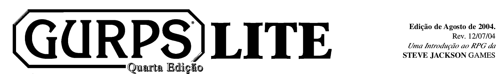 Créditos da Edição Original
Regras para GURPS criadas por STEVE JACKSON • GURPSLite — Regras
Condensadas por SCOTT HARING e SEAN PUNCH
Editado por ANDREW HACKARD e STEVE JACKSON
Ilustrado por CHRIS DIEN, TORSTEIN NORDSTRAND, BOB STEVLIC e ERIC
WILKERSON • Design Gráfico por JUSTIN DE WITT.
Créditos da Edição Nacional
Tradução: Ana Paula Sedrez de Souza e Erik Vinicius Q. Sampaio
Revisão: Douglas Quinta Reis
Diagramação Eletronica: Tino Chagas
Versão HTML: Ruither Borba
O QUE É GURPS
GLOSSÁRIO
O BÁSICO
TESTES DE HABILIDADE
TESTES DE REAÇÃO
AVALIAÇÃO DE DANO
PERSONAGEM
PONTOS DE PERSONAGENS
ATRIBUTOS BÁSICOS
PLANILHA DE PERSONAGEM
CARACTERÍSTICAS SECUNDÁRIAS
IMAGEM E APARÊNCIA
ANTECEDENTES SOCIAIS
RIQUEZA E INFLUÊNCIA
VANTAGENS
DESVANTAGENS
PECULIARIDADES
PERÍCIAS
LISTA DE PERÍCIAS
EVOLUÇÃO DO PERSONAGEM
EQUIPAMENTO
ARMADURAS
ESCUDOS
ARMAS
É HORA DE JOGAR
PROEZAS FÍSICAS
PROEZAS MENTAIS
COMBATE
LESÃO, DOENÇAS E FADIGA
CENÁRIOS
O que é GURPS
GURPS é a abreviação de “Generic Universal RolePlaying System,” ou seja sistema genérico e universal de RolePlaying, o RPG do qual essas regras foram condensadas. Por que ele é chamado desta forma? Bem...
-“Generic ”. GURPS começa com regras simples e pode ser ampliado de modo a ter tanto detalhe quanto você queira. Essa versão condensada apresenta as “regras básicas” com as quais a maior parte dos GMs começam.
-“ Universal ”. O sistema básico de regras foi desenvolvido com ênfase no realismo. Ele pode ser usado em qualquer situação — cenários de fantasia ou históricos; no passado, presente ou futuro.
-“ RolePlaying ”. Esse não é apenas um jogo de “matar, pilhar e destruir”. As regras foram escritas de modo a tornar possível uma boa representação — e encorajá-la. Em GURPS você pode, durante algum tempo, fingir ser uma outra pessoa.
-“ System ”. Já foram publicados quase duzentos livros diferentes para GURPS, em oito línguas diferentes (até agora). Em todo o mundo ele é conhecido e reconhecido como um modelo de sistema de RPG.
Para jogar, você precisa dessas regras, três dados de seis faces, lápis e uma folha de papel em branco.
Este é um resumo do que é “essencial” em GURPS: todas as regras fundamentais, sem as opções e adornos que com freqüência confundem os jogadores novatos. Depois que se sentir confortável com estas regras, você pode pegar o GURPS Módulo Básico e ir direto para a ação. Mestres experientes irão, nós esperamos, encontrar neste livro uma ferramenta valiosa para ensinar a brincadeira para novos jogadores.
Glossário
GURPS é um RPG. E, como qualquer hobby, tem seu próprio linguajar. Para ajudá-lo a compreender os conceitos e termos usados neste jogo (e em outros RPGs), começaremos com algumas definições:
RPG: uma brincadeira na qual os participantes representam pessoas imaginárias ou personagens , em um ambiente histórico ou ficcional, e tentam agir da forma que estes personagens agiriam.
Mestre (GM): é o árbitro que escolhe as aventuras, descreve aos jogadores o que ocorre nelas, avalia os resultados e distribui os pontos de bônus.
Personagem: qualquer ser — pessoa, animal, robô etc. — que é representado pelo GM ou por um dos jogadores.
Personagem incidental (NPC): qualquer personagem representado pelo GM.
Personagem do jogador (PC): um personagem criado e representado por um dos jogadores.
Parâmetros: nome pelo qual nos referimos aos valores numéricos que descrevem um personagem, parte do equipamento etc, coletivamente.
Grupo: um conjunto de PCs que participam em uma mesma aventura.
Mundo de Jogo: uma ambientação para jogo; um cenário. “Mundo” pode significar, “planeta”, mas também pode se referir a uma região ou a um período histórico... ou até mesmo a um universo inteiro.
Aventura: a “unidade” básica em um RPG, a aventura representa uma missão ou trama simples. Ela pode requerer várias seções de jogo, ou apenas uma.
Encontro: uma “cena” de uma aventura, normalmente uma reunião de PCs e um ou mais NPCs.
Campanha: uma série contínua de aventuras. Normalmente, as campanhas têm o mesmo elenco de personagens de jogadores, e o mesmo GM (ou time de GMs). Ela pode ser transferida de um mundo de jogo para outro, por qualquer que seja o motivo. Raça: a espécie à qual o personagem pertence. Personagens não-humanos (elfos, anões, halflings e marcianos, por exemplo) são comuns em RPGs.
GURPS Lite é uma marca registrada 1998, 1999, 2000, 2001, 2003, 2004 da Steve Jackson Games Incorporated. Este livro foi produzido para ser distribuído
gratuitamente. É absolutamente proibida a incorporação deste jogo ou parte dele em outros produtos para distribuição por quaisquer meios. É proibida a
venda deste livreto ou sua inclusão como parte de qualquer produto para venda sem a permissão escrita da Steve Jackson Games Incorporated. Visite nosso
site em www.devir.com.br. Você pode também nos enviar uma carta para Devir Livraria Ltda. Caixa Postal 15239 —CEP 01599-970 — São Paulo — SP.
O Básico
O GURPS usa apenas dados de seis faces. Para avaliar o dano causado em combate (e várias outras coisas), é utilizado o sistema “dado + bônus”. Se a arma causa “4d+2” pontos de dano, isso significa: “jogue 4 dados e adicione 2 ao resultado.” Da mesma forma, “3d–3” é uma forma abreviada de dizer “jogue 3 dados e subtraia 3 do resultado.” Se você encontrar a expressão “2d,” ela será uma abreviação de “jogue 2 dados.” GURPS Lite descreve apenas três “mecanismos de jogo” básicos: testes de habilidade, testes de reação e avaliação de dano.
Testes de Habilidade
Um “teste de habilidade” é uma jogada de dados feita quando você precisa “testar” uma das perícias ou habilidades do personagem. Algumas vezes você jogará os dados; outras o GM fará o teste por você. Exemplo: você pode fazer um teste, ou jogar contra a Força do personagem para ver se ele consegue impedir que uma porta pesada seja fechada.
Toda vez que um personagem tentar realizar uma ação (ex., usar uma perícia), o jogador rola três dados para determinar o resultado. Isto é chamado de teste de habilidade . A tarefa em questão será bem sucedida se o resultado dos dados for menor ou igual ao número que governa a ação — quase sempre o valor de uma perícia ou de um atributo. Se não for, o teste falha . Exemplo: se você está fazendo um teste contra a Força, e a ST do personagem é igual a 12, um resultado menor ou igual a 12 será um sucesso. Portanto, quanto maior o número contra o qual você está fazendo o teste, mais fácil é ser bem sucedido.
Qualquer que seja o valor básico contra o qual você esteja jogando, um resultado igual a 3 ou 4 é sempre um sucesso, enquanto um resultado igual a 17 ou 18 é sempre uma falha.
Em geral, o jogador faz as jogadas de dados para as ações de seus personagens. Entretanto, o GM sempre pode optar por jogar os dados em segredo — v. Quando o GM Faz o Teste , mais adiante.
Para não transformar o jogo numa seqüência infindável de jogadas de dados, o GM só deve pedir um teste de habilidade se...
• A saúde, o dinheiro, os amigos, a reputação ou o equipamento de um PC estiverem correndo risco. Isso inclui perseguições, combate (mesmo se o alvo estiver parado e o disparo for a queima roupa!), espionagem, roubo e outras atividades similarmente “aventurescas”.
• Um PC trabalha para conseguir aliados, informações, novas aptidões, posição social, ou riqueza. O GM não deve exigir testes para...
• Tarefas absolutamente triviais como, atravessar uma rua, dirigir em uma cidade, dar comida a um cão, encontrar o armazém da esquina, ou ligar um computador.
• as tarefas cotidianas de um trabalho normal sem aventura ou perigo.
Existem duas circunstâncias nas quais o GM deve fazer o teste no lugar do PC e não permitir que o jogador veja o resultado:
1-quando o personagem não tiver como saber com certeza se foi bem sucedido ou não.
2-quando o jogador não puder saber o que está acontecendo.
Muitas vezes, as regras especificam modificadores para certos testes de habilidade. Esses bônus e redutores afetam o número contra o qual você está jogando — o seu “número alvo” — e não os resultados conseguidos nos dados. Os bônus sempre melhoram as chances do personagem, enquanto os redutores sempre as diminuem
Exemplo: quando o personagem estiver usando a perícia Arrombamento no escuro, o GM poderá dizer ao jogador que ele está submetido a um redutor igual a –5 neste teste. Se o nível de habilidade em Arrombamento do personagem for 9, o jogador fará um teste contra 9 menos 5, ou seja 4, quando o personagem estiver no escuro.
Um cenário específico pode implicar em modificadores que garantam uma facilidade ou imponham uma dificuldade relativa em uma dada situação. Exemplo: pode estar definido em uma aventura que existe um bônus igual a +10 nos testes para abrir uma fechadura pelo fato de ela ser primitiva e desajeitada. Se o nível de habilidade do personagem em Arrombamento for igual a 9, o jogador faria o teste contra 9 + 10, ou seja 19. Como o maior resultado possível em 3d é 18, tem-se a impressão que o sucesso está garantido. Nem sempre — v. Sucesso Decisivo e Falha Crítica mais adiante.
Os modificadores são cumulativos a menos que haja alguma coisa especificada em contrário. Por exemplo, se o personagem tentou abrir a fechadura primitiva no escuro, os dois modificadores serão aplicados, e o teste será contra 9 – 5 + 10, ou seja 14.
O nível de habilidade básico do personagem é o NH que está registrado na planilha do personagem naquele momento. O nível de habilidade efetivo do personagem para uma determinada tarefa é o nível de habilidade básico acrescentado de quaisquer modificadores designados para aquela tarefa. Nos exemplos de Arrombamento que vimos anteriormente, o nível de habilidade básico é 9 em todos os casos, enquanto que o nível de habilidade efetivo é respectivamente 4, 19 e 14.
Você não pode tentar fazer um teste de habilidade se o nível de habilidade efetivo do personagem for menor que 3 a não ser que esteja tentando uma jogada de defesa (pág. 28).
Depois que você calculou o nível de habilidade efetivo aplicando todos os modificadores pertinentes ao nível de habilidade básico, jogue 3d para determinar o resultado. Se o valor total conseguido nos dados for menor ou igual ao nível de habilidade efetivo do personagem, ele foi bem sucedido, e a diferença entre o nível de habilidade efetivo e o resultado dos dados é a margem de sucesso .
Exemplo : Se tem um nível de habilidade efetivo igual a 18 e obtem um resultado igual a 12, o personagem foi bem sucedido; e sua margem de sucesso é 6. Se o resultado for maior do que o nível de habilidade efetivo, ele falhou, e a diferença entre o resultado nos dados e o nível de habilidade efetivo é a margem de falha .
Exemplo : Se o personagem tiver um nível de habilidade efetivo igual a 9 e o jogador conseguir um resultado igual a 12, ele falhou; e a margem de falha é 3.
Muitas regras usam a margem de sucesso ou de falha para avaliar os resultados que realmente influem no jogo, por isso, tome o cuidado de anotar este valor quando fizer o teste.
Um sucesso decisivo é um resultado especialmente bom .
Um resultado igual a 3 ou 4 nos dados é sempre um sucesso decisivo.
Um resultado igual a 5 é um sucesso decisivo se o nível de habilidade efetivo for 15+ .
Um resultado igual a 6 é um sucesso decisivo se o nível de habilidade efetivo for 16+ .
Quando o jogador consegue um sucesso decisivo, o GM determina o que acontece. Mas é sempre algo bom! Quanto menor o resultado no teste, melhor o “bônus” que ele dará.
Uma falha crítica é um resultado particularmente ruim .
Um resultado igual a 18 é sempre uma falha crítica.
Um resultado igual a 17 é uma falha crítica se o nível de habilidade efetivo for menor ou igual a 15; caso contrário, é apenas uma falha comum.
Qualquer resultado 10 pontos ou mais acima do nível de habilidade efetivo é uma falha crítica: 16 no caso de um nível de habilidade igual a 6, 15 no caso de um nível de habilidade igual a 5, e assim por diante.
Quando o jogador tira uma falha crítica, o GM decide o que acontece. Mas é sempre algo ruim — quanto mais alto o resultado, piores as conseqüências.
Algumas vezes o personagem tem apenas uma chance de fazer alguma coisa, (desarmar uma bomba, saltar sobre um precipício, remover um apêndice inflamado, agradar ao Rei com uma música). Outras ele pode tentar várias vezes até ter sucesso (arrombar uma fechadura, fisgar um peixe, analisar um veneno). Outras vezes ainda, o personagem não saberá se foi bem sucedido ou falhou até que seja tarde demais para tentar novamente (traduzir o velho mapa do tesouro, fazer um pedido em um restaurante francês, construir um navio). Por último, existem aquelas vezes em que o personagem pode acabar se ferindo ao falhar, mas pode dar-se ao luxo de falhar algumas vezes (escalar uma parede, impressionar um membro de uma tribo selvagem).
O GM deve usar o bom senso para distinguir entre esses casos, de acordo com a situação exata na qual os aventureiros se encontram.
Às vezes, surge uma situação na qual dois personagens têm de comparar seus atributos, perícias, ou outras características para resolver uma disputa. Não é sempre que o personagem que tem o maior valor vence... mas é melhor apostar nele. Uma “Disputa” é uma forma rápida de resolver este tipo de situação de competição sem descrevê-la em detalhes. Em uma Disputa, cada competidor faz um teste contra a habilidade em questão — com todos os modificadores aplicáveis — depois compara seu resultado com o de seu oponente. Existem duas formas distintas de se fazer essa comparação.
Uma “Disputa Rápida” é uma competição que dura muito pouco tempo — com freqüência um segundo, às vezes ela é instantânea . Entre os exemplos desse tipo de situação incluem-se dois inimigos sacando suas pistolas ou dois arremessadores de facas vendo quem chega mais próximo da mosca.
Cada competidor faz seu teste. Se um deles for bem sucedido e o outro falhar, o vencedor é obvio. Se os dois forem bem sucedidos, o vencedor será aquele que tiver conseguido a maior margem de sucesso; se ambos falharem, o vencedor será aquele que conseguir a menor margem de falha. Um empate significa que ninguém venceu (nos exemplos acima, os dois pistoleiros sacaram suas armas ao mesmo tempo, ou as facas atingiram o alvo à mesma distância da mosca.)
Muitas vezes a quantidade pela qual o vencedor derrotou o perdedor é importante — um sucesso por 5 vs. uma falha por 5 normalmente significa mais que um sucesso por 2 vs. um sucesso por 1! A “margem de vitória” de um vencedor é a diferença entre a sua margem de sucesso e a margem de sucesso do perdedor, caso ambos tenham sido bem sucedidos. A soma de sua margem de sucesso e a margem de falha do perdedor no caso de um ter tido sucesso e o outro não, ou a diferença da margem de falha entre eles se ambos tiverem falhado.
Uma “Disputa Normal” é uma competição lenta com muitas reviravoltas — como, por exemplo, uma queda de braço.
Cada personagem faz seu teste. Se um for bem sucedido e o outro falhar, o vencedor é óbvio. Se os dois forem bem sucedidos ou falharem, as posições relativas dos competidores não se alterarão e os dois farão testes novamente. Mais cedo ou mais tarde, um personagem será bem sucedido enquanto o outro falhou. Neste caso, aquele que obteve o sucesso será o vencedor.
O tempo de jogo que dura cada tentativa depende da ação e fica a cargo do GM. Em situações de combate, cada tentativa dura um segundo... mas, no caso de uma disputa de pesquisa em uma biblioteca, com o destino do mundo dependendo de quem vai encontrar primeiro uma certa referência obscura, cada tentativa pode representar dias.
Testes de Reação
Na primeira vez em que um PC encontra um NPC cuja reação diante dele não está pré-determinada (v. mais adiante), o GM faz um “teste de reação” com 3d. Quanto maior o resultado, melhor a reação.
O GM então representa o NPC de acordo com as diretrizes dadas pela Tabela de Reações . O GM deveria manter o resultado desse teste em segredo. Os personagens não sabem, por exemplo, se aquele velho fazendeiro de aparência amigável está lhes dando um bom conselho ou mandando-os para uma armadilha.
Um teste de reação não é um teste de habilidade. Existem três diferenças importantes:
1 Não existe um “número alvo” contra o qual se deve comparar o resultado.
2 Se o resultado do teste for alto será bom e não ruim.
3 Os modificadores de reação aplicam-se diretamente ao resultado dos dados. Um bônus de reação é qualquer fator que torna os NPCs mais amigáveis , enquanto um redutor de reação é algo que induz os NPCs contra os Pcs.
Alguns modificadores de reação comuns:
Aparência pessoal e comportamento . Isso é especialmente verdadeiro para o personagem do grupo que estiver fazendo o contato! Uma aparência melhor do que a média dá um bônus, assim como o fazem algumas vantagens (v.pág. 8). Uma aparência pior do que a média e diversas desvantagens impõem redutores.
Preconceitos raciais ou de nacionalidade . Os elfos não gostam de anões, franceses não dão a mínima para os alemães, e assim por diante. Eles normalmente correspondem a redutores e assumem a forma de uma desvantagem Intolerância por parte do NPC.
Comportamento apropriado da parte dos jogadores! . Aqui o mestre tem uma chance de recompensar uma boa representação. Uma boa abordagem deveria valer um bônus igual a +1 ou mais! Uma abordagem completamente inadequada que hostiliza o NPC deveria impor ao grupo um redutor igual a –1 ou –2 no teste de reação. Não diga aos jogadores “Você ferrou tudo!” — represente simplesmente o personagem ofendido e deixe que eles descubram. Testes de reação aleatórios são excelentes para adicionar um toque de imprevisibilidade ao jogo — o jogo fica mais divertido para o GM também! Entretanto, nunca use jogadas de dados aleatórias no lugar da razão e da lógica.
Jogue três dados e aplique todos os modificadores de reação. 0 ou menos: Desastrosa. O NPC odeia os personagens e fará todo o possível para prejudicá-los. Nada será impossível: atacar, trair, ridicularizar em público, ou até mesmo ignorar um pedido de vida ou morte; são todas possibilidades válidas.
1 a 3: Muito ruim . O NPC não gosta dos personagens e irá prejudicá-los se lhe for conveniente fazê-lo: atacando, oferecendo termos absolutamente injustos em uma transação comercial e assim por diante.
4 a 6: Ruim . O NPC não dá a mínima para os personagens e irá prejudicá-los (como citado acima), se puder lucrar com isso.
7 a 9: Fraca . O NPC não fica impressionado. Ele pode ameaçar, exigir um suborno altíssimo para concordar em ajudar o grupo, ou algo similar.
10 a 12: Neutra . O NPC ignora os personagens tanto quanto possível. Ele está completamente desinteressado. Enquanto os protocolos forem seguidos, as transações transcorrerão calmas como de costume,.
13 a 15: Boa . O NPC gosta dos personagens e os auxiliará dentro de seus limites normais e cotidianos. Pedidos razoáveis serão atendidos.
16 a 18: Muito boa . O NPC tem os personagens em alta conta e será muito solícito e amigável, oferecendo ajuda voluntariamente e apresentando condições vantajosas em quase todos os negócios.
19 ou melhor: Excelente . O NPC ficará extremamente impressionado com os personagens e agirá o tempo todo a favor deles, dentro dos limites de suas próprias habilidades — talvez arriscando até mesmo sua vida, dinheiro ou reputação em nome deles.
Avaliação de Dano
Uma “avaliação de dano” é uma jogada feita durante uma luta, para ver quanto dano o personagem causa em seu adversário. A avaliação de dano usa o sistema “dado + bônus” (v. pág. 2). Muitas coisas podem afetar a quantidade final de dano causado por seu ataque. As armaduras reduzem o dano sofrido por seus portadores. Certos ataques causam dano extra se atravessarem a armadura: todas essas coisas serão explicadas nas regras de combate — v. pág. 29.
Personagens
Quando joga RPG, você representa uma outra pessoa — um “personagem” que você criou. O GURPS permite que o jogador decida exatamente que tipo de herói ele irá representar. Um minerador de asteróides? Um mago? Um viajante no tempo profissional? Você pode se inspirar em qualquer herói ou heroína de ficção, ou criar seu próprio “eu”, se preferir. Quando souber qual papel você quer representar, será hora de começar a dar vida ao seu personagem!
O GM (a pessoa que “coordena” o jogo) dará ao jogador um número de pontos de personagem com os quais ele “comprará” habilidades para o personagem. Exemplo: quanto mais forte você quiser que o personagem seja, mais pontos terá de gastar. Também se pode comprar características sociais vantajosas, como riqueza, e habilidades especiais chamadas vantagens (v. pág. 8).
Se quiser mais habilidades do que pode pagar com a quantidade de pontos que o GM determinou, o jogador pode conseguir alguns pontos extras aceitando que o personagem tenha força, aparência, riqueza, status social, etc. abaixo da média; ou escolhendo desvantagens — limitações específicas como visão ruim ou medo de altura (v. pág. 10).
As duas coisas mais importantes que o jogador deve saber sobre seu personagem são: quem é ele e qual é o papel que ele quer que o personagem represente em suas aventuras . Descubra que tipo de aventura o GM está planejando e que tipos de personagem ele vai permitir. Depois, comece a preencher os detalhes. Existem várias formas de se fazer isso.
Você pode escolher as habilidades que deseja, gastar os pontos de personagem, e elaborar um conceito de personagem que combine com suas habilidades. Um bom personagem é muito mais que uma coleção de habilidades, mas “comprar” as habilidades pode ser uma forma de inspiração.
Em vez disso, o jogador pode optar por escolher primeiro as qualidades principais do personagem — aquele punhado de coisas que definem o que ele é, como sua história pessoal, a aparência, comportamento, aptidões e perícias. Pense na maneira como ele adquiriu essas qualidades, depois gaste os pontos em características que combinam com esses traços.
Pontos de Personagem
Os pontos de personagem são a “moeda” usada na criação de personagens. Tudo que melhora suas habilidades custa pontos de personagem: o jogador tem de gastar um número de pontos igual ao valor indicado na descrição da habilidade e copiar anotar aquela habilidade em sua planilha de personagem para usá-la durante o jogo. Tudo que reduz a capacidade do personagem tem um custo negativo — isto é, devolve alguns pontos. Exemplo: se o jogador começar com 125 pontos, comprar 75 pontos em vantagens, e escolher –15 pontos em desvantagens, o personagem terá 125 – 75 + 15 = 65 pontos sobrando.
O GM decide com quantos pontos os personagens dos jogadores (PCs) — os heróis — serão criados. Isso depende de quão capazes o GM quer que eles sejam. Vejamos alguns exemplos de níveis de poder acompanhados das quantidades iniciais de pontos sugeridas:
Abaixo da Média (menos de 25 pontos): Crianças pequenas, servos irracionais, zumbis, etc.
Média (25 – 50 pontos): Pessoas comuns, como contadores e motoristas de táxi.
Competente (50 – 75 pontos): Atletas, policiais, pessoas ricas... qualquer um que leve uma vantagem clara sobre as pessoas “normais” que povoam a aventura.
Excepcional (75 – 100 pontos): Atletas brilhantes, policiais veteranos etc.
Herói (100 – 200 pontos): Pessoas que se encontram no ápice da realização física, mental ou social realista; ex. cientistas de renome internacional, SEALs* e milionários.
Pessoa Muito Especial (200 – 300 pontos): Personagens principais dos filmes de kung fu, romances fantásticos, etc.
Legendário (300 – 500 pontos): Protagonistas de poemas épicos e folclóricos.
Essa quantidade inicial de pontos é às vezes chamada de nível de poder da campanha.
Uma desvantagem é qualquer coisa que tenha um custo negativo, inclusive valores baixos de atributos, status social reduzido e todas as deficiências relacionadas no capítulo Desvantagens (pág. 10). Em teoria, o personagem pode continuar acumulando desvantagens até ter pontos suficientes para comprar quaisquer vantagens e perícias que o jogador queira. Na prática, a maioria dos GMs impõe um limite ao número de pontos de desvantagem que um PC pode ter. Uma boa regra prática é limitar as desvantagens a 50% da quantidade inicial de pontos de personagem — por exemplo, –75 em um jogo de 150 pontos.
Atributos Básicos
Quatro números chamados de “Atributos” definem as quatro características básicas do personagem: Força (ST), Destreza (DX), Inteligência (IQ) e Vitalidade (HT).
O valor 10 em qualquer atributo é gratuito , e representa a média humana. Valores mais altos custam pontos: 10 pontos para aumentar a ST ou a HT em 1 nível, 20 pontos para aumentar a DX ou a IQ em um nível. De forma similar, valores menores do que 10 terão um custo negativo: –10 pontos para cada nível de ST ou HT, –20 pontos para cada nível de DX ou IQ (lembre-se que esses valores em pontos negativos significam que você ganha esses pontos para gastar em alguma outra coisa!).
A maioria dos personagens tem atributos cujos valores variam entre 1 e 20, sendo que a maioria dos seres humanos normais tem valores que variam de 8 a 12. Valores acima de 20 são possíveis mas normalmente reservados para seres com características divinas — pergunte ao GM antes de comprar um atributo tão alto. Por outro lado, 1 é o valor mínimo para um ser humano.
Os atributos básicos que o jogador escolhe determinam as características do personagem — suas forças e fraquezas — durante o jogo. Escolha com cuidado:
6 ou menos: Incapacitado : Um valor tão baixo num atributo limita enormemente o estilo de vida do personagem.
7: Ruim : As limitações do personagem são claras e evidentes para qualquer um que o conheça. Esse é o menor valor que o personagem pode ter e ainda ser considerado em “boa forma”.
8 ou 9: Abaixo da média : Estes valores são limitantes, mas estão dentro da faixa normal para seres humanos. O GM pode proibir atributos abaixo de 8 para aventureiros em atividade.
10: Média : A maioria dos humanos se dá muito bem com um atributo igual a 10!
11 ou 12: Acima da média : Esses valores são superiores, mas dentro do que se espera de um ser humano.
13 ou 14: Excepcional : Atributos com um valor desses ficam imediatamente aparentes — na forma de músculos fortes, uma graça felina, um diálogo sagaz, ou uma saúde de ferro — para aqueles que conversam com o personagem.
15 ou mais: Impressionante : Um atributo de valor tão alto provoca comentários constantes e provavelmente guiará as opções profissionais do personagem.
A Força mede a compleição e o poder físico. Este é um atributo crucial se o personagem for um guerreiro em um mundo primitivo, pois um valor alto de ST permite que o personagem cause e absorva mais dano em um combate corpo-a-corpo. Todo aventureiro achará a ST útil para erguer e arremessar coisas, mover-se rapidamente quando estiver carregando uma carga, etc.
A força é menos “limitada” que os outros atributos; valores maiores do que 20 são comuns entre animais grandes, monstros fantásticos e robôs.
A Destreza mede uma combinação de agilidade, coordenação e habilidade motora fina. Ela controla a habilidade básica do personagem na maior parte dos esportes, luta, perícias necessárias para a operação de veículos e perícias artesanais que exigem um toque delicado. A DX também ajuda a determinar a Velocidade Básica (uma medida do tempo de reação, pág. 6) e o Deslocamento Básico (quão rápido o personagem corre, pág. 6).
Em termos gerais, a Inteligência mede a capacidade intelectual do personagem, incluindo a criatividade, a intuição, a memória, a percepção, o raciocínio, a sanidade e a força de vontade. Ela regula a habilidade básica do personagem em todas as perícias “mentais” — ciências, interações sociais, magia, etc. Todo mago, cientista, ou inventor precisa antes de qualquer coisa de um valor alto em IQ. O valor das características secundárias, como Vontade (pág. 6) e Percepção (pág. 6) é baseado no valor de IQ.
A vitalidade mede a energia e a saúde. Ela representa o vigor, a resistência (a venenos, doenças, radiação, etc) e a “persistência” física de uma pessoa. Um valor alto em HT é bom para qualquer um — mas é vital para guerreiros em cenários de nível tecnológico baixo. A HT determina o número de Pontos de Fadiga e entra no cálculo da Velocidade Básica (pág. 6) e do Deslocamento Básico (pág. 6).
A Carga Básica é o peso máximo que o personagem é capaz de erguer sobre a cabeça com uma das mãos em um segundo. Ela é igual a (ST x ST)/10 kg. Se a CB for maior do que 5 kg, arredonde para o número inteiro mais próximo. Exemplo: 8,1 kg torna-se 8 kg. O ser humano médio tem ST 10 e uma CB igual a 10 kg.
Você decide se seu personagem é destro ou canhoto. Sempre que decidir fazer alguma coisa significativa com a mão inábil, ele estará sujeito a um redutor igual a –4 no teste de habilidade. Isso não se aplica a coisas que ele normalmente faz com a “outra” mão, como usar um escudo.
O GURPS não faz distinção entre personagens destros e canhotos; qualquer um dos casos custa 0 pontos. Entretanto, a Ambidestria é uma vantagem que tem um custo em pontos de personagem – v. pág. 8.
Características Secundárias
As “características secundárias” são quantidades que dependem diretamente dos valores dos atributos. Você pode aumentar ou diminuir essas quantidades ajustando os atributos.
Pontos de Vida (PV) representa a capacidade de suportar ferimentos do corpo do personagem. Ele tem uma quantidade de PVs igual a sua ST. Exemplo: ST igual 10 dá 10 PVs.
Vontade mede a capacidade de resistir ao estresse psicológico (lavagem cerebral, medo, hipnotismo, interrogatório, sedução, tortura, etc) do personagem e sua resistência contra ataques sobrenaturais (magia, psiquismo etc.). A Vontade é igual à IQ. A Vontade não representa resistência física — para isso é preciso comprar HT!
Percepção (Per) representa a prontidão geral do personagem. O GM faz um “Teste dos Sentidos” contra a Per do personagem para ver se ele percebe alguma coisa. Per é igual à IQ.
Pontos de Fadiga (PF) representa o “estoque de energia” do corpo do personagem. Ele tem uma quantidade de PFs igual ao valor de sua HT. Assim, HT igual a 10 dá 10 PF.
Velocidade Básica é uma medida dos reflexos e da rapidez física geral do personagem. Ela ajuda a determinar a velocidade de corrida do personagem, a chance dele se esquivar de um ataque, e a ordem na qual ele age em um combate (Um valor alto na Velocidade Básica permitirá que o personagem aja antes que seus oponentes). Para calcular a Velocidade Básica você deve somar os valores de HT e DX do personagem e dividir o total por 4. Não arredonde este resultado . Um valor igual a 5.25 é melhor que um 5!
Esquiva: O valor da defesa Esquiva do personagem (V. Esquiva , pág.28) é igual à sua Velocidade Básica + 3, ignorando as frações. Exemplo: se a Velocidade Básica for 5,25, a Esquiva será 8. Você tem de fazer testes contra a Esquiva com 3d para ver se consegue se agachar ou desviar de um ataque.
Deslocamento Básico é a velocidade em metros por segundo. Isto é, quão rápido o personagem consegue correr (apesar dele ser capaz de ir um pouco mais rápido se sair numa “carreira” em linha reta; v. pág.23) O Deslocamento Básico começa com um valor igual à Velocidade Básica, menos as frações. Exemplo: Uma Velocidade Básica igual a 5,75 dá um Deslocamento Básico igual a 5. Uma pessoa comum tem Deslocamento Básico 5; portanto, ela é capaz de correr mais ou menos 5 metros por segundo se não tiver carga nenhuma.
A ST do personagem determina quanto dano ele causa em um combate sem armas ou com uma arma de mão. Dois tipos de dano derivam da ST.
Dano por Golpe de Ponta (abreviado como “GDP”) é o dano básico que ele causa com um soco, chute ou mordida, ou um ataque com uma arma de ponta como uma lança ou um florete.
Dano por golpe em Balanço (Abreviado como “BAL”) é o dano básico causado com armas que descrevem um arco durante os golpes, como o machado, o porrete ou a espada — qualquer coisa que funcione como uma alavanca para multiplicar a ST.
Consulte a tabela a seguir para calcular o dano básico. Ele está expresso no formato “dado + bônus”.
|
ST |
GDP |
BAL |
|---|---|---|
|
1 |
1d–6 |
1d–5 |
|
2 |
1d–6 |
1d–5 |
|
3 |
1d–5 |
1d–4 |
|
4 |
1d–5 |
1d–4 |
|
5 |
1d–4 |
1d–3 |
|
6 |
1d–4 |
1d–3 |
|
7 |
1d–3 |
1d–2 |
|
8 |
1d–3 |
1d–2 |
|
9 |
1d–2 |
1d–1 |
|
10 |
1d–2 |
1d |
|
11 |
1d–1 |
1d+1 |
|
12 |
1d–1 |
1d+2 |
|
13 |
1d |
2d-1 |
|
14 |
1d |
2d |
|
15 |
1d+1 |
2d+1 |
|
16 |
1d+1 |
2d+2 |
|
17 |
1d+2 |
3d–1 |
|
18 |
1d+2 |
3d |
|
19 |
2d–1 |
3d+1 |
|
20 |
2d–1 |
3d+2 |
Na planilha de personagem, GDP fica ao lado de BAL, os dois separados por uma barra. Ex. se você tem ST igual a 13, anotará “Dano 1d/2d–1”.
Aparência
Este parâmetro define as características “sociais” intrínsecas do personagem: aparência, educação e porte. Características com pontuações positivas (ex., uma Aparência melhor que a média e Voz Melodiosa) são consideradas vantagens (pág. 8), e obedecem todas as regras normais para vantagens. Outras características (como, por exemplo, uma aparência abaixo da média, Hábitos Detestáveis) tem valores negativos e são tratadas como desvantagens (pág. 10). Há outras características ainda (como peso, altura e ser destro ou não) que meramente adicionam “cor” ao personagem.
A aparência é principalmente um “efeito especial” — você pode escolher a aparência física que preferir para seu personagem.
A aparência é expressa em níveis. A maior parte das pessoas tem uma aparência “comum”, que custa 0 pontos. A beleza concede um bônus de reação; isto é uma vantagem, portanto custa pontos. Aparências desagradáveis impõem um redutor à reação, isto é uma desvantagem e lhe dá pontos de personagem.
Hediondo : O Personagem tem alguma coisa repugnante na aparência que pode ser: uma doença de pele grave, um glaucoma... preferivelmente vários destes problemas ao mesmo tempo. Isto impõe um redutor igual a –4 nos testes de reação. –16 pontos .
Feio : Como no caso anterior, mas não tão grave — talvez apenas um cabelo seboso ou os dentes tortos. Isto impõe um redutor igual a –2 nos testes de reação. –8 pontos .
Desagradável : a aparência do personagem tem alguma coisa vagamente antipática, mas não é nada que possa ser apontado com precisão. Isto impõe um redutor igual a –1 nos testes de reação. –4 pontos .
Comum : o nível pré-definido. A maioria das pessoas tem uma aparência comum. 0 pontos .
Atraente : O personagem não poderia participar de concursos de beleza, mas definitivamente tem uma boa aparência. Isto dá um bônus igual a +1 nos testes de reação. 4 pontos .
Elegante (ou Bonito) : o personagem poderia entrar em concursos de beleza. Isto dá um bônus igual a +4 nos testes de reação feitos por aqueles que se sentem atraídos por membros do sexo do personagem, +2 para todos os outros. 12 pontos .
Muito Elegante (ou Muito Bonito) : o personagem poderia vencer concursos de beleza — e o faz regularmente. Isto dá um bônus igual a +6 nos testes de reação feitos por aqueles que se sentem atraídos por membros do sexo do personagem, +2 para todos os outros. 16 pontos .
O personagem tem uma habilidade natural para impressionar e liderar os outros. Qualquer um pode criar a impressão de carisma através da aparência, educação, inteligência — mas o carisma verdadeiro independe dessas coisas. Cada nível dá um bônus igual a +1 em todos os testes de reação feitos por seres racionais com os quais o personagem interage ativamente (conversa, ensina, etc); bônus igual a +1 nos testes de Influência (v. Testes de Influência , pág. 24); e +1 nas perícias Liderança e Oratória. O GM pode definir que o carisma do seu personagem não afeta membros de raças extremamente alienígenas.
O personagem normalmente ou sempre se comporta de uma maneira considerada repugnante pelos outros. Um hábito detestável vale –5 pontos para cada redutor igual a –1 nos testes de reação das pessoas que percebem o problema. Especifique o comportamento quando criar o personagem e defina com o GM seu valor em pontos.
Exemplos : Cheiro ruim, coçar-se constantemente, ficar assoviando de modo desafinado, garantiriam –1 nos testes de reação e, portanto, valeriam –5 pontos cada. Ficar o tempo todo fazendo trocadilhos irritantes ou cuspir no chão poderia impor um redutor igual a –2 nos testes de reação e, por isso, valeriam –10 pontos cada. Nós deixamos os hábitos que valeriam –15 pontos (–3 nos testes de reação) a cargo da imaginação dos jogadores que são depravados o suficiente para querê-los!
O personagem tem uma voz naturalmente mais clara, ressoante e atraente. Isto dá um bônus igual a +2 em todas as perícias que dependem de falar ou cantar (com a aprovação do GM, é claro). O personagem também recebe um bônus igual a +2 em todos os testes de reação feitos por qualquer pessoa que puder ouvir a sua voz.
Antecedentes Sociais
É uma vantagem ser tecnologicamente avançado ou ter um talento para lingüistica. Uma inadequação nessas áreas pode ser uma desvantagem verdadeiramente incapacitante.
O “Nível Tecnológico” é um número que mede o desenvolvimento tecnológico de uma sociedade. Quanto mais avançada a sociedade, maior o seu NT. O GM lhe dirá qual o NT médio do seu mundo de jogo.
Os personagens também têm um NT, igual ao da tecnologia com a qual estão mais familiarizados. A não ser que o personagem seja especialmente primitivo ou avançado, seu NT pessoal será o mesmo que a média do mundo da campanha.
Em alguns cenários, o NT pessoal do personagem pode diferir do NT médio da campanha. Um mundo pode ter um NT médio 8, mas os cidadãos de uma nação mais avançada poderiam ter NT 9 enquanto os de uma região subdesenvolvida poderiam ter NT 7.
O NT pessoal do personagem é menor que o NT médio da campanha. O personagem começa sem nenhum conhecimento (ou valor pré-definido em perícias) relacionadas com equipamentos acima do seu NT pessoal. Ele pode aprender perícias tecnológicas baseadas em DX (relacionadas com veículos, armas, etc) durante a campanha, se conseguir encontrar um professor; mas diferenças fundamentais de pensamento impedem que ele aprenda perícias tecnológicas baseadas em IQ.
O NT pessoal do personagem é maior que o NT médio da campanha. O personagem pode começar o jogo com perícias relacionadas a equipamentos de NT menor ou igual ao seu NT pessoal. Isso é mais útil se ele também tiver acesso a equipamentos de NT alto, mas o conhecimento de um médico ou cientista hightech pode ser muito útil em um ambiente de NT baixo, mesmo sem os equipamentos especializados!
O GURPS assume que a maior parte dos personagens sabe ler e escrever em suas línguas “maternas”. Essa habilidade não custa nenhum ponto, mas você deve anotar a língua materna do personagem em sua planilha; da seguinte forma, “Português (materna) [0].”
O custo em pontos para se aprender uma língua adicional depende do “nível de compreensão” do personagem: uma medida de quão bem ele entende aquela língua como um todo. Existem quatro níveis de compreensão
Nenhum : O personagem não sabe nada sobre a língua. 0 pontos .
Rudimentar : O personagem sabe o suficiente para continuar sua vida cotidiana, mas está sujeito a um redutor igual a –3 quando utiliza perícias que dependem daquela língua. Um ponto para língua falada, um ponto para a escrita .
Com sotaque : O personagem consegue se comunicar de forma clara. Está sujeito a um redutor igual a –1 quando estiver usando perícias que dependem da língua. Dois pontos para a língua falada, dois pontos para a escrita .
Materna : O personagem é capaz de usar a língua tão bem quanto um nativo alfabetizado. Ele começa com uma língua neste grau gratuitamente. três pontos para a língua falada, três pontos para a escrita.
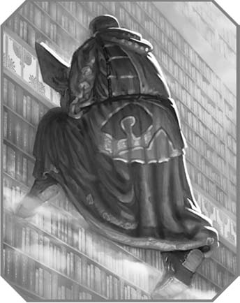O nível de compreensão da língua escrita define o grau de alfabetização do personagem naquela língua:
Analfabeto : Um nível de compreensão igual a Nenhum da língua escrita significa que o personagem não sabe ler naquela língua.
Semi-alfabetizado : Um nível de compreensão igual a Rudimentar da língua escrita significa que o personagem tem de ler devagar. Faça um teste de IQ para ver se ele consegue compreender o significado básico!
Alfabetizado : Um nível de compreensão da língua escrita igual a Com sotaque ou Materna significa que o personagem consegue ler ou escrever na velocidade normal.
O personagem ganha nível de compreensão igual a Materna em sua língua materna gratuitamente. Afinal de contas, é uma desvantagem ser menos alfabetizado: –1 ponto para Com Sotaque, –2 pontos para Rudimentar, –3 pontos para Nenhum.
Riqueza e Influência
Agora você precisa determinar a posição do personagem em sua sociedade: quanto dinheiro ele tem, de quais privilégios ele goza e como os outros reagem diante de sua presença?
A riqueza é relativa. Um americano de classe média vive com mais luxo do que um rei medieval, apesar de ter menos moedas de ouro guardadas em seu porão. Tudo depende do cenário.
A riqueza pessoal é medida em “níveis de riqueza”. Um nível Médio não custa pontos, e permite que o personagem tenha um estilo de vida comum em seu mundo de jogo. O restante destas regras aplicam-se apenas se o personagem for mais rico ou mais pobre, ou tiver uma fonte de renda que lhe permita não precisar de um trabalho.
Riqueza acima da média é uma vantagem; significa que o personagem começa com duas ou mais vezes a quantidade inicial de recursos média daquele mundo de jogo. Riqueza abaixo da média é uma desvantagem; significa que o personagem começa com apenas uma fração da quantidade inicial de recursos média.
Falido : O personagem não tem emprego, fonte de renda, dinheiro nem qualquer bem além das roupas do corpo. Ou ele é incapaz de conseguir um trabalho ou não existem empregos disponíveis. –25 pontos .
Pobre : A quantidade inicial de recursos do personagem é apenas 1/5 da média em sua sociedade. Alguns empregos não estarão disponíveis para ele e nenhum dos empregos que ele venha a encontrar pagarão um bom salário. –15 pontos .
Batalhador : A quantidade inicial de recursos do personagem é apenas 1⁄2 da média em sua sociedade. Qualquer emprego estará aberto para ele (ele pode ser um médico ou um ator de cinema Batalhador), mas não ganha muito bem. –10 pontos .
Médio : O personagem tem o nível de recursos pré-definido, como explicado anteriormente. 0 pontos .
Confortável : O personagem trabalha para viver, mas seu estilo de vida é melhor que o da maioria das pessoas. Sua quantidade inicial de recursos é igual ao dobro da média. 10 pontos.
Rico : A quantidade inicial de recursos do personagem é cinco vezes a média; ele de fato vive muito bem. 20 pontos .
Muito Rico : A quantidade inicial de recursos do personagem é 20 vezes maior do que a média. 30 Pontos .
Podre de Rico : A quantidade inicial de recursos é 100 vezes maior do que a média. Ele pode comprar quase tudo que quiser sem se preocupar com o custo. 50 pontos .
É possível ser tão conhecido que sua reputação se torna uma vantagem ou uma desvantagem. Isso afetará os testes de reação feitos pelos NPCs (v. pág. 3).
Os detalhes da reputação do personagem ficam inteiramente a cargo do jogador; ele pode ser conhecido por sua bravura, ferocidade, por comer cobras verdes, ou o que quer que o jogador queira. Entretanto, ele tem de especificar qual é a reputação.
Especifique qual será o modificador no teste de reação das pessoas que vierem a reconhecer o personagem. Isso vai determinar o custo básico de sua reputação. O custo será de 5 pontos para cada +1 de bônus no teste de reação (até o máximo de +4). O custo será de –5 pontos para cada –1 de redutor (até o máximo de –4).
O lugar formalmente reconhecido do personagem na sociedade é uma coisa diferente de sua fama e fortuna pessoais.
O Status é uma medida da posição social. Na maior parte dos mundos de jogo, o nível de Status varia entre –2 (escravo ou indigente) e 8 (um poderoso imperador ou rei venerado como um deus), sendo que um homem comum tem Status 0 (homem livre ou cidadão comum). Se você não comprar especificamente Status, o Status do personagem será 0. O Status custa 5 pontos por nível. Por exemplo, Status 5 custa 25 pontos, enquanto que Status –2 custa –10 pontos.
Status maior do que 0 significa que o personagem é um membro de uma das classes dominantes de sua cultura. Isso significa que outros membros de sua própria cultura tratam o personagem com deferência, concedendo-lhe um bônus em todos os testes de reação. Status menor que 0 significa que o personagem é um servo, um escravo ou simplesmente alguém muito pobre.
Vantagens
Uma “vantagem” é uma característica útil que dá ao personagem uma “vantagem” sobre alguém que, do contrário, teria as mesmas habilidades que ele. Cada vantagem tem um custo em pontos de personagem. Este custo é fixo para algumas vantagens; outras podem ser compradas em “níveis”, a um certo custo por nível (ex, Visão Aguçada custa 2 pontos/nível, portanto, se você quiser Visão Aguçada 6 terá de pagar 12 pontos). Vantagens com custo “variável” são mais complicadas; para mais detalhes, leia a descrição da vantagem em questão.
O GM tem a palavra final com relação à vantagem combinar ou não com o conceito de um determinado personagem.
O personagem tem sentidos superiores. Cada sentido aguçado é uma vantagem independente que dá um bônus igual a +1 por nível em todos os testes dos Sentidos (pág. 24) que o personagem fizer — ou que o GM fizer por ele — utilizando aquele sentido. Os tipos disponíveis são:
Audição Aguçada
Paladar / olfato Aguçado
Tato Aguçado
Visão Aguçada.
O personagem é capaz de lutar ou agir com igual destreza com ambas as mãos, sem que sua DX esteja sujeita ao redutor igual a –4 pelo fato dele estar usando sua mão ambiesquerda (v. pág. 5). Se acontecer algum acidente a um dos braços ou mãos do personagem, assuma que isso aconteceu com a mão ou o braço esquerdo.
O personagem é extraordinariamente talentoso em descobrir as motivações dos animais. Quando ele encontrar um animal, o GM fará um teste contra a IQ dele e dirá ao jogador o que o personagem “sente”. Isso revela o estado emocional do animal — amigável, atemorizado, hostil, faminto, etc — e se ele está sob algum tipo de controle sobrenatural. O personagem também pode usar suas perícias de Influencia (v. pág. 15) em animais da mesma maneira que o faria em seres racionais, o que normalmente lhe garante uma reação positiva.
O personagem subtrai automaticamente 5 metros no caso de uma queda (trate isso como um sucesso automático num teste de Acrobacia — e não repita o teste). Adicionalmente, um sucesso em um teste de DX divide pela metade o dano causado por qualquer queda (v. pág. 32). Para utilizar este benefício, os membros do personagem não podem estar presos e o seu corpo tem de estar livre para se mexer enquanto ele cai.
O personagem tem reflexos extraordinariamente rápidos e dificilmente ficará surpreso durante mais que um momento. O personagem recebe um bônus igual a +1 em todas as jogadas de defesa ativa (v. a seção Defendendo na pág. 28) e um bônus igual a +2 nas Verificações de Pânico (v. o parágrafo Verificações de Pânico na pág. 24). O personagem nunca fica “paralisado” em uma situação de surpresa e ganha um bônus igual a +6 em todos os testes de IQ para acordar ou se recuperar de uma surpresa ou “atordoamento” mental.
O personagem não pode contar sempre com esta vantagem, mas algumas vezes ele sente um arrepio na espinha, e sabe que tem alguma coisa errada... o GM faz secretamente para ele um teste de Percepção em qualquer situação que envolva uma emboscada, um desastre eminente, ou algum perigo similar. No caso de um sucesso, o personagem é alertado de que alguma coisa está errada. Um resultado igual a 3 ou 4 significa que ele percebe alguns detalhes com relação à natureza do perigo.
A sorte parece sorrir para o personagem sempre que ele corre riscos! Toda vez que correr um risco desnecessário (na opinião do GM), o personagem ganha um bônus igual a +1 em todos os seus testes de habilidade. Além disso, ele pode repetir quaisquer testes que resultaram em falhas críticas que venham a ocorrer enquanto ele estiver assumindo este comportamento de alto risco.
O personagem tem uma “sensibilidade” especial para as outras pessoas. Quando ele encontra alguém pela primeira vez — ou quando reencontra depois de um longo tempo — o jogador pode pedir que o GM faça um teste contra a IQ do personagem. No caso de um sucesso, o mestre dirá o que o personagem sente com relação àquela pessoa. No caso de uma falha no teste de IQ, o GM mentirá !
Esse talento é excelente para detectar impostores, pessoas possuídas, etc., assim como para descobrir a quem realmente os NPCs são leais.
Variável O personagem é uma pessoa excepcionalmente capaz de evitar ataques! Isso pode ser devido a uma cuidadosa observação de seu oponente, concentração de chi , ou o que quer que se enquadre em seu passado. Existem três versões:
Bloqueio Ampliado : O personagem adiciona um bônus igual a +1 ao valor de seu Bloqueio com a perícia Escudo. 5 pontos .
Esquiva Ampliada : O personagem adiciona um bônus igual a +1 ao valor de sua Esquiva. 15 pontos .
Aparar Ampliado : O personagem adiciona um bônus igual a +1 ao valor de sua manobra Aparar. O jogador pode comprar essa vantagem para o personagem lutar de mãos limpas (5 pontos), com qualquer perícia com Armas de Mão (5 pontos), ou para todas as formas de aparar (10 pontos). 5 ou 10 pontos .
O personagem é uma pessoa muito difícil de ser atemorizada ou intimidada! Some seu nível de Destemor a sua Vontade sempre que for fazer uma Verificação de Pânico, tiver que resistir ao uso da perícia Intimidação (v. pág. 15) ou a um poder sobrenatural que induza medo. Você também subtrai o nível de Audácia do personagem de todos os testes de Intimidação feitos contra ele.
O corpo do personagem tem uma flexibilidade fora do comum. Essa vantagem tem dois níveis:
Flexibilidade : O personagem ganha um bônus igual a +3 em testes de Escalada e nos testes de Fuga para escapar de cordas, mordaças e coibições similares. Ele pode ignorar redutores de até –3 por trabalhar em lugares apertados (incluindo muitos testes de Explosivos e Mecânica). 5 pontos .
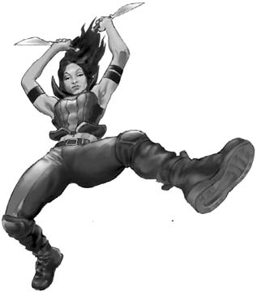
Ultra-Flexibilidade
das Juntas : Como o caso anterior com algumas adições. O
personagem não consegue apertar-se ou espremer-se de forma anormal,
mas qualquer parte de seu corpo pode ser flexionada para qualquer
lado. Ele ganha um bônus igual a +5 nos testes de Escalada, Fuga, e
nas tentativas de se desvencilhar. Além disso, pode ignorar até –5
em redutores por trabalhar em lugares apertados. 15 pontos.
O personagem é incrivelmente duro de matar. Cada nível de Difícil de Matar dá um bônus igual a +1 nos testes de HT feitos para ver o personagem consegue sobreviver quando o número de PVs é menor ou igual a — ST, e em qualquer teste de HT cuja falha signifique morte instantânea (devido a um colapso cardíaco, veneno, etc). Se esse bônus for a diferença entre o sucesso e a falha, o personagem desmaia, aparentemente morto (ou incapacitado), mas desperta novamente passado o período de tempo apropriado — v. o parágrafo Recobrando a Consciência pág. 30).
O personagem é tão suscetível a ferimentos quanto qualquer outra pessoa, mas não os sente com a mesma intensidade. Ele nunca estará sujeito aos redutores devido ao choque quando é ferido. Além disso, ele terá um bônus igual a +3 em todos os testes de HT para ver se consegue evitar uma queda/prostração ou ficar atordoado — e, se for torturado fisicamente, ele receberá um bônus igual a +3 para resistir. O GM pode permitir que o jogador faça um teste de Vontade +3 para ver se o personagem consegue ignorar a dor em outras situações.
O personagem consegue viajar no tempo ou para mundos paralelos (algumas vezes conhecidos como “linhas de tempo”) simplesmente desejando “saltar”. É preciso decidir se o personagem é um salta-tempos ou um salta-dimensões . Para poder fazer os dois o jogador terá de comprar Saltador (Tempo) e Saltador (Mundos) separadamente e pelo custo total.
Para começar uma viagem, o personagem precisa visualizar seu destino, concentrar-se durante 10 segundos e fazer um teste de IQ. Ele pode apressar a viagem, mas o teste ficará sujeito a um redutor igual a –1 para cada segundo de concentração omitido. Independente do valor da IQ, um resultado maior ou igual a 14 será sempre uma falha. No caso de um sucesso, o personagem aparece no destino desejado. No caso de uma falha, ele não vai a lugar algum. No caso de uma falha crítica, o personagem aparece no lugar errado , que pode ser em qualquer época ou mundo que o GM desejar!
Ele aparecerá em seu destino exatamente no mesmo lugar em que ele encontrava no mundo ou época de onde partiu — ou tão próximo quanto possível.
Se não houver um lugar “seguro” correspondente a menos de 100 metros de seu destino, o salto falhará e o personagem saberá o motivo da falha.
O uso desta habilidade sempre custa ao menos 1 Ponto de Fadiga (v. pág. 31), independente de ela ter funcionado ou não. Épocas ou mundos particularmente “distantes” podem custar mais, podendo chegar até mesmo a 10 PF, a critério do GM.
O personagem tem um talento especial para aprender línguas. Quando aprende uma nova língua com um nível de compreensão maior do que Nenhum, ele passa automaticamente a poder usá-la como se a soubesse com um nível de compreensão a mais.
O personagem é um sortudo! Existem três níveis de sorte, que são cada vez mais “cinematográficos”:
Sorte : Uma vez a cada hora de jogo , o jogador pode refazer duas vezes um teste cujo resultado tenha sido ruim e escolher o melhor dos três resultados! Ele tem de declarar que está usando a Sorte do personagem imediatamente depois de jogar os dados. 15 pontos .
Sorte Extraordinária : Funciona como descrito, mas utilizável a cada 30 minutos. 30 pontos .
Sorte Ridiculamente Grande: Funciona como a sorte, mas utilizável a cada 10 minutos! 60 pontos .
A Sorte do personagem se aplica apenas a seus próprios sucessos, dano causado ou testes de reação, ou em eventos exteriores que o afetam ou afetam todo o seu grupo; ou quando ele estiver sendo atacado (neste caso ele pode fazer com que o atacante refaça seu teste três vezes e poderá escolher o pior resultado para o ataque dele!)
Os olhos do personagem se adaptam rapidamente à escuridão. Cada nível dessa habilidade (máximo de 9 níveis) permite que ele ignore –1 ponto dos redutores de combate ou visão devido à escuridão, desde que haja pelo menos um pouco de luz.
Em condições normais, o personagem sempre consegue se manter em pé, independente de quão estreita é a superfície na qual ele está andando (uma corda esticada, uma saliência, um galho de árvore, etc.), sem precisar fazer qualquer teste. Se a superfície estiver úmida, escorregadia ou instável, ele recebe um bônus igual a +6 em todos os testes para ver se ele consegue se manter em pé. Em combate, ele recebe um bônus igual a +4 na DX e nos testes de habilidade baseados na DX que envolvam manter-se em pé ou evitar quedas/prostrações. Por último, o personagem recebe um bônus igual a +1 nas perícias Acrobacia e Escalada.
O personagem é naturalmente resistente (ou até mesmo imune) a doenças ou venenos. Isso lhe dá um bônus em todos os testes de HT para resistir à incapacitação ou a ferimentos advindos destas fontes.
Imunidade a Doenças : O personagem pode receber um bônus igual a +3 pagando 3 pontos de personagem ou igual a +8 pagando 5 pontos.
Imunidade a Venenos : O personagem terá um bônus igual a +3, pagando 5 pontos.
O personagem tem uma aptidão natural para um conjunto de perícias intimamente relacionadas. O “talento” pode ser comprado em níveis, que dão um bônus igual a +1 para cada nível em todas as perícias afetadas, mesmo quando o personagem está usando valores pré-definidos. Esta vantagem aumenta efetivamente o valor dos atributos do personagem para efeito destas perícias apenas ; portanto, essa é uma forma barata de se tornar capacitado em uma pequena classe de perícias.
Um personagem nunca poderá ter mais do que quatro níveis de um determinado Talento. Entretanto, talentos sobrepostos (e apenas eles) podem dar bônus maiores que +4 numa perícia.
O custo de um talento depende do tamanho da classe de perícias afetadas. Alguns exemplos:
Engendrador inclui Armeiro, Conserto Eletrônico, Engenharia, Mecânica, e outras. 10 pontos/nível .
Agente de Campo inclui Camuflagem, Naturalista, Navegação, Sobrevivência, e Rastreamento. 10 pontos/nível .
Agente Insinuante inclui todas as parícias de Influência como Dissimulação, Boemia, Liderança, e Oratória. 15 pontos/nível .
Existem muitas outras possibilidades! Os GMs devem se sentir à vontade para criarem seus próprios Talentos conforme sua necessidade.
Desvantagens
Uma “desvantagem” é um problema ou imperfeição que torna o personagem menos capaz do que seus atributos, vantagens e perícias indicam. Além das características descritas nessa seção, inclui-se entre as desvantagens tudo que tem um custo negativo que foi descrito anteriormente: Status baixo, Riqueza abaixo da média, etc.
Você provavelmente está se perguntando, “Por que eu escolheria desvantagens para meu personagem?” Bem, é que as desvantagens têm um custo “negativo” em pontos de personagem. Assim sendo, as desvantagens dão pontos de personagem extras , que permitirão que você aperfeiçoe seu personagem em outras coisas. Além disso, uma imperfeição ou duas tornam seu personagem mais interessante e realista assim como a representação dele ainda mais divertida!
Pode ser que o GM queira “limitar” a quantidade de pontos extras que você pode ganhar comprando desvantagens. Uma boa regra prática é manter o total de pontos em desvantagens menor do que 50% da quantidade inicial de pontos — por exemplo, –75 pontos em um jogo com 150 pontos — apesar de isto ficar inteiramente a critério do GM.
Anular Desvantagens : O jogador não pode escolher uma desvantagem que uma de suas vantagens alivia ou anula! Exemplo: se o personagem tem Ouvido Aguçado, você não poderá comprar Duro de Ouvido.
Desvantagens de Vilões : algumas desvantagens — como por exemplo Sanguinolência — não são adequadas para um “herói” e o GM deve se sentir à vontade para proibir seu uso em PCs. Mas elas são mais facilmente encontradas entre os vilões mais demoníacos dos mundos de ficção, portanto ela se encaixaria perfeitamente na criação de um bom NPC.
Algumas desvantagens mentais não afetam o personagem constantemente. Um asterisco (*) aparece ao lado do nome das desvantagens que dão ao personagem uma chance de controlar seus impulsos. Em uma circunstância que provavelmente ativaria seu problema, jogue 3d. Um resultado menor ou igual a 12 significa que o personagem foi bem sucedido e conseguiu ignorar sua desvantagem. Um resultado maior ou igual a 13 significa que o personagem falhou e sofrerá os efeitos! Este é um teste de autocontrole . você não é obrigado a fazer esse teste — uma boa representação significa que você cederá voluntariamente a seu problema.
O personagem tem visão ruim, seus testes de visão estão sujeitos a um redutor igual a –6 e suas tentativas de acertar um adversário em combate estão sujeitas a um redutor igual a –2. Essa desvantagem custa –10 pontos em todos os NTs nos quais ela pode ser compensada (com o uso de óculos ou lentes de contato), e –25 pontos quando não puder.
O personagem não tem controle total sobre suas próprias emoções. Faça um teste de autocontrole sempre que estiver em uma situação estressante. Se falhar, o personagem perde a cabeça e insulta, ataca ou age de alguma outra maneira contra o elemento que provocou a explosão.
O personagem quer ver seus inimigos mortos . Em uma batalha ele dará preferência a golpes fatais, e sempre dará um último tiro para ter certeza de ter liqüidado um inimigo caído. O personagem deverá fazer um teste de autocontrole sempre que precisar aceitar uma rendição, evitar um sentinela, fazer um prisioneiro; etc. Se falhar, o personagem tentará ao invés disso matar seu oponente — mesmo que isso signifique infringir a lei, denunciar sua posição, desperdiçar munição ou desobedecer ordens. Fora de combate, o personagem nunca esquecerá que um inimigo é um inimigo.
O personagem sente orgulho de um conjunto de princípios que ele segue o tempo todo. Os detalhes específicos podem variar, mas eles sempre envolvem um comportamento “honrado”. Ele fará quase tudo — talvez arriscar a própria vida — para evitar a “desonra” (seja lá o que isso signifique para ele).
O valor em pontos de um Código de Honra específico depende de quanto problema ele pode vir a causar e quão arbitrários e irracionais são seus requisitos. Um código informal que se aplica apenas entre seus colegas vale –5 pontos. Um código formal que se aplica apenas aos seus colegas, ou um código informal que se deve seguir o tempo todo vale –10 pontos. Um código formal que se deve seguir o tempo todo, ou que exija um suicídio caso venha a ser desobedecido vale –15 pontos. O GM tem a palavra final! Alguns exemplos:
Código de Honra (Piratas) : Sempre vingar um insulto, independente do perigo; os inimigos de seus amigos são seus inimigos; nunca atacar um companheiro de tripulação ou um amigo a não ser em um duelo justo. Tudo o mais pode ser feito. Ele também é aplicável a bandoleiros, gangues de motociclistas etc. –5 pontos .
Código de Honra (Cavalheiros) : Nunca deixar de honrar sua palavra. Jamais ignorar um insulto a si, a uma dama ou a sua bandeira; insultos só podem ser retirados com um pedido de desculpas ou um duelo (que não será necessariamente até a morte!). Nunca tirar vantagem de um oponente de qualquer forma que seja; armas e circunstâncias devem ser iguais, exceto em uma guerra. Este ultimo aplica-se apenas a cavalheiros. Um ato descortês vindo de alguém com status menor ou igual a 0 será resolvido com chicotadas, não em um duelo!. –10 pontos .
O personagem é por natureza uma pessoa muito inquisitiva. Esta não é a curiosidade que afeta todos os PCs (“O que será que tem naquela caverna? De onde veio aquele disco voador?”) e sim uma curiosidade intensa (“O que acontece se eu apertar este botão?”).
Faça um teste de autocontrole quando o personagem estiver diante de uma situação ou objeto interessante. Se falhar, ele o examinará mesmo sabendo que corre perigo. Os jogadores que representam bem seus personagens não tentarão fazer este teste com muita freqüência...
O personagem acredita em algo que simplesmente não é verdade. Isto pode fazer com que os outros o considerem insano. E pode ser que eles tenham razão! Se o personagem sofrer de Fantasias, o jogador terá de representar essa crença em todas as situações. O valor em pontos da Fantasia varia conforme a sua natureza.
Fantasias Menores afetam o comportamento do personagem e todos que se encontram a sua volta irão notá-la em pouco tempo (redutor igual a –1 nos testes de reação), apesar de ela não impedir que o personagem aja mais ou menos normalmente. –5 pontos .
Grandes Fantasias afetam gravemente o comportamento do personagem, mas não o impede de levar uma vida razoavelmente normal. A reação dos outros diante do personagem estará submetida a um redutor igual a –2. –10 pontos
Fantasias Graves afetam tão intensamente o comportamento do personagem que o impedem de levar uma vida normal. A reação dos outros diante do personagem estará submetida a um redutor igual a –3, mas é mais provável que eles sintam mais pena ou medo dele do que tendência de atacá-lo. –15 pontos
O personagtem é excessivamente afeito a uma boa refeição ou bebida. Se tiver uma chance, ele sempre levará consigo uma provisão extra. Ele nunca perderá voluntariamente uma refeição. Faça um teste de autocontrole sempre que por algum motivo o personagem tiver que resistir a uma iguaria tentadora ou a um bom vinho. Se o jogador falhar no teste, o personagem come um pouco a despeito das conseqüências.
O personagem é apaixonado por dinheiro. Faça um teste de autocontrole toda vez que lhe forem oferecidas riquezas como pagamento por um trabalho, lucros de uma aventura, despojos de um crime ou simplesmente uma isca. Se falhar, o personagem fará o que for necessário para receber este dinheiro. Pequenas somas não o tentarão muito se ele for rico, mas, se for pobre , seu teste de autocontrole estará sujeito a um redutor igual a –5 quando um prêmio realmente valioso lhe for oferecido.
O personagem não é surdo mas teve alguma perda auditiva. Ele estará submetido a um redutor igual a –4 em todos os testes de Audição e em qualquer uso de uma perícia em que seja importante ouvir o que alguém está dizendo (Se for o personagem a falar, esta desvantagem não o afeta).
O personagem tem de obedecer a lei e fazer o melhor que pode para que os outros também o façam. Em um lugar sem lei ou onde ela seja fraca, o personagem não ficará fora de si, mas agirá como se as leis do lugar onde nasceu estivessem em vigor. Ele sempre partirá do pressuposto que os outros são honestos a não ser que tenha provas do contrário.
Esta é uma desvantagem, porque ela irá muitas vezes limitar as opções do personagem! Faça um teste de autocontrole sempre que o personagem estiver diante da “necessidade” de infringir leis irracionais. Se falhar, ele terá de obedecer à lei, independente das conseqüências. Se o personagem conseguir resistir a seus ímpetos e infringir a lei, será necessário fazer um segundo teste de auto-controle logo em seguida. Se falhar, ele terá de se entregar às autoridades!
O personagem odeia falar e discutir. Prefere agir! Quando estiver sozinho, ele sempre agirá primeiro e pensará nas conseqüências depois. Em grupo, quando seus amigos desejarem parar para discutir alguma coisa, ele dará sua opinião rapidamente — se chegar a fazê-lo — e depois agirá . Represente! Faça um teste de autocontrole em qualquer situação na qual for mais sábio parar e pensar. Se falhar, ele terá de agir.
O personagem não gosta e desconfia de algumas (ou todas) as pessoas que são diferentes dele. O personagem pode ter preconceitos com base na classe, etnia, nacionalidade, religião, sexo ou espécie. A reação das vítimas de sua intolerância estará submetida a um redutor que pode variar entre –1 e –5 (a critério do GM). O valor em pontos depende do alcance da Intolerância.
Se o personagem for extremamente intolerante, a reação dele diante de qualquer um que não seja da classe social, origem étnica, nacionalidade, religião, ou espécie (escolha uma destas opções) estará submetida a um redutor igual a –3. Uma intolerância tão grande assim valeria –10 pontos.
Se for direcionada contra apenas uma classe, etnia, nacionalidade, religião, sexo ou espécie específica, a intolerância valerá desde –5 pontos, no caso de vítimas encontradas comumente até –1, no caso de vítimas encontradas muito raramente (uma peculiaridade muito desagradável).
O personagem reagirá sempre de maneira muito ruim diante daqueles que parecem mais inteligentes, atraentes, ou em melhor situação que a dele! Ele resistirá a qualquer plano proposto por um “rival”, e odiará se a estrela do plano for outra pessoa. Se um NPC for invejoso, o GM aplicará um redutor de reação entre –2 e –4 sobre as vítimas de sua inveja.
O personagem sente um desejo incontrolável por envolvimentos amorosos. Faça um teste de autocontrole toda vez que ele tiver contato — mesmo que breve — com um membro interessante do sexo que o atrai — use um redutor igual a –5 no teste, se essa pessoa for elegante/bonito(a), ou –10 se ela for muito elegante/muito bonito(a). Se falhar no teste, ele deverá tentar uma “cantada”, usando todos os meios e perícias que puder.
Toda a vida do personagem gira em torno de um único objetivo, uma fixação sobrepujante que motiva todas as suas ações.
Faça um teste de autocontrole em qualquer situação na qual seria prudente o personagem desviar-se de seu objetivo. Se falhar, ele continuará a perseguir sua obsessão a despeito das conseqüências.
O custo em pontos depende do tempo necessário para alcançar o objetivo. Um objetivo a curto prazo (por exemplo, assassinar alguém) valeria –5 pontos, enquanto um objetivo a longo prazo (como por exemplo, eleger-se presidente) valeria –10 pontos.
O personagem acredita ser muito mais poderoso, inteligente ou competente do que realmente é. Ele pode se orgulhar disso e ficar contando vantagens ou ter simplesmente uma certeza silenciosa, mas o jogador tem de representar essa característica.
Ele tem de fazer um teste de autocontrole toda vez que o GM achar que o personagem está agindo com excesso de cuidado. Se falhar, o personagem deverá seguir em frente como se fosse capaz de lidar com a situação! A cautela não é uma opção.
O personagem receberá um bônus igual a +2 em todos os testes de reação feitos por pessoas jovens ou ingênuas (que acreditarão que o personagem é tão bom quanto diz ser), mas estará sujeito a um redutor igual a –2 no caso de NPCs mais experientes.
O personagem se opõe ao uso da violência. Esta desvantagem pode assumir duas formas.
Relutância em Matar : O personagem está sujeito a um redutor igual a –4 em suas tentativas de atingir uma pessoa (mas não um monstro, uma máquina etc) com um ataque mortal, ou igual a –2 se ele não puder ver-lhe o rosto. Se o personagem matar alguém, jogue 3d — ele ficará triste e inútil durante um número de dias igual ao resultado desta jogada. –5 pontos .
Incapaz de Ferir Inocentes : O personagem pode brigar — até mesmo provocar brigas — mas ele só usará força letal contra um inimigo que está tentando feri-lo gravemente. –10 pontos
Uma “fobia” é o medo de um objeto, criatura ou circunstancia específica. Quanto mais comum for o objeto ou a situação, maior será o valor em pontos por temê-lo. Se tiver uma fobia, o personagem será capaz de controlá-la temporariamente, se conseguir um sucesso em um teste de autocontrole... mas o medo persistirá. Mesmo controlando o medo, o personagem estará sujeito a um redutor igual a –2 em todos os testes de IQ, DX e habilidade enquanto estiver diante da causa de sua fobia, e tem de fazer o teste novamente a cada 10 minutos para ver se o medo não assume o controle sobre ele. Se falhar no teste de autocontrole, o personagem irá tremer, fugir, entrar em pânico ou reagir de alguma maneira que impeça uma ação mais sensata.
Mesmo a mera ameaça do objeto de sua fobia requer um teste de autocontrole com um bônus igual a +4. Se os inimigos de fato lhe mostrarem o objeto de seu temor, o teste de autocontrole não terá nenhum modificador.
Algumas fobias comuns:
Sangue (Hematofobia): –10 pontos
Escuridão (Nictofobia): –15 pontos
Altura (Acrofobia): –10 pontos
Número 13 (Triscedecofobia): o teste terá um redutor igual a –5 se a Sexta-Feira 13 estiver envolvida! –5 pontos
Aranhas (Aracnofobia): –5 pontos
O personagem tem um forte sentimento de dever para com um determinado povo ou classe social. Ele nunca irá traí-los, abandoná-los quando estiverem com problemas, ou deixar que eles sofram ou passem fome se puder ajudar.
O GM designará um valor em pontos para o Senso do Dever com base no tamanho do grupo que o personagem se sente compelido a ajudar:
Indivíduo : (o presidente, seu ala*, etc): –2 pontos .
Grupo Pequeno (os amigos íntimos, companheiros de aventura ou esquadrão): –5 pontos
Grupo Grande (uma nação, os fiéis de uma religião ou até mesmo todas as pessoas que o personagem conhece pessoalmente): –10 pontos
Raça Inteira (toda a humanidade, todos os elfos etc): –15 pontos
Todos os Seres Vivos –20 pontos
O personagem odeia mentir — ou pelo menos mente muito mal. Faça um teste de autocontrole toda vez que ele tiver de ficar quieto sobre uma verdade desagradável (portanto, mentir por omissão). Faça um teste com um redutor igual a –5 se ele for contar uma mentira! Se falhar, acabará deixando escapar a verdade, ou se atrapalhará tanto que sua mentira ficará obvia. A perícia Lábia do personagem terá um redutor permanente igual a –5, e sua perícia Dissimulação estará sujeita a um redutor igual a –5 quando for usada com o propósito de enganar.
O personagem é simplesmente uma pessoa azarada. As coisas sempre dão errado para ele — e, geralmente, no pior momento possível. Uma vez por seção de jogo, o GM arbitrária e maliciosamente fará alguma coisa dar errado para o personagem. Pode ser que ele falhe automaticamente em uma jogada de dados vital, ou o inimigo (contra todas as possibilidades) apareça no pior momento possível. Se a trama da aventura pedir que algo de ruim aconteça com alguém, será com o personagem . O GM não pode matá-lo diretamente por causa de sua “má sorte”, mas qualquer coisa menos do que isso será aceitável.
O personagem fez um juramento que faria (ou não faria) algo. Qualquer que seja o voto, ele o levará muito a sério; se não o fizesse, não seria uma desvantagem. Essa característica é especialmente apropriada para cavaleiros, homens santos ou fanáticos.
O valor em pontos do voto deve estar diretamente relacionado às inconveniências que ele causa ao personagem. Mas o seu valor exato deve ser definido pelo GM. Alguns exemplos:
Voto Menos Importante : Silêncio durante o dia, vegetarianismo, castidade (é isso mesmo, para efeitos de jogo este é um voto de menor importância.) –5 pontos
Voto Importante : Não usar armas de lâmina, ficar em silencio o tempo todo, não dormir sob um teto, jamais ter nada além do que seu cavalo é capaz de carregar. –10 pontos
Voto Muito Importante : Nunca recusar um pedido de ajuda, sempre lutar com a mão trocada, caçar um inimigo até destruí-lo, desafiar todos os cavaleiros que encontrar para um duelo. –15 pontos
Peculiaridades
Uma “peculiaridade” é uma característica menor da personalidade. Não é uma vantagem, mas não é necessariamente uma desvantagem — é apenas uma coisa única que seu personagem tem. Exemplo: uma característica mais marcante, como Cobiça, é uma desvantagem. Mas se o personagem sempre insiste em receber seu pagamento em ouro, isso é uma peculiaridade.
Você pode escolher até cinco peculiaridades e receberá –1 ponto de personagem para cada uma delas... se o fizer, você terá 5 pontos a mais para gastar. Você pode também “recomprar” uma peculiaridade mais tarde pagando um ponto de personagem, mas como regra geral, você não deveria fazê-lo. As peculiaridades podem ter um custo baixo, mas são as grandes responsáveis por fazer o personagem parecer “real”!
Peculiaridades Mentais são pequenos traços da personalidade. Entretanto, o jogador deve representá-los. Se você escolher a peculiaridade “não gosta de lugares altos”, mas fizer o personagem subir em árvores o tempo todo e escalar despenhadeiros sempre que isso for necessário, o GM poderá penalizá-lo por má representação.
Para qualificar-se como uma peculiaridade mental, a característica do personagem tem de estar de acordo com um destes dois critérios: de tempos em tempos, ela deve requerer uma ação ou um comportamento específico do personagem, ou uma escolha da sua parte; ou então deve impor ao personagem um pequeno redutor a um pequeno conjunto de ações ou muito de vez em quando.
Peculiaridades Físicas são desvantagens físicas que são apenas leve ou raramente limitantes. Elas não necessitam de uma representação, mas impõem pequenos redutores em situações específicas durante o jogo.
Perícias
Uma “perícia” é um tipo específico de conhecimento; por exemplo, caratê, física, mecânica de automóveis ou uma mágica letal. As perícias são independentes umas das outras, embora o conhecimento de algumas perícias ajude no estudo de outras. Exatamente como acontece na vida real, o personagem começa sua carreira com algumas perícias e pode aprender outras se treinar durante o tempo necessário.
Um número chamado “nível de habilidade” mede a capacidade do personagem em cada uma de suas perícias: quanto maior este número, maior sua habilidade naquela perícia. Por exemplo, “Espadas Curtas 17” significa que o personagem tem um nível de habilidade igual a 17 quando está usando uma espada curta. Quando ele tentar fazer alguma coisa, você (ou o GM) joga 3d contra o nível de habilidade apropriado, levando-se em conta os modificadores adequados para aquela situação. Se o resultado for menor ou igual ao nível de habilidade modificado do personagem naquela perícia, ele foi bem sucedido! Entretanto, um resultado igual a 17 ou 18 é sempre uma falha. Veja a pág. 2, para mais detalhes sobre os testes de habilidade, modificadores, sucessos e falhas.
Todas as perícias são baseadas em um dos quatro atributos básicos. O nível de habilidade é calculado diretamente a partir do valor deste “atributo controlador”: quanto maior o valor do atributo, mais efetivo o personagem será em qualquer perícia baseada nele! Se o conceito do seu personagem exige muitas perícias baseadas em um determinado atributo, você deve considerar a possibilidade de criá-lo com um alto valor neste atributo, pois isto terá uma relação custo benefício melhor a longo prazo.
Perícias baseadas em ST dependem unicamente de corpulência e são muito raras.
Perícias baseadas em DX dependem da coordenação, reflexos e mãos firmes.
Perícias baseadas em IQ requerem conhecimento, criatividade e capacidade de raciocínio.
Perícias baseadas em HT são governadas pela condição física do personagem.
Alguns assuntos exigem mais estudo e prática do que outros. O GURPS Lite usa três “níveis de dificuldade” para avaliar o esforço necessário para se aprender ou aprimorar uma perícia. Quanto mais difícil a perícia, mais pontos você tem de gastar para comprá-la com um determinado nível de habilidade.
Perícias Fáceis são coisas que qualquer um pode fazer com relativa facilidade depois de um curto período de aprendizado.
Perícias Médias incluem a maior parte das perícias de combate, perícias relacionadas com o trabalho cotidiano, e perícias de convívio social e sobrevivência que as pessoas comuns usam em seu dia a dia.
Perícias Difíceis requerem um estudo ou treino formal intensivo.
Algumas perícias são diferentes em cada um dos níveis tecnológicos (v. a seção Nível Tecnológico , pág. 7) e são indicadas por “/NT”. Quando aprende uma destas perícias, o personagem tem de fazê-lo em um determinado nível tecnológico (NT). Não se esqueça de anotar o NT quando estiver incluindo uma destas perícias na planilha. Exemplo: Navegação/NT2 (consultar as estrelas com o uso de um astrolábio) é completamente diferente de Navegação/NT8 (encontrar a localização com precisão por meio de um aparelho GPS).
O personagem aprende perícias tecnológicas em seu NT pessoal. Ele também pode escolher perícias de um NT inferior . Mas só poderá aprender perícias de um NT superior durante o jogo — e só se ele tiver um professor e se a perícia não for baseada em IQ. Para aprender uma perícia tecnológica baseada em IQ de um NT superior, o personagem tem primeiro de elevar seu NT pessoal.
|
Nível de Habilidade Final |
Fácil |
Média |
Difícil |
|---|---|---|---|
|
Atributo -3 |
- |
- |
- |
|
Atributo -2 |
- |
- |
1 |
|
Atributo -1 |
- |
1 |
2 |
|
Atributo -0 |
1 |
2 |
4 |
|
Atributo +1 |
2 |
4 |
8 |
|
Atributo +2 |
4 |
8 |
12 |
|
Atributo +3 |
8 |
12 |
16 |
|
Extra +1 |
+4 |
+4 |
+4 |
Para poder aprender ou aprimorar uma perícia, é preciso gastar pontos de personagem. Quando o jogador usa pontos para comprar uma perícia, o personagem está sendo treinado para elevar o NH nesta perícia até um ponto em que ela lhe seja útil. No início, as perícias são fáceis de aprender — um pouco de treino ajuda muito! Mas aprimoramentos posteriores custam cada vez mais caro.
O custo em pontos de uma perícia depende de duas coisas: sua dificuldade e o nível de habilidade final que você quer que o personagem alcance com ela. Use a Tabela de Custo das Perícias (acima) para calcular o custo em pontos da perícia.
A primeira coluna mostra o nível de habilidade que o personagem está tentando alcançar, em relação ao valor do atributo controlador da perícia — DX para perícias relacionadas a DX, IQ para perícias relacionadas a IQ e assim por diante. Por exemplo, se a DX do personagem for 12 o nível “Atributo –1” seria igual a DX –1, portanto, 11; “Atributo + 0” seria igual a DX, portanto, 12; e “Atributo +1” seria DX +1, ou 13.
As três colunas mais à direita mostram o custo em pontos de personagem para se aprender perícias com diferentes graus de dificuldade, fácil, médio e difícil , no nível de habilidade desejado. Perícias mais difíceis custam mais pontos para serem aprendidas!
A maioria das perícias tem um “nível pré-definido”: o nível no qual o personagem conhecerá a perícia se não tiver recebido nenhum treinamento. Uma perícia tem um nível pré-definido se ela for uma coisa que qualquer pessoa é capaz de fazer... pelo menos o básico. Como regra geral, o valor pré-definido de uma perícia é o valor do seu atributo controlador com um redutor igual a –4 se for Fácil, –5 se for Média ou –6 se for Difícil.
Algumas perícias não tem nível pré-definido. Por exemplo, caratê é suficientemente complexo para que não se possa usá-lo sem treinamento.
Se o nível de habilidade pré-definido de uma perícia for baseado em um Atributo cujo valor é maior do que 20, trate o atributo como se o seu valor fosse 20 quando estiver calculando o nível pré-definido. Personagens super-humanos têm bons valores pré-definidos, mas não super .
Somente indivíduos de uma sociedade na qual aquela perícia seja conhecida podem tentar fazer um teste pré-definido daquela perícia. Exemplo: o valor pré-definido da perícia Mergulho assume que o personagem é de um mundo onde existe equipamento de mergulho e onde a maior parte das pessoas tem ao menos alguma idéia — mesmo que seja apenas ter visto na TV — de como usá-lo. Um cavaleiro medieval transportado para o século XXI não poderia usar o mesmo nível pré-definido para utilizar o equipamento de mergulho na primeira vez que o visse!
Lista de Perícias
A lista de perícias a seguir contém descrições das principais perícias.
Cada descrição contem as seguintes informações:
Nome : O nome da perícia. Existe uma indicação de quais são as perícias tecnológicas; ex, “Mecânica/NT”.
Tipo : O atributo controlador da perícia e seu nível de dificuldade; exemplo, “IQ/M”. F significa Fácil, M significa Médio, e D , significa Difícil.
Pré-definido : O atributo em que se baseia o valor pré-definido da perícia se o personagem nuca a tiver estudado. “Nenhum” significa que não existe valor pré-definido — o personagem não pode tentar usar essa perícia se não a conhecer.
Descrição : Uma explicação de o que é a perícia e como ela funciona em termos de jogo.
Essa é a habilidade de realizar proezas ginásticas, cambalhotas, e quedas, etc.
Essa é a habilidade de simular estados de espírito, emoções, vozes e de mentir de modo convincente durante um certo período de tempo.
Esta é a habilidade de treinar e trabalhar com animais. Quando o personagem estiver trabalhando com um animal treinado, faça um teste dessa perícia para cada tarefa que o personagem der ao animal.
Essa perícia representa a familiaridade do personagem com o povo, os lugares e a política de uma determinada região. Normalmente ele terá conhecimento do terreno apenas da área que ele considera sua “casa”.
Essa é a habilidade de construir, modificar e consertar uma classe específica de armas ou armaduras. Um sucesso no teste de habilidade permite que o personagem descubra qual o problema se ele não for óbvio; um segundo teste permite que ele o conserte. O tempo necessário para realizar essa tarefa fica a cargo do GM.
Essa é a perícia nada científica de sair no tapa. Faça um teste de Briga para ver se o personagem consegue acertar um soco, ou Briga – 2 para acertar um chute.
Essa é a habilidade de usar materiais da natureza, tecidos especiais, tintas etc. para esconder a si mesmo, sua posição ou seu equipamento.
Essa é a perícia de socializar, festejar etc. Um sucesso em um teste de Boemia nas circunstâncias corretas dará um bônus igual a +2 em um pedido de ajuda ou informação, ou na pior das hipóteses, apenas no teste de reação. Uma falha no teste significa que o personagem de alguma forma pisou na bola, neste caso ele ficará sujeito a um redutor igual a –2 em qualquer teste de reação feito por seus companheiros de boemia.
Essa é a habilidade de escalar montanhas, paredes rochosas, árvores, construções etc. Para mais detalhes, veja o parágrafo Escalada (pág. 22).
Essa é a habilidade de operar um computador: extrair dados, executar programas, jogar vídeo-games etc. É a única habilidade de computação necessária para a maioria dos usuários.
Essa é a habilidade de escrever e depurar programas de computador. Faça um teste para escrever, depurar ou descobrir como funciona um programa.
Essa é a habilidade de servir como tripulante a bordo de uma nau de grande porte. Ela inclui a familiaridade com a “vida a bordo”, conhecimento de medidas de segurança e treinamento em reparos.
Este é o estudo do crime e da mente criminosa. Um sucesso num teste de habilidade permite que o personagem encontre e interprete pistas, adivinhe comportamentos que o criminoso possa vir a adotar, etc.
Essa é a habilidade de descobrir o que há de errado com uma pessoa doente ou ferida, assim como as causas de uma morte. Pode ser que esta perícia não determine a causa exata, mas ela sempre dará pistas, eliminará hipóteses improváveis, etc.
É a arte de alterar a aparência usando roupas, maquiagem ou próteses. Um bom Disfarce requer um sucesso num teste de Disfarce e de 30 minutos a uma hora de preparação.
Essa perícia permite que o personagem use equipamentos eletrônicos. Faça um teste de habilidade numa situação de emergência ou no caso de uma utilização “anormal” de um equipamento — mas não é necessário fazer testes para o uso comum e diário.
Essa é a habilidade de diagnosticar e reparar tipos de equipamento eletrônico conhecidos pelo personagem.
Essa é a habilidade de desenvolver e construir aparelhos e sistemas de alta tecnologia. Um sucesso no teste de habilidade permite que o personagem desenvolva um novo sistema, diagnostique um mau funcionamento, identifique a função de um aparelho estranho ou improvise um dispositivo para solucionar um problema.
Esse é o treinamento no uso de uma classe específica de vestimenta protetora. Trajes desenvolvidos para suportar o castigo de certos ambientes ou do campo de combate são tão complexos que não se pode simplesmente utilizá-los — é preciso operá-los .
Traje de Combate/NT: todos os tipos de traje de combate movidos a energia e com exoesqueletos.
Traje de mergulho/NT: todos os tipos de trajes de mergulho em alta profundidade.
Traje QBR : traje de proteção contra todos os tipos de materiais perigosos.
Traje Pressurizado/NT : qualquer tipo de traje espacial.
Essa é a habilidade de se desvencilhar de cordas, mordaças e medidas de contenção similares. A primeira tentativa de escapar demora um minuto; cada tentativa subseqüente demora dez minutos.
Essa é a perícia para se lidar com explosivos e materiais comburentes, o que inclui a habilidade de armar, desarmar e desmontar bombas e outros explosivos.
Essa é a habilidade de fazer um curativo rápido em um ferimento (v. a seção Recuperação , pág. 30). Faça um teste de habilidade para estancar sangramentos, extrair venenos, fazer respiração boca a boca em uma vítima de afogamento, etc.
Essa é a habilidade de fabricar documentos falsos (carteira de identidade, passaporte etc). Faça um teste de Falsificação toda vez que o personagem estiver usando um documento falsificado e for inspecionado — a não ser que o personagem tenha conseguido um sucesso decisivo em sua primeira tentativa. Uma falha significa que alguém descobriu a falsificação.
Essa é a perícia para se participar de jogos de azar. Um sucesso no teste de Jogo pode (entre outras coisas) descobrir se o jogo está sendo de alguma forma manipulado, identificar um colega jogador em um grupo de estranhos, ou “estimar as chances” em qualquer situação delicada.
Essa perícia representa o treinamento para suportar uma caminhada ou marcha. Faça um teste de Caminhada antes de cada dia de caminhada; no caso de um sucesso, aumente em 20% a distância percorrida.
Essa é a perícia usada para esconder itens em seu corpo ou no de outra pessoa (normalmente com a cooperação da mesma). O tamanho e a forma do objeto dita o seu grau de ocultabilidade, que varia de +4, no caso de uma jóia do tamanho de uma ervilha ou de um selo postal, até –6 para uma besta ou um fuzil de precisão.
Cada ramo das ciências “humanas” ou “artísticas” (como história, literatura, filosofia ou teologia) é uma perícia independente.
Existem várias maneiras de influenciar outras pessoas; cada qual é uma perícia de influenciar independente. Um sucesso em um teste de habilidade resultará em uma boa reação da parte de um NPC. Uma falha terá como resultado uma reação ruim (exceto no caso da Diplomacia, perícia cujo uso é relativamente seguro). Para manipular ou coagir um NPC, o personagem precisa vencer uma Disputa Rápida entre seu NH na perícia e a Vontade de seu alvo. Entre os métodos de influenciar os outros incluem-se:
Diplomacia : (IQ/D): Negociações e compromissos. Pré-definido: IQ – 6.
Lábia (IQ/M): Mentir e enganar. Pré-definido: IQ – 5.
Intimidação (IQ/M): Ameaças e violência. Pré-definido: IQ – 5.
Trato Social (IQ/F): Bons Modos e etiqueta. Extremamente útil em situações que envolvem a “alta sociedade”. Pré-definido: IQ – 4.
Sex Appeal (HT/M): Manipulação e sedução, normalmente utilizada em membros do sexo oposto. Pré-definido: HT – 3.
Manha (IQ/M): Contatos e (normalmente) intimidações sutis. Útil apenas nas “ruas” e ao se lidar com criminosos. Pré-definido: IQ –5.
Essa é a habilidade de interrogar um prisioneiro. Faça uma Disputa Rápida de Interrogatório vs. Vontade do prisioneiro para cada pergunta. O uso desta perícia exige cinco minutos por pergunta. Se o personagem vencer, a resposta será verdadeira; se empatar ou perder, a vítima permanece em silencio ou mente. Se o personagem perder por uma margem maior do que cinco pontos, a vítima contará a ele uma mentira “muito fácil de acreditar”.
Essa perícia representa a habilidade de salto com treino. Toda vez que o personagem for tentar um salto difícil, faça um teste contra o maior valor dentre o seu NH em Salto e sua DX. Além disso, o personagem pode usar metade de seu nível de habilidade em Salto (arredondada para baixo) ao invés de seu Deslocamento Básico quando for calcular a distância para um salto. V. o parágrafo Salto (pág. 23).
Essa perícia representa qualquer treino avançado em combate sem armas, não apenas a arte marcial de Okinawa. Faça um teste de Caratê para ver se o personagem consegue acertar um soco (sem o redutor igual a –4 para a mão inábil), ou Caratê –2 para acertar um chute.
O Caratê aumenta o dano causado pelo personagem: se ele tiver um NH em Caratê igual ao valor de sua DX, adicione +1 ao dano básico de GDP para cada dado quando estiver calculando o dano causado por ataques usando a perícia Caratê; socos, chutes, e cotoveladas, etc. Adicione +2 para cada dado se o nível de habilidade em Caratê for maior ou igual a DX + 1!
Essa perícia representa o conhecimento do código legal e da jurisprudência. Um sucesso em um teste de habilidade permite que o personagem lembre, deduza ou descubra a resposta para uma dúvida relacionada às leis.
Essa é a habilidade de coordenar um grupo. Cada tentativa requer um minuto. Faça um teste de Liderança para liderar NPCs em uma situação perigosa ou tensa. (afinal de contas, os PCs podem decidir por si mesmos se querem ou não seguir o personagem!)
Essa é a habilidade de abrir fechaduras sem usar a chave ou a combinação. Cada tentativa exige um minuto. Se o personagem for bem sucedido no teste e abrir a fechadura, cada ponto na margem pela qual ele obteve sucesso diminui em cinco segundos o tempo necessário para arrombá-la.
É o estudo cientifico das quantidades e magnitudes, e de suas relações e atributos, por meio do uso de números e símbolos.
Essa é a habilidade de diagnosticar e resolver problemas mecânicos simples. Um sucesso no teste de habilidade permite que o personagem descubra ou resolva um problema.
Essa não é uma perícia, e sim uma coleção de perícias — uma para cada classe de armas de mão que tenham alguma similaridade. O nível de habilidade nas perícias com Armas de Mão é baseado em DX, e seu valor pré-definido é DX – 4 se ela for Fácil, DX – 5 se for Média, ou DX – 6 se for Difícil.
As armas de esgrima são leves, são empunhadas com uma mão, normalmente apresentam um guarda-mão e são otimizadas para aparar. Perícias : Florete (M) e Terçado (M).
Um mangual é qualquer arma flexível e desequilibrada que tem sua massa concentrada em uma ponta. Devido ao fato dos manguais terem uma tendência a se enrolarem no escudo ou na arma do alvo, as tentativas de Bloqueio contra eles ficam submetidas a um redutor igual a –2 e as tentativas de Aparar a um redutor igual a –4. Perícias : Mangual (D; inclui Morningstars e Nunchakus).
Uma arma de impacto é qualquer arma resistente e desequilibrada com a maior parte de sua massa concentrada em uma das pontas, como o machado e a maça. Estas armas não podem ser utilizadas para aparar se o personagem atacou com elas no seu turno. Perícias : Machado/Maça (M).
As armas de haste são armas longas (normalmente feitas de madeira) em forma de bastão, muitas vezes adornadas com pontas perfurantes ou cortantes. Todas elas exigem duas mãos para serem empunhadas. Perícias : Arma de Haste (M), Lança (M), Bastão (M; também dá um bônus igual a +2 nos testes de Aparar).
Uma Espada é uma lâmina rígida, com um guarda mão e uma ponta perfurante, uma lâmina cortante, ou os dois. Todas as espadas são equilibradas e podem ser usadas para atacar ou aparar sem ficarem despreparadas. Perícias : Espada de Lâmina Larga (M), Faca (F; também impõe um redutor igual a –1 nos testes de Aparar), Espadas Curtas (M), Espada de Duas Mãos (M).
Essa é a perícia usada para comprar, vender e trocar artigos no atacado ou no varejo. Ela envolve barganhar, vender e uma compreensão das práticas de comércio.
Essa não é uma perícia, e sim todo um conjunto de perícias — uma para cada classe de armas de projétil que apresentam alguma similaridade entre si. As perícias com armas de projétil são baseadas em DX, e seu valor pré-definido é DX – 4 se ela for Fácil, DX – 5 se for Média, ou DX – 6 se for Difícil.
Essa é a habilidade de usar armas pesadas, geralmente montadas sobre um tripé ou um veículo, para realizar um ataque contra um alvo que se encontra na linha de visão do personagem . Todas as perícias Artilharia são DX/Fácil.
Armas de Feixe : Qualquer tipo de arma pesada de energia dirigida: laser, feixe de partículas, etc.
Canhões : Qualquer tipo de arma de projétil pesada — como por exemplo, o canhão central de um tanque ou um canhão sobre trilhos de ultratecnologia de uma astronave — que dispara um projétil por vez.
Metralhadoras : Qualquer tipo de arma de projétil pesada capaz de disparar rajadas.
Essa é a habilidade de usar armas de projéteis disparados com propelentes químicos ou propulsores de matéria. Todas as perícias Armas de Fogo são DX/Fácil.
Arma Leve Anti-armadura (ALA) : Todas as formas de lançadores de foguete e fuzis sem recuo.
Pistola : Todos os tipos de armas de fogo de mão, incluindo pistolas de defesa, pepper-boxes*, revólveres, e pistolas automáticas. Mas não pistolas-metralhadoras.
Fuzil : Qualquer tipo de arma de cano longo e alma raiada — fuzis de assalto, espingarda de caça, fuzil de precisão e etc — que dispara um projétil sólido.
Espingarda : Qualquer tipo de arma de cano longo e alma-lisa que dispara múltiplos projéteis (dardos, balas de chumbo, etc).
Metralhadoras de Mão : Todas as armas curtas e automáticas que disparam munição com calibre de pistola, incluindo pistolas-metralhadoras.
* Armas com 4 ou 6 canos que gravam mecanicamente atráves do movimento do gatilho colocando cada cano alinhado com o cão da arma
Essa é a habilidade de usar armas que projetam um jato de gás ou líquido. Lança-chamas é uma habilidade DX/Fácil.
Zarabatana (DX/Difícil) : Pode-se usar essa arma para disparar pequenos dardos normalmente envenenados. O personagem pode também usá-la para soprar pós em alvos que se encontram a até um metro de distância.
Arco (DX/Médio) : Essa é a habilidade de usar todos os tipos de arcos com exceção das bestas.
Besta (DX/Fácil) : Essa é a habilidade de usar todos os tipos de bestas.
Existem diversos tipos de perícias sob esse título, entre as quais se incluem Astronomia, Biologia, Química, Geologia e Física além de qualquer outra ciência que o GM venha a aprovar.
Essa perícia representa o conhecimento prático da natureza — principalmente como distinguir plantas e animais nocivos dos benignos, como localizar uma caverna para se abrigar e como “ler” os padrões climáticos para saber quando procurar um abrigo.
Essa é a habilidade de descobrir qual sua posição através de uma cuidadosa observação dos arredores e o uso de instrumentos. Um sucesso num teste de habilidade diz ao personagem onde ele está ou permite que ele estabeleça uma rota.
Entre os vários tipos de Navegação incluem-se: Mar, Ar, Terra, Espaço e Hiper-espaço .
Este é o talento de observar situações perigosas ou “interessantes” sem permitir que os outros saibam que você as está observando. O personagem usa essa perícia para monitorar um lugar, um grupo de pessoas, ou os arredores em busca de detalhes ocultos ou taticamente importantes.
Esse é o estudo do misterioso e do sobrenatural. Um ocultista é um especialista em rituais antigos, assombrações, misticismo, crenças mágicas primitivas, fenômenos psíquicos, etc.
Essa é a habilidade de usar uma câmera de forma competente, utilizar uma câmara escura (NT 5+) ou um software de processamento de imagem (NT 8+), etc para produzir fotos reconhecíveis e atraentes. O personagem pode usar o valor pré-definido desta perícia para utilizar a câmera, mas não para revelar o filme ou fazer cópias em uma câmara escura.
Essa é a habilidade de medicar os doentes e os feridos, prescrever remédios e cuidados especiais; etc. Faça um teste de habilidade para apressar a recuperação natural de um ferimento (v. a seção Recuperação , pág. 30), e toda vez que o GM exigir um teste para verificar o conhecimento ou a competência médica do personagem.
Essa é a habilidade de roubar uma bolsa, faca, etc de outra pessoa — ou de “plantar” algo nela.
Esse é um talento genérico com a palavra falada. Um sucesso num teste de habilidade permite que o personagem faça, por exemplo, um bom discurso político, entretenha um grupo de pessoas à volta de uma fogueira, incite ou acalme um tumulto, ou faça com sucesso o papel de “bobo da corte”.
Esta é a habilidade de pesquisar em arquivos e bibliotecas. Faça um teste de habilidade para encontrar algum fragmento útil de informação em um lugar apropriado para pesquisa... se a informação procurada puder ser encontrada lá.
Essa é a habilidade de cavalgar um tipo específico de montaria. Faça um teste de habilidade quando o personagem tentar montar um animal pela primeira vez, e um novo teste toda vez que acontecer algo que poderia de alguma forma atemorizar ou desafiar a criatura (como, por exemplo, um salto).
Essa é a habilidade de encontrar, recuperar ou improvisar objetos úteis que as outras pessoas não são capazes de encontrar. Cada tentativa leva uma hora. O personagem não rouba necessariamente seu objetivo; ele simplesmente o localiza — de alguma forma — e depois o adquire usando os meios que forem necessários.
Esta é a habilidade de revistar pessoas, bagagens e veículos à procura de objetos que não se encontram à vista. O GM faz um teste — em segredo — para cada item que seja de algum interesse. No caso de objetos escondidos deliberadamente , é feita uma Disputa Rápida entre o NH em Detecção de quem procura e a perícia Ocultação ou Contra-bando utilizada para esconder o objeto. Se o personagem falhar, o GM dirá simplesmente, “você não encontrou nada”.
Essa é a habilidade de seguir outra pessoa no meio de uma multidão sem ser notado. Faça uma Disputa Rápida a cada 10 minutos: o NH em Sombra do personagem contra o valor da Visão do alvo. Se perder a Disputa, o personagem perde o alvo de vista; se perder a Disputa por uma margem maior do que cinco pontos, o personagem será visto.
Esta é a habilidade de usar um escudo tanto para bloquear quanto para atacar. O valor do Bloqueio com qualquer escudo será (NH/2) +3, arredondado para baixo.
Cada “ciência social” (como antropologia, arqueologia, psicologia ou sociologia) é uma perícia independente.
Essa é a habilidade de esconder objetos em bagagens e veículos. O personagem também pode usá-la para esconder um objeto em um aposento ou em um edifício. Faça um teste de habilidade para esconder um objeto de uma inspeção casual. No caso de uma busca ativa, aqueles que estão procurando terão de vencer uma Disputa Rápida de Detecção contra o NH em Contrabando para encontrar o item.
Essa é a habilidade de esconder-se e mover-se silenciosamente. O sucesso em um teste de habilidade permite que o personagem se esconda em praticamente qualquer lugar, se mova tão silenciosamente que ninguém seja capaz de ouvi-lo ou até mesmo seguir alguém sem ser percebido.
Se alguém estiver particularmente alerta para intrusos, o GM terá de fazer uma Disputa Rápida entre a Furtividade do personagem e a Percepção da sentinela.
Essa é a habilidade de viver “do que a terra dá”, encontrar alimento e água não contaminados, evitar perigos, construir abrigos, etc. Para viver em segurança em um ambiente selvagem, o personagem precisa ser bem sucedido em um teste de Sobrevivência uma vez por dia. Uma falha implica em um ferimento de 2d – 4 pontos de dano no personagem e naqueles que se encontram sob seus cuidados. Existem vários tipos distintos de perícias de sobrevivência e cada uma delas tem de ser aprendida separadamente.
Essa é a perícia usada para nadar (com um objetivo ou simplesmente para ficar boiando em uma emergência) e salvar a vida. Faça um teste contra o maior valor dentre a Natação e a HT do personagem para evitar a Fadiga ou algum ferimento devido às agruras aquáticas.
Essa é a habilidade de prever e reagir a um inimigo com uma pequena unidade ou em combate individual. Quando o personagem estiver comandando uma pequena unidade, faça um teste de Tática para ver se ele consegue posicionar corretamente suas tropas no caso de uma emboscada, sabe onde colocar sentinelas, etc. Em combate individual, o personagem pode fazer testes de Tática antes da luta começar, se teve pelo menos algum tempo para se preparar. Se for bem sucedido, ele começará a luta em uma posição vantajosa — por exemplo, atrás de uma cobertura ou em terreno mais elevado — de acordo com a determinação do GM.
Essa é a habilidade de arremessar qualquer objeto pequeno e relativamente liso que caiba na palma da mão do personagem. Entre os exemplos incluem-se bolas de baseball , granadas de mão e pedras.
Essa é a habilidade de arremessar qualquer tipo de arma de arremesso. Entre os tipos existentes incluem-se:
Machado/Maça : Qualquer machado, machadinha ou maça equilibrada para arremesso (mas não inclui um machado de guerra desequilibrado, nem um malho!).
Faca : Qualquer tipo de faca.
Shuriken :Qualquer tipo de lâmina sem guarda mão, entre elas os shurikens .
Lança : Qualquer tipo de lança, dardo, etc.
Essa é a habilidade de seguir as pegadas de um homem ou de um animal. Faça um teste de Rastreamento para ver se consegue encontrar o rastro, depois faça outro a cada 15 minutos para evitar perdê-lo, os modificadores variam entre 0, no caso de um terreno macio, até –6 para as ruas de uma cidade.
Essa é a perícia usada para construir ou desarmar armadilhas. Para os propósitos desta perícia, aparelhos de detecção são considerados “armadilhas”. Por isso, esta perícia cobre tudo, desde fossos cobertos até elaborados sistemas eletrônicos de segurança!
Cada classe de veículo exige uma perícia diferente para operá-lo. Deve-se fazer o teste uma vez para ligar o veículo e toda vez que uma situação perigosa aparecer; uma falha indica perda de tempo ou até mesmo um acidente. As perícias com veículos têm valor pré-definido DX – 4 (Fáceis), – 5 (Médias), ou – 6 (Difíceis); Veículos motorizados têm também um valor pré-definido baseado em IQ com redutores similares. Entre os tipos de perícia disponíveis incluem-se Ciclismo (DX/F), Remo/Vela (DX/M) para pequenos botes, Condução (DX/M) para carros e motocicletas, Pilotagem (DX/M) para aeronaves, e Submarino (DX/M) para submarinos.
Essa é a habilidade de escrever de forma clara ou divertida. Um sucesso em um teste desta perícia significa que o trabalho é legível e acurado.
Evolução do Personagem
Ao final de cada seção, o GM pode dar aos personagens pontos de bônus devido a uma boa interpretação; esses são o mesmo tipo de pontos que você usa ao criar seu personagem.
Os pontos de bônus são usados para desenvolver e aprimorar o personagem. Registre-os como “não gastos” na planilha de seu personagem. Depois gaste-os da mesma maneira que fez durante a criação do personagem, atendo-se às regras que veremos a seguir:
Para aumentar um dos atributos básicos ; você tem de gastar uma quantidade de pontos de personagem igual à diferença entre o custo em pontos do novo valor e do antigo. Lembre-se que aprimorar um atributo básico irá sempre afetar as características secundárias!
A maior parte das vantagens são inatas, e não podem ser “compradas” depois. Entre as exceções incluem-se Reflexos em Combate e línguas, que podem ser aprendidas, assim como algumas vantagens sociais como, por exemplo, Status que pode ser conquistado (em algumas sociedades, é claro). Para acrescentar uma vantagem em seu personagem, você tem de pagar o custo apropriado em pontos de personagem.
Os personagens podem se livrar da maioria das desvantagens benignas recomprando-as com uma quantidade de pontos de bônus igual à quantidade que o personagem recebeu quando o jogador escolheu aquela desvantagem, desde que o GM e o jogador consigam uma explicação lógica para isso.
Os pontos de personagens ganhos podem ser usados para aumentar os níveis de habilidade em perícias que o personagem já tem ou comprar perícias novas . Quando o jogador opta por aumentar o nível de habilidade, o custo do aprimoramento será a diferença entre o custo do novo nível de habilidade e o custo do nível de habilidade atual.
Chegou a hora de decidir que equipamento o personagem tem. Normalmente, o GM define um custo e um peso razoável para cada item do equipamento pedido pelo jogador. Em uma aventura ambientada nos dias de hoje, ele pode até mesmo usar catálogos verdadeiros como referencia! Armas e armaduras, entretanto, são um caso a parte, pois seu uso envolve mecânicas de jogo mais complexas. Essa seção trará informações suficientes para que você possa escolher o equipamento de combate de seu personagem com inteligência.
Comece com uma quantia em dinheiro igual à quantidade inicial de recursos da campanha, modificado pelo próprio nível de riqueza do personagem (v. pág. 8). O GM deverá ter listas de equipamentos com o custo, o peso e outras informações sobre itens importantes e decidirá sobre a possibilidade do personagem ter qualquer coisa que você possa vir a querer. Subtraia o preço de cada item que você comprar da quantidade inicial de recursos para determinar quanto dinheiro o personagem ainda tem.
Ao final de cada seção de jogo, o GM deve premiar os personagens com pontos de bônus devido à boa interpretação. “Boa interpretação” é qualquer coisa que venha a auxiliar no avanço da missão dos heróis ou que, de alguma forma, corresponda a uma boa representação dos personagens – de preferência ambos. Mas a boa representação é mais importante que o sucesso da missão! Se um jogador descrever alguma ação que esteja completamente em desacordo com a personalidade de seu personagem (por exemplo, um personagem extremamente covarde realizar um ato de bravura), isso não valeria nem um ponto, mesmo que tivesse salvo o dia e a vida de todo o grupo de personagens!
O GM tem liberdade para recompensar os jogadores com qualquer quantidade de pontos... mas, em geral, ele deve dar a cada um deles um número que varia entre zero e cinco pontos, mantendo uma média de dois a três pontos por seção .
O GM pode também dar uma recompensa – talvez igual àquela concedida pelo sucesso em uma seção de jogo – ao término de uma aventura, história, ou trama extensa que ele tenha criado.
A “Quantidade Inicial de Recursos” inclui tanto dinheiro quanto propriedades. Comece com a quantidade de dinheiro que o nível de riqueza do personagem lhe concede em seu mundo de jogo. Compre os bens com os quais você acha que seu personagem deveria começar a aventura. Qualquer dinheiro que não for gasto estará em sua “conta no banco”.
Numa campanha realista, se tiver um estilo de vida estável, o personagem deverá investir 80% de seus recursos iniciais em uma residência, roupas, etc... o que lhe deixa com apenas 20% para equipamentos de “aventura”. Se o personagem for um andarilho (bandeirante, cavaleiro montado, defensor do comércio livre etc.), ou tiver um Nível de Riqueza menor ou igual a Pobre, o GM pode permitir que você gaste toda a quantidade inicial de recursos do personagem em bens móveis.
Todos os preços indicados no GURPS aparecem em “$”: uma abreviação conveniente para qualquer unidade monetária básica que se encaixe na ambientação. Um $ pode ser um dólar, um crédito, uma moeda de cobre, ou qualquer outra coisa que seja apropriado. Os preços assumem o valor típico cobrado por um mercador comum.
O nível tecnológico (pág. 7) determina a quantidade inicial de recursos; as sociedades têm uma tendência a enriquecerem a medida que progridem. Veremos a seguir uma lista comparativa de NTs e suas respectivas quantidades iniciais de recursos.
NT0 -Idade da Pedra (Pré-história e posterior). $250.
NT1 -Idade do Bronze (3.500 a.C. ou +). $500.
NT2 -Idade do Ferro (1.200 a.C. ou +). $750.
NT3 -Idade Média (600 d.C ou +). $1.000.
NT4 -Era das Navegações (1.450 d.C ou +). $2.000.
NT5 -Revolução Industrial (1.730 d.C ou +). $5.000.
NT6 -Era da Automação (1.880 d.C. ou +). $10.000.
NT7 -Era Nuclear (1.940 d.C. ou +). $15.000.
NT 8 -Era Digital (1.980 d.C ou +). $20.000.
NT 9 -Era da Micro-tecnologia (2.025 d.C. ou +?). $30.000.
NT 10 -Era da Robótica (2.070 d.C. ou +?). $50.000.
NT 11 -Era da Matéria Estranha. $75.000.
NT
12+ -O que quer que o GM queira! $100.000.
Armaduras
Uma armadura é uma coisa muito útil num combate. Um único golpe de espada ou uma única bala podem incapacitar ou matar um personagem... mas uma armadura pode lhe dar uma segunda chance. A Resistência a Dano da armadura, ou RD, deve ser subtraída diretamente do dano causado pelas armas dos inimigos. Não é necessário ter nenhuma perícia específica para se usar uma armadura — o personagem simplesmente a veste!
Entretanto, uma armadura efetiva é pesada e este peso pode atrapalhar o personagem (v. o quadro Carga e Movimento pág. 22) reduzindo a efetividade de suas manobras Esquiva e Aparar e o nível de habilidade em Caratê.
A tabela de armaduras que se segue inclui também um conjunto de roupas leves e comuns para serem usadas sob elas — ou uma malha acolchoada que normalmente acompanha alguns tipos de armadura: as estatísticas já levam isso em conta; portanto, você não precisa comprar uma malha acolchoada ou uma roupa comum separadamente, nem somar o peso e a RD delas aos da armadura.
A tabela a seguir traz as seguintes informações a respeito de algumas armaduras específicas:
Armadura : o nome do item RD : a Resistência a Dano que o item concede. Subtraia esse valor do dano causado por qualquer golpe que atinja uma parte do corpo protegida pela armadura. Exemplo: se o personagem está vestido com uma armadura de placas com RD 6, é atingido no peito e sofre 8 pontos de dano, apenas 2 pontos de dano atravessam a proteção e o atingem, por causa da armadura que ele está usando.
Custo : o preço do item, em $
Peso : o peso do item em quilogramas.
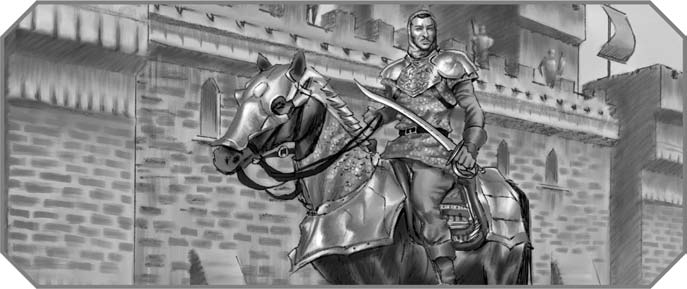
|
Armadura |
RD |
Custo |
Peso |
|
Laudel |
1 |
$ 150 |
6 |
|
Loriga de Couro |
2 |
$ 340 |
9,75 |
|
Loriga de Escamas |
3 |
$ 610 |
24,5 |
|
Cota de Malha |
4 |
$ 645 |
29 |
|
Armadura Lamelar de Aço |
5 |
$ 1.360 |
32 |
|
Armadura de Placas |
6 |
$ 4.040 |
49,25 |
|
Colete de Campanha |
7 |
$ 500 |
10 |
|
Colete Balístico |
8 |
$ 400 |
1 |
|
Colete Tático Militar |
12 |
$ 900 |
4,5 |
Escudos
Os escudos são equipamentos muito valiosos em combates em cenários de baixo nível tecnológico, mas quase inúteis contra armas de fogo.
Normalmente, se usa o escudo amarrado a um dos braços. A mão que segura o escudo não pode empunhar uma arma (o que impede que o personagem use armas de duas mãos), mas ele pode carregar um item.
O escudo ajuda em todos as jogadas de defesa ativa (Bloqueio, Esquiva e Aparar) sem exigir nenhum esforço adicional. O personagem também pode usar um escudo para bloquear ativamente um ataque; v. o parágrafo Bloqueio (pág. 28).
As estatísticas que veremos a seguir se aplicam aos escudos:
Escudo : o tipo de escudo
BD : Bônus de Defesa. É o bônus que o escudo dá em todas as jogadas de defesa ativa, (v. a seção Defesa , pág. 28) contra ataques frontais ou que venham do lado onde se encontra o escudo, mesmo que o personagem não tenha perícia para utilizá-lo.
Custo : o preço do escudo em $.
Peso : o peso do escudo em quilogramas.
|
Escudo |
BD |
Custo |
Peso |
|
Escudo Pequeno |
1 |
$ 40 |
4 |
|
Escudo Médio |
2 |
$ 60 |
7,5 |
|
Escudo Grande |
3 |
$ 90 |
12,5 |
Armas
Muitas vezes os aventureiros carregam algum tipo de arma seja ela o montante de um cavaleiro, o revólver calibre .38 de cano curto de um detetive, ou a pistola de raios de um pirata espacial.
Primeiro decida por que motivo o personagem carrega uma arma. Para autodefesa, intimidação (“Pare ou eu atiro!”), combate ou caça? Reveja também as perícias e a Força do personagem. As armas de alta tecnologia (por exemplo, as armas de fogo) funcionam muito bem com qualquer pessoa que saiba manuseá-las. Já as armas de baixa tecnologia — como os porretes, as espadas etc. — causam muito mais dano se forem empunhadas por uma pessoa mais forte. Por último, dê uma olhada nas estatísticas da arma. A quantidade de dano causado pela arma é a medida básica de sua eficiência, mas existem outros fatores como alcance, cadência de tiro e precisão que precisam ser levados em conta.
A Tabela de armas contém as informações descritas a seguir. Uma determinada coluna da tabela só terá valor se ele for pertinente para o tipo de arma a que a tabela se refere. Em todos os casos, “—“ significa que aquela estatística não se aplica àquela arma, e “var.” significa que aquele valor é variável.
É o nível tecnológico no qual a arma foi disponibilizada pela primeira vez. O personagem só pode comprar armas de NT menor ou igual ao NT da campanha, a não ser que ele tenha a característica NT Alto (v. pág. 7).
O tipo da arma em questão; ex, “espada curta” ou “fuzil de assalto”. Cada linha representa uma ampla variedade de tipos específicos. No caso de armas de fogo, essa especificação inclui o diâmetro do projétil; ou seja o “calibre,” em milímetros (exemplo, 9 mm) ou em frações de polegada (exemplo .50), como se faz mais comumente com aquela arma.
No caso de armas de mão e armas de projétil impulsionadas pela força muscular, como espadas e arcos, o dano causado baseia-se na ST e é expresso como um modificador adicionado ao Golpe De Ponta (GDP) ou ao golpe em Balanço (BAL) básico de seu usuário, como descrito na Tabela de Dano (pág. 6). Exemplo: uma lança causa “GDP +2” pontos de dano, portanto, se tiver ST 11, o que lhe dará um dano básico de GDP igual a 1d – 1, o personagem causará 1d + 1 pontos de dano com a lança. As armas em balanço usam o princípio da alavanca, por isso, causam mais dano.
Para armas de fogo e algumas armas de mão auto-propelidas, o dano causado é fornecido na forma de um número fixo de dados mais modificadores; exemplo, o dano causado por uma pistola automática 9 mm é indicado como “2d + 2”, o que significa que qualquer personagem que a utilizar jogará 2d e somará 2 ao resultado para ver quanto dano o ataque causou.
Divisor de Blindagem : um número entre parênteses logo após o dano — ex. (2) — é um divisor de blindagem . Divida a RD da blindagem do alvo, ou de outras fontes que ele porventura possa estar usando, por este numero antes de subtrair o valor da RD do dano que o personagem causar (ou de adicioná-la ao número-alvo do teste de HT do alvo para resistir ao ferimento). Exemplo: um ataque com um divisor igual a (2) diminuiria a RD pela metade.
Tipo de Dano : uma abreviação que indica o tipo , de ferimento ou efeito causado pelo ataque.
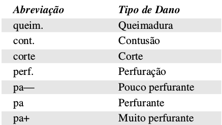|
Abreviação |
Tipo de Dano |
|---|---|
|
Queim. |
Queimadura |
|
Cont. |
Contusão |
|
corte |
Corte |
|
Perf. |
Perfuração |
|
pa-- |
Pouco perfurante |
|
pa |
Perfurante |
|
pa+ |
Muito perfurante |
A vítima perde um número de PVs igual ao dano que atravessa sua RD. Divida esse dano à metade no caso de ataques pouco perfurantes; aumente-o em 50% nos casos de corte e muito perfurantes; e dobre este valor no caso de perfuração.
Somente para armas de longo alcance . Some o valor da precisão ao nível de habilidade do personagem se ele tiver realizado uma manobra Apontar no turno anterior ao ataque. Se a arma tiver uma mira embutida, o bônus relativo a isto aparecerá como um modificador separado, ao lado da Prec. básica da arma; ex. “7 + 2”.
Apenas para armas de longo alcance . Se a arma tem apenas um número para o alcance, ele será o Alcance Máximo (Max) em metros dentro da qual o personagem pode atacar um alvo. Se houver dois números separados por uma barra, o primeiro é Meio Dano (1/2D) e o segundo será o Max. Ataques contra alvos que se encontram a uma distância maior do que 1/2D causam apenas metade do dano.
Normalmente, os parâmetros 1/2D e Max das armas impulsionadas pela força muscular são indicados como múltiplos da ST do personagem que as empunha, ao invés de uma distância fixa. Exemplo: “x10/x15” significa que a 1/2D é igual a 10 x ST e Max é 15 x ST, portanto, um personagem com ST 10 teria 1/2D igual a 100 e Max igual a 150. No caso de armas do tipo besta, use a ST da arma nesta fórmula.
Apenas para armas de longo alcance . O número máximo de disparos que um atirador comum consegue fazer em um turno de um segundo. Normalmente, as armas podem disparar menos tiros (até um mínimo de um) se o personagem quiser, mas é conveniente lembrar-se de alguns detalhes:
Apenas para armas de longo alcance . É o número de disparos que uma arma pode fazer antes de o personagem ter de recarregá-la. “A” significa que a arma é de arremesso . Para “recarregá-la” o personagem terá de recolhê-la ou preparar uma nova!
Um número entre parênteses ao lado do parâmetro Disparos indica o número de manobras Preparar necessárias para recarregar toda a munição da arma (ex, trocando o pente de uma arma) — ou, no caso de uma arma de arremesso, o tempo necessário para preparar outra arma. Um “i” ao lado significa que o personagem tem de carregar esses tiros individualmente: o tempo indicado na tabela é para cada tiro ao invés de para toda a munição.
Uma besta exige o tempo indicado para ser preparada (4 turnos), se a ST dela for menor que a do personagem (v. o parágrafo Bestas e ST, mais adiante). Esse tempo deve ser multiplicado por dois se a ST da besta for 1 ou 2 pontos maior que a do personagem. Se a ST da besta for 3 ou 4 pontos maior que a do personagem, ele precisará de um “pé-de-cabra” para engatilhá-la; se isso for necessário, a manobra demorará 20 turnos e exigirá que o personagem fique de pé durante o processo. Se a ST da arma for 5 ou mais pontos maior que a do personagem, ele não conseguirá de forma alguma carregá-la.
É o preço em $ de um modelo novo daquela arma. No caso de espadas e facas, esse preço incluirá também a bainha ou estojo. Para armas de fogo, inclui um kit com os instrumentos mínimos necessários para limpá-la.
O peso da arma em quilogramas. Para as armas de projétil com a característica Tiros 2+, o valor indicado será o peso dela depois de carregada . O peso de uma carga completa de munição aparece depois da barra.
A força mínima necessária para se usar a arma da maneira apropriada. Se tentar usar uma arma que exige mais ST do que ele tem, o personagem estará sujeito a um redutor igual a –1 na perícia com a arma para cada ponto de ST que lhe falta e perderá um PF a mais no final de qualquer luta que dure o suficiente para fatigá-lo.
Para uma arma de mão, a ST efetiva do personagem para propósitos de dano não poderá exceder o triplo da ST mínima da arma. Exemplo: um facão tem uma ST mínima 6, portanto a “ST máxima” para dano é 18. Se a ST do personagem for 19+, você vai calcular o dano causado pelo personagem como se ele tivesse ST 18.
Armas naturais (exemplo, um soco ou chute) não têm ST mínima nem máxima.
“†” Significa que a arma requer duas mãos para ser utilizada. Se a ST do personagem for maior ou igual a uma vez e meia a ST indicada (arredondando para cima ), ele poderá empunhar uma arma desta com apenas uma das mãos, mas ela ficará despreparada após o seu ataque. Se a ST do personagem for maior ou igual ao dobro da ST indicada, ele poderá utilizá-la com uma das mãos apenas sem estar sujeito a nenhum redutor de preparação. Mas, se a arma precisar de uma mão para segurá-la e outra para operar uma parte móvel dela, como um arco ou um fuzil de repetição, sempre serão necessárias as duas mãos, a despeito da ST do usuário.
“‡” Significa que a arma exige duas mãos e fica despreparada depois de ser usada para atacar, a menos que a ST do personagem seja pelo menos uma vez e meia a ST indicada (arredondada para cima ). Para poder usá-la com uma das mãos sem que ela fique despreparada, o personagem precisa que sua ST seja pelo menos três vezes maior que a ST indicada.
“B” Indica que se trata de uma arma de fogo com um bipé embutido. Quando o personagem estiver disparando deitado de bruços e usando um bipé, trate a arma como se ela estivesse apoiada e diminua as exigências de ST para 2/3 do valor indicado (arredondado para cima ); exemplo, ST 13 torna-se ST 9.
Bestas e ST : bestas e arcos têm seu próprio valor de ST. Use este valor ao invés da ST do personagem para determinar o alcance e o dano causado. A ST de uma arma desse tipo tem de ser especificada quando ela estiver sendo comprada. Um personagem sempre pode usar um arco cuja ST seja menor que a dele. Se usar um arco com uma ST maior, ele causará mais dano, entretanto demorará mais para armá-lo (v. o parágrafo Disparos , na págima anterior).
Os números relacionados nesta tabela referem-se às notas de rodapé aplicáveis (se houver alguma) ao final da tabela.
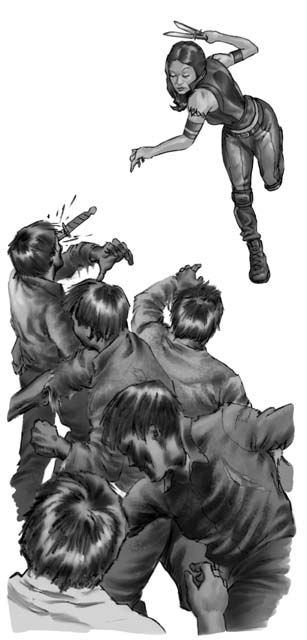
As
armas de mão são agrupadas de acordo com as perícias necessárias
para utilizá-las. Os nomes das perícias aparecem em letras
maiúsculas, com seu valor pré-definido entre parênteses: exemplo,
“MACHADO/MAÇA (DX – 5)”. Se for possível aplicar mais de um
golpe com aquela arma, cada método terá sua própria linha. Se for
possível usar várias perícias com uma mesma arma, a arma aparecerá
relacionada em cada uma dessas perícias. Exemplo: ambas as perícias
Bastão e Espada de Duas Mãos permitem que você use um Cajado — e
descrevem como você pode usá-lo para dar um golpe em balanço ou um
golpe de ponta.
|
NT |
Arma |
Dano |
Custo |
Peso |
ST |
Notas |
|---|---|---|---|---|---|---|
|
MACHADO/MAÇA (DX-5) |
||||||
|
0 |
Machado |
Bal + 2 corte |
$ 50 |
2 |
11 |
|
|
2 |
Maça |
Bal + 3 corte |
$ 50 |
2,5 |
12 |
|
|
BRIGA, CARATÊ ou DX |
||||||
|
- |
Soco |
GDP -1 cont. |
- |
- |
- |
|
|
1 |
Soqueira |
GDP cont. |
$ 10 |
0.12 |
- |
|
|
ESPADAS DE LÂMINA LARGA(DX -5) |
||||||
|
2 |
Montante |
BAL + 1 corte ou GDP+1 cont. |
$ 500 - |
1,5 - |
10 10 |
|
|
2 |
Montante em GDP |
GDP + 1 corte ou GDP + 2 perf |
$ 600 - |
1,5 - |
10 10 |
|
|
FACA (DX-4) |
||||||
|
0 |
Facão ou |
BAL – 2 corte ou GDP perf |
$ 40 - |
0,5 - |
6 6 |
[1] |
|
ARMAS DE HASTE (DX-5) |
||||||
|
3 |
Acha d'armas ou |
BAL + 4 corte ou BAL + 4 cont. |
$ 120 - |
5 - |
12‡ 12‡ |
|
|
FLORETE (DX -5) |
||||||
|
4 |
Florete |
GDP + 1 perf |
$ 500 |
1,37 |
9 |
|
|
ESPADA CURTA (DX-5) |
||||||
|
2 |
Gládio |
BAL corte ou GDP perf |
$ 400 - |
1 - |
8 8 |
|
|
LANÇA (DX -5) |
||||||
|
0 |
Lança duas mãos |
GDP + 2 perf GDP + 3 perf |
$ 40 - |
2 - |
9 9† |
[1] |
|
BASTÃO (DX -5) |
||||||
|
0 |
Cajado |
BAL + 2 cont. ou GDP + 2 cont. |
$ 10 - |
2 - |
7† 7† |
|
|
ESPADA DE DUAS MÃOS (DX -5) |
||||||
|
0 |
Cajado |
BAL + 2 cont. ou GDP + 1 cont. |
$ 10 - |
2 - |
9† 9† |
|
|
3 |
Espadão em GDP |
BAL + 3 corte ou GDP + 3 perf |
$ 900 - |
3,5 - |
12† 12† |
|
[1] Pode ser arremessada. V. a tabela Armas de Longo Alcance Impulsionadas Pela Força Muscular , a seguir.
As armas de longo alcance impulsionadas pela força muscular são armas arremessáveis (machados, lanças etc.), e armas de projétil de baixo nível tecnológico como arcos e fundas. As armas estão agrupadas sob o nome da perícia necessária para usá-las, junto com os NHs pré-definidos da perícia. Algumas armas de arremesso aparecem também na Tabela de Armas de Mão ; use as estatísticas desta tabela quando elas forem arremessadas.

|
NT |
Arma |
Dano |
Prec |
Alcance |
Peso |
CdT |
Tiro |
Custo |
ST |
Notas |
|---|---|---|---|---|---|---|---|---|---|---|
|
ARCO (DX – 5) |
||||||||||
|
0 |
Arco Longo |
GDP+ 2 perf |
3 |
x 15 / x 20 |
1,5/0,05 |
1 |
1 (2) |
$ 200 |
11† |
[1] |
|
0 |
Arco Curto |
GDP perf |
1 |
x 10 / x 15 |
1/0,05 |
1 |
1 (2) |
$ 50 |
7† |
[1] |
|
BESTA (DX – 4) |
||||||||||
|
2 |
Besta |
GDP + 4 perf |
4 |
X 20 / x 25 |
3/0.03 |
1 |
1 (4) |
$ 150 |
7† |
[1] |
|
3 |
“Pé de Cabra” |
- |
- |
- |
1 |
- |
(20) |
$ 50 |
7† |
[2] |
|
ARMAS DE ARREMESSO (MACHADO/MAÇA) (DX – 4) |
||||||||||
|
0 |
Machado de Arremesso |
BAL + 2 corte |
2 |
x 1 / x 1,5 |
2 |
1 |
T(1) |
$ 60 |
11 |
|
|
ARMAS DE ARREMESSO (FACA) (DX – 4 |
||||||||||
|
0 |
Facão |
GDP perf |
0 |
x 0.8 / x 1,5 |
0,5 |
1 |
T(1) |
$ 40 |
6 |
|
|
ARMAS DE ARREMESSO (LANÇA) (DX – 4) |
||||||||||
|
0 |
Lança |
GDP + 3 perf |
2 |
x 1 / x 1,5 |
2 |
1 |
T(1) |
$ 40 |
9 |
|
[1] Uma flecha para um arco ou um quatrelo para uma besta custa $ 2.
[2] A alavanca para recarregar uma besta de alta ST. O personagem pode recarregar uma arma cuja ST é até 4 pontos maior do que a sua com 20 manobras Preparar de um segundo.
Uma “arma de fogo” é qualquer pistola, míssil, ou arma de feixe que não exige nenhum poder muscular para funcionar: as armas de fogo começam a estar disponíveis em NT 4 e tornam-se lugar comum em NT 5+. As armas de feixe aparecem no final de NT 8 (na maior parte das vezes, apenas para veículos) e podem se tornar comuns em NT 9, e onipresentes em NT 10+.
|
NT |
Arma |
Dano |
Prec |
Alcance |
Peso |
Cdt |
Tiro |
ST |
Custo |
Notas |
|---|---|---|---|---|---|---|---|---|---|---|
|
ARMAS DE FOGO (PISTOLA) (DX – 4) |
||||||||||
|
5 |
Derringer, .41 |
1d pa+ |
1 |
80/650 |
0,25/0,05 |
1 |
2 (3i) |
9 |
$ 100 |
|
|
6 |
Pistola Automática, 9mm |
2d + 2 pa |
2 |
150/1.850 |
1,2/0,2 |
3 |
8 +1 (3) |
9 |
$ 350 |
|
|
7 |
Revólver, .357 |
3d – 1 pa |
2 |
185/2.000 |
1,5/0,10 |
3 |
6 (3i) |
10 |
$ 500 |
|
|
8 |
Pistola Automática, .44M |
3d pa+ |
2 |
230/2.500 |
2,25/0,3 |
3 |
9 + 1 (3) |
12 |
$ 750 |
|
|
NT |
Arma |
Dano |
Prec |
Alcance |
Peso |
CdT |
Tiro |
ST |
Custo |
|---|---|---|---|---|---|---|---|---|---|
|
ARMAS DE FOGO (FUZIL) (DX – 4) |
|||||||||
|
5 |
Carabina ação por alavanca 3.0 |
5d pa |
4 |
450/3.000 |
3,5/0,15 |
1 |
6 + 1 (3i) |
10† |
$ 300 |
|
6 |
Fuzil de carregamento automático, 7.62 mm |
7d pa |
5 |
1.000/4.200 |
5/0,25 |
3 |
8 (3) |
10† |
$ 600 |
|
8 |
Fuzil de Precisão, .338 |
9d + 1 pa |
6 + 3 |
1.500/5.500 |
8.75/0.4 |
1 |
4 + 1 (3) |
11B† |
$ 5.600 |
|
ARMAS DE FOGO (Espingarda) (DX – 4) |
|||||||||
|
6 |
Espingarda ação de Trombone, 12G |
1d + 1 pa— |
3 |
50/125 |
50/125 |
4/0,35 |
2x9 |
5 (3i) |
$ 240 |
É Hora de Jogar
Nós já vimos as regras para criar e equipar os personagens. Agora vamos explicar como as coisas acontecem. O GM descreve uma situação e pergunta a cada um dos jogadores o que o personagem dele fará. Os jogadores respondem, e o GM diz a eles o que acontece em seguida. Em algum ponto no meio da história, o GM não terá certeza se aquele personagem é automaticamente capaz de fazer o que seu jogador descreveu como sua ação... “Você está carregando o quê enquanto tenta pular o abismo?”... é aí que os dados entram em cena.
“Carga” é uma relação entre o peso total que o personagem está carregando e sua ST . Os efeitos da carga são divididos em cinco “níveis de carga”. Todos os níveis exceto o primeiro diminuirão o Deslocamento do personagem até uma fração de seu Deslocamento Básico e imporão um redutor sobre a Esquiva, como veremos a seguir:
Nenhuma Carga (0) : peso menor ou igual à Carga Básica (v. pág. 5). Deslocamento = Deslocamento Básico. Esquiva sem redutor.
Carga Leve (1) : Peso até 2 x CB. Deslocamento = Deslocamento Básico x 0,8. Esquiva – 1.
Carga Média (2): Peso até 3 x CB . Deslocamento = Deslocamento Básico x 0,6. Esquiva – 2.
Carga Pesada (3): Peso até 6 x CB. Deslocamento = Deslocamento Básico x 0,4. Esquiva – 3.
Carga Muito Pesada (4) : Peso 10 x CB. Deslocamento = Deslocamento Básico x 0,2. Esquiva – 4.
Ignore as frações. A carga nunca pode reduzir o movimento ou a esquiva a um valor menor do que um.
Note que esses níveis vão de zero a quatro. Quando uma regra diz que você deve adicionar ou subtrair o nível de carga do personagem ao resultado de uma jogada de dados, este é o número que deve ser usado. Exemplo: a carga impõe um redutor às perícias Escalada, Furtividade e Natação.
Proezas Físicas
Veremos a seguir as regras para tarefas físicas comuns de importância para os aventureiros. No caso de tarefas não analisadas nesta seção, faça testes de DX se forem tarefas que exigem precisão e HT no caso de proezas que exigem resistência. Para determinar qual o peso deslocado ou o trabalho realizado, use a Carga Básica. A velocidade de deslocamento deveria ser normalmente proporcional ao Deslocamento Básico.
Para escalar qualquer coisa mais difícil que uma escada faça um teste de Escalada (pág. 14). O seu valor pré-definido é DX – 5. Os modificadores deste teste dependem da dificuldade da escalada (v. abaixo). Em todos os casos, subtraia o nível de carga do personagem do NH dele. A velocidade de combate indicada na tabela a seguir custa um PF para cada teste de Escalada.
Faça um teste para começar a escalada e outro a cada cinco minutos. Uma falha significa que o personagem caiu (v. Queda , pág. 32). Se estiver preso a uma corda, o personagem cairá uma distância igual à extensão da corda, a não ser que tenha ocorrido uma falha crítica.
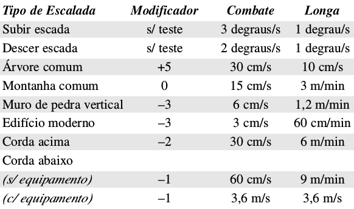|
Tipo de Escalada |
Modificador |
Combate |
Longa |
|---|---|---|---|
|
Subir escada |
S/ teste |
3 degraus/s |
1 degrau/s |
|
Descer escada |
S/ teste |
2 degraus/s |
1 degrau/s |
|
Árvore comum |
+5 |
30 cm/s |
10 cm/s |
|
Montanha comum |
0 |
15 cm/s |
3 m/min |
|
Muro de pedra vertical |
-3 |
6 cm/s |
1,2 m/min |
|
Edifícil moderno |
-3 |
3 cm/s |
60 cm/min |
|
Corda acima |
-2 |
30 cm/s |
6 m/min |
|
Corda abaixo |
|
|
|
|
(s/ equipamento) |
-1 |
60 cm/s |
9 m/min |
|
(c/ equipamento) |
-1 |
3,6 m/s |
3,6 m/s |
Manter uma velocidade constante numa caminhada a pé na mata depende do Deslocamento. Comece com o Deslocamento Básico e subtraia dele os efeitos da carga (v. Carga e Movimento , acima), lesão (v. Lesões: Pontos de Vida Perdidos , pág. 29), e da exaustão do personagem (v. Pontos de Fadiga Perdidos , pág. 31) da forma apropriada. A distância em quilômetros que um personagem consegue caminhar num dia em condições ideais é 15 x Deslocamento.
Um sucesso no teste de Caminhada (pág. 14) aumenta em 20% a distância percorrida. Faça o teste diariamente. Um grupo liderado por alguém com NH maior ou igual a 12 em Liderança pode fazer um único teste de Caminhada média do grupo. (Os valores pré-definidos de Caminhada são HT – 5 para aqueles que não a estudaram.) Um sucesso permite que todo o grupo marche 20% a mais; uma falha significa que todo o grupo deve ignorar o bônus.
Depois que você tiver descoberto a quilometragem diária ideal, modifique-a de acordo com as seguintes circunstâncias:
Muito ruim : Neve profunda, floresta densa, selva, montanhas, areia fofa ou pântano. x 0,2.
Ruim : Terreno acidentado (incluindo riachos), florestas ou colinas íngremes. X 0,5.
Médio : Floresta esparsa ou colinas ondulantes. x 1.
Bom : Deserto de terra compactada ou planícies niveladas. x 1,25.
Condições climáticas adversas — como chuva, neve ou granizo — reduzem esses valores ainda mais.
Quando o personagem quiser saltar sobre alguma coisa muito menor que ele, o GM deve dizer, “Certo, você pulou,” e continuar o jogo. Estes saltos são automaticamente bem sucedidos. Mas quando um obstáculo parece realmente significativo, ou se o GM colocar o salto ali como um perigo deliberado, use as seguintes regras:
A distância saltada é determinada pelo Deslocamento Básico do personagem como descrito a seguir:
Salto em Altura : (6 x Deslocamento Básico) – 25 cm. Por exemplo, um Deslocamento Básico igual a 6 permite que você salte 52 cm para o alto. Se o salto for antecedido de uma corrida adicione o número de metros percorridos pelo personagem ao Deslocamento Básico dele. A altura máxima saltada com corrida é o dobro da altura saltada sem corrida.
Salto em Distância : (2/3 x Deslocamento Básico) – 1 metro. Exemplo: um Deslocamento Básico igual a 6 permite que o personagem salte até 3 metros de seu ponto de partida, se estiver parado. No caso de um salto com corrida , adicione o número de metros percorridos pelo personagem ao Deslocamento Básico e use a fórmula anterior. A distância máxima transposta com um salto em distância com corrida é o dobro do salto em distância parado.
A Carga Básica governa o peso que o personagem é capaz de erguer e mover. O GM pode permitir que vários personagens somem a sua CB (mas não sua ST) sempre que isso parecer razoável; ex., para carregar uma maca ou puxar uma carroça.
Erguer com Uma Mão : 2 x CB (demora dois segundos).
Erguer com Duas Mãos : 8 x CB (demora quatro segundos).
Empurrar e Deslocar : 12 x CB. Dobre este valor se o personagem puder tomar impulso. O GM pode fazer concessões no caso de objetos precariamente equilibrados fazendo com que seja mais fácil empurrá-los.
Carregar nas Costas : 15 x CB. O personagem é capaz de carregar nas costas muito mais peso do que ele consegue erguer sozinho... mas, para cada segundo que a carga do personagem for maior do que 10 x CB (isto é, Carga Muito Pesada), ele perde 1 PF.
Deslocar Ligeiramente : Dependendo do apoio e da maneira como está escorado, o personagem consegue deslocar ou balançar ligeiramente um peso equivalente a 50 x CB.
A velocidade de corrida, ou Deslocamento terrestre, do personagem é igual ao valor do seu Deslocamento Básico modificado por sua Carga — v. Carga e Movimento (pág. 22). Uma carreira é uma corrida a toda velocidade. Ela é muito rápida, mas também cansativa (v. Custos em Fadiga , pág. 31). O personagem pode sair numa carreira em qualquer situação na qual ele pode correr para a frente durante dois ou mais segundos. Aumente em 20% o Deslocamento do personagem passado o primeiro segundo . Exemplo: com um Deslocamento igual a 7, o personagem pode sair numa carreira, alcançando a velocidade de 8,4 m/s depois de correr um segundo a 7 m/s.
Se tiver de correr uma longa distância, o personagem precisará criar um ritmo para evitar a exaustão. A média conseguida nas corridas ritmadas é igual à metade da velocidade da carreira que foi calculada anteriormente.
Faça um teste de HT a cada 15 segundos de carreira ou um minuto de corrida ritmada. No caso de uma falha, o personagem perde 1 PF. Quando o número de pontos de Fadiga do personagem tiver se reduzido a 1/3 ou menos da quantidade original, diminua à metade seu Deslocamento para qualquer tipo de corrida; v. a seção Fadiga (pág. 31).
Faça um teste de Natação (pág. 17) toda vez que o personagem entrar na água e ela chegar até a altura de sua cabeça, e repita o teste a cada cinco minutos. Subtraia o dobro do seu nível de Carga do NH; adicione 3 se o personagem tiver entrado na água voluntariamente. Se falhar no teste, o personagem perde 1 PF e tem de fazer um novo teste depois de 5 segundos, e assim sucessivamente até o número de PFs chegar a 0 e ele se afogar, ser resgatado ou ser bem sucedido no teste. Se se recuperar, o personagem terá de fazer o teste novamente depois de 1 minuto. Se for bem sucedido, volte a fazer o teste a cada 5 minutos.
Habitantes da superfície, como os seres humanos, têm um Deslocamento na água igual ao seu Deslocamento Básico/5 (arredondado para baixo), com um mínimo de 1 metro/segundo. Depois de cada minuto nadando à velocidade máxima, o jogador tem de fazer um teste contra o que for maior , a HT ou o NH em Natação do personagem. Se falhar, ele perde 1 PF. Quando o número de PFs do personagem for 1/3 ou menos da quantidade original, diminua pela metade o seu Deslocamento na água; v. a seção Fadiga (pág. 31).
O personagem pode arremessar qualquer coisa que ele seja capaz de pegar — isto é, qualquer coisa cujo peso seja menor ou igual a 8 x CB. Se o objeto que o personagem quer arremessar não estiver em suas mãos, ele terá de realizar uma ou mais manobras Preparar para pegá-lo. Para mais detalhes, veja o parágrafo Levantamento e Movimentação de Objetos .
Arremessar um objeto durante um combate — seja como um ataque ou não — requer uma manobra Ataque. O personagem pode arremessar objetos que pesam até 2 x CB usando uma das mãos; objetos mais pesados exigem duas mãos para serem arremessados. Faça um teste de DX – 3, se ele quiser acertar um alvo especifico, ou de DX, se ele for apenas jogar o objeto em uma dada direção. Aplique os modificadores usuais devidos ao tamanho, velocidade e distância do alvo.
Para evitar que o jogo fique muito lento por causa do excesso de cálculo, o GM deve permitir qualquer arremesso que pareça razoável... mas, quando precisar saber a distância exata que o personagem consegue arremessar um objeto, use os seguintes procedimentos:
Divida o peso do objeto em quilos pela Carga Básica do personagem para conseguir a “Fração de Peso”.
Encontre a fração de peso na coluna Fração de Peso na tabela anterior. Se ela estiver entre dois valores, utilize o valor mais alto .
Encontre o “modificador de distância” na coluna de mesmo nome.
Multiplique a ST do personagem pelo modificador de distância para saber a distância em metros que ele consegue arremessar o objeto.
Em qualquer questão relacionada a regras, a palavra do GM é lei . O GM decide quais regras opcionais ele usará e resolve qualquer questão especifica que aparecer. Um bom GM discute com seus jogadores as questões importantes antes de decidir — e um bom jogador aceita as decisões do GM.
O GM deve conhecer as regras a fundo. Quando as regras não cobrem uma situação — ou quando é necessário tomar uma decisão com relação ao “mundo real” — o GM pode usar várias técnicas:
Testes de Habilidade : Um “teste de habilidade” é um teste que avalia um dos atributos, perícias etc. do personagem — v. pág. 2. Use um teste de habilidade toda vez que surgir uma questão com relação à capacidade de algum personagem realizar uma coisa específica.
Jogadas Aleatórias : Uma jogada aleatória é muitas vezes a melhor solução para questões do tipo “as chaves estão no carro?” ou “algum dos soldados têm um cavalo da mesma cor que o meu?” O GM decide quais são as chances e joga os dados.
Decidir Arbitrariamente : O mestre nem sequer usa os dados. Existe apenas “uma” resposta que se encaixa na trama da aventura — nesse caso, a resposta poderia ser simplesmente: “para sua sorte, a granada ricocheteou e rolou escada abaixo. Ninguém se feriu, mas agora os guardas foram alertados!”
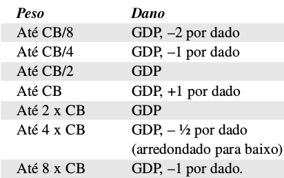
Objetos
arremessados causam dano por GDP de acordo com a ST do personagem (v.
Tabela de Dano , pág. 6), modificada pelo peso do objeto, como
mostrado na tabela a seguir. O dano normalmente é por contusão. Um
objeto frágil (ou um personagem que tenha sido arremessado) sofre a
mesma quantidade de dano que causa; faça uma avaliação de dano
separada para o objeto e outra para o alvo.
Mentais
Entre os “testes dos sentidos” incluem-se os testes de Visão, Audição e os testes de Olfato/Paladar. Para perceber alguma coisa utilizando um sentido especifico o personagem tem de ser bem sucedido em um teste contra o valor de sua Percepção.
Testes de Compreensão : um sucesso em um teste dos Sentidos significa que o personagem percebeu algo. Com freqüência isto é suficiente, mas, em alguns casos, o GM pode pedir um segundo teste para ver se o personagem compreende o que sentiu; ex, compreender que aquele “pio de coruja” que ele ouviu é na verdade o sinal de um guerreiro indígena, ou que o odor suave que ele sentiu pertence às flores de uma planta carnívora devoradora de homens. Esse teste é feito contra IQ no caso de detalhes que qualquer pessoa poderia perceber ou contra uma perícia apropriada se seu significado puder passar despercebido para qualquer um que não seja um especialista. Noção do Perigo : se o personagem tiver a vantagem
Noção do Perigo (pág. 9) e falhar num teste dos Sentidos ou de Compreensão para ver se notava ou compreendia algo perigoso , o GM deverá fazer um outro teste de Percepção em segredo para ele. No caso de um sucesso, de alguma forma ele acaba percebendo o perigo!
Faça um teste de Visão toda vez que for importante que o personagem veja algo.
Quando o personagem tentar ver algo que foi deliberadamente escondido, o GM poderá tratar este teste como uma Disputa Rápida contra a perícia que foi utilizada para esconder o objeto (seja ela Camuflagem, Ocultação etc.), e permitir — ou exigir — neste teste uma perícia como Observação ou Detecção no lugar da Percepção.
Faça um teste de Audição toda vez que for importante que o personagem ouça um som. O GM irá muitas vezes exigir um teste separado de IQ para ver ser ele compreende um diálogo, especialmente se for em uma língua estrangeira. Quando o personagem tentar ouvir alguém que está tentando se mover silenciosamente, o GM pode tratar o teste como uma Disputa Rápida contra a perícia Furtividade. Se o personagem está ativamente atento a este tipo de atividade, o GM pode permitir que seja feito um teste de Observação no lugar do teste de Percepção.
O Olfato e o Paladar são duas manifestações do mesmo sentido. Faça um teste de Paladar para perceber um sabor e um de Olfato para perceber um cheiro.
Um “Teste de Influência” é uma tentativa deliberada de garantir uma Reação positiva da parte de um NPC. Um PC com a “perícia de Influenciar” apropriada sempre pode optar por fazer um teste de Influência no lugar de um teste normal de Reação se as circunstâncias forem apropriadas (a critério do GM). Para mais detalhes sobre as Reações dos NPCs, veja Testes de Reação na pág. 3.
Decida qual perícia de influenciar o personagem estará usando: Diplomacia, Lábia, Intimidação, Trato Social, Sex Appeal ou Manha. Escolha com cuidado! Em determinadas situações, o GM pode permitir que outras perícias funcionem como uma perícia de Influenciar (ex., a perícia Jurisprudência, quando o personagem estiver lidando com um juiz). Depois faça uma Disputa Rápida entre a perícia de influenciar do personagem e a Vontade do alvo.
Se vencer , o personagem conseguirá uma “Boa” Reação do NPC — ou “Muito Boa” se ele tiver usado Sex Appeal. Qualquer outro resultado deixa o NPC ressentido por causa de sua tentativa desajeitada de manipulá-lo. Isso resultará em uma Reação “Ruim” — ou “Muito Ruim” se o personagem tentou intimidá-lo. Exceção : Se o personagem utilizar Diplomacia, o GM fará também um teste de Reação normal e usará o melhor resultado entre os dois testes. Portanto, a Diplomacia é relativamente segura...
Quando o personagem estiver diante de uma situação estressante ou de uma distração, o GM pode exigir dele um teste de Vontade para ver se ele consegue permanecer concentrado. No caso de um sucesso, o personagem pode agir normalmente. Se falhar, ele sucumbe ao medo, cede à pressão, é de alguma forma distraído de sua tarefa, etc.
Uma Verificação de Pânico é um teste de Vontade feito para resistir ao medo . As Verificações podem acontecer tão freqüentemente ou raramente quanto o GM quiser. Em uma campanha de horror, na qual pessoas comuns enfrentam Coisas chocantemente horrorosas, as Verificações de Pânico serão muito comuns! Com algumas pequenas adaptações, o GM pode usar essas regras para situações que envolvam confusão, estupefação, etc. da mesma maneira que ele as usa para o medo.
Como regra geral, coisas assustadoras “normais” não exigem uma Verificação de Pânico. As Verificações de Pânico são provocadas por eventos tão estranhos e terríveis que podem atordoar ou até mesmo traumatizar uma pessoa permanentemente.
Uma Verificação de Pânico está sujeita a vários modificadores, incluindo aqueles derivados de Vantagens ou Desvantagens apropriadas e às circunstâncias que desencadearam o teste.
Uma falha em uma Verificação de Pânico faz o personagem ficar atordoado (v. pág. 30) durante um número de segundos igual a 2d mais a margem pela qual a Verificação falhou. No caso de uma falha crítica, a vítima desmaia e não consegue ser acordada durante 1d mais margem pela qual o teste falhou minutos . Só esperamos que o que quer que tenha aterrorizado tanto o personagem não esteja com fome…
Combate
O GM decide quando deve começar a usar as regras de combate. Isso geralmente ocorre quando um combate parece inevitável e os combatentes começam a manobrar em busca de uma vantagem tática. O GM também pode usar essas regras para resolver situações de “ação” como perseguições e torneios.
O combate é realizado segundo a segundo. Cada personagem ativamente envolvido em um combate tem uma oportunidade de agir a cada segundo, que será denominada seu “turno”. Depois que todos os personagens envolvidos tiverem terminado seu turno, um segundo terá se passado. O GM não deve se sentir preso à escala de tempo de um segundo. Ela é simplesmente uma forma de dividir o combate em porções mais fáceis de serem controladas! Ele deve se sentir à vontade para ignorar essa medida de tempo de combate sempre que isso for apropriado do ponto de vista dramático, e retornar à seqüência habitual de tempo quando as ações não-combativas derem lugar à luta.
A “seqüência de turno” é a ordem na qual os personagens ativos realizam as ações em seus turnos. Ela é determinada no início da luta e não muda durante todo o combate. O combatente com Velocidade Básica mais alta é o primeiro a realizar seu turno, depois é a vez daquele que tem a segunda Velocidade Básica, e assim por diante, seguindo em ordem decrescente de Velocidade Básica. Depois que todos os personagens ativos tiverem realizado seus turnos, um segundo se passou e outro segundo começa.
Velocidades Iguais : se vários NPCs do mesmo lado tiverem a mesma Velocidade Básica o GM simplesmente decide quem age primeiro — isso não faz muita diferença. Se houver PCs envolvidos no empate, agirá primeiro aquele que tiver a DX mais alta. Se ainda houver um empate, o GM deverá escolher aleatoriamente no início do combate quem agirá primeiro, e depois usar essa ordem durante todo o combate.
O turno de um dado participante é o período de um segundo que se estende do momento em que ele escolhe sua manobra até sua próxima oportunidade de escolher uma manobra. Isto ocorre simultaneamente com os aos turnos dos outros personagens.
Uma “manobra” é uma ação que o personagem pode realizar em seu turno. Em cada turno ele tem de escolher uma das seguintes manobras: Apontar, Ataque Total, Defesa Total, Ataque, Mudança de Posição, Concentrar, Fazer Nada, Deslocamento, Deslocamento e Ataque, ou Preparar. A escolha determina o que o personagem vai fazer no seu turno, e determina suas opções de defesas ativas e movimentação — assim como sua capacidade de se esquivar, aparar ou bloquear ataques (v. Defesa , pág. 28).
Para questões de defesa ativa, a manobra do personagem é considerada em efeito até ele escolher outra manobra em seu próximo turno. Exemplo: se o personagem escolhe Defesa Total (que lhe dará uma vantagem defensiva) seus benefícios se aplicarão se ele for atacado depois que passar o seu turno, e persistirão até seu próximo turno, quando ele poderá escolher uma manobra diferente.
Se o personagem for atacado antes de ter a oportunidade de escolher uma manobra — normalmente no início do combate — considera-se que ele havia escolhido a manobra Fazer Nada (v. a seguir).
Assume-se que qualquer personagem que está parado em pé, esteja fazendo nada . Em particular, depois que o combate começa, qualquer pessoa que ainda não realizou nenhum turno, é tratada como se tivesse escolhido essa manobra antes de entrar no combate. Qualquer personagem que esteja consciente, mas atordoado ou surpreso tem de escolher esta manobra. Em cada turno de Fazer Nada, ele pode tentar um teste de HT para ver se consegue se recuperar do atordoamento físico, ou um teste de IQ para se recuperar do atordoamento mental. No caso de um sucesso, o personagem se recupera no final do turno — isto é, ele Faz Nada durante aquele turno, mas pode agir normalmente no turno seguinte.
“Ações Independentes” são coisas que o personagem pode fazer durante qualquer manobra. Alguns exemplos:
Falar : O personagem sempre pode falar. Se quiser ser realista, o GM pode exigir que seja falada apenas uma sentença por segundo... mas normalmente, é mais divertido quando a gente ignora essa limitação!
Largar um objeto : O personagem pode largar um objeto que está “preparado” a qualquer momento durante qualquer manobra. Se estiver se deslocando, ele pode largar o objeto em qualquer lugar dentro do seu alcance durante seu movimento.
Agachar-se : Se estiver em pé, o personagem pode optar por agachar-se (para tornar-se um alvo menor para ataques a longa distância) no início do seu turno. Normalmente, isso diminui a sua velocidade de movimento (v. a Tabela de Posição mais adiante), e ele não pode agachar-se e sair numa carreira. Se o personagem já está agachado, levantar-se no início de seu próximo turno será uma Ação Independente.
O personagem se desloca, mas não realiza nenhuma outra ação que não seja uma das especificadas no quadro Ações Independentes (v. acima). O personagem pode se deslocar qualquer número de metros menor ou igual ao valor total de seu parâmetro Deslocamento. A maior parte das outras manobras permite que se faça algum deslocamento no mesmo turno; só use essa manobra se tudo que o personagem deseja fazer em seu turno é se deslocar.
Os jogadores têm de dizer ao GM para onde exatamente seus PCs vão se deslocar para que ele possa manter-se interado das movimentações durante o combate. O GM decide para onde os NPCs se deslocam, e informa esses movimentos a todos os jogadores cujos PCs se encontram em posição de testemunhar o movimento.
Essa manobra permite que o personagem mude de uma posição para outra (posições nas quais ele pode manter o seu corpo). As Posições disponíveis são em pé, agachado, ajoelhado, rastejando, deitado de bruços e deitado de costas . Qualquer outra posição que não seja Em Pé diminui o deslocamento do personagem e impõe um redutor em suas jogadas de ataque e defesa, mas também o transformam num alvo menor para ataques a longa distância.
Nenhum personagem pode ficar imediatamente Em pé a partir da posição deitado. Se estiver deitado (de bruços ou de costas) o personagem terá que realizar uma manobra Mudança de Posição para mudar antes para a posição Rastejando, Ajoelhado ou Sentado. Uma segunda manobra Mudança de Posição permite que ele mude de qualquer uma dessas Posições (entretanto, para mudar da posição Em Pé para a posição deitado, é necessário apenas uma manobra — ou nenhuma se a mudança for involuntária!)
O personagem pode mudar entre Ajoelhado e Em Pé (apenas) como a parte “avançar” de qualquer manobra que lhe permita avançar — o personagem não precisa realizar uma Mudança de Posição para fazê-lo. Isto é feito em vez de usar o avanço para se deslocar. Portanto, o personagem pode passar da posição Deitado para Ajoelhado em um turno usando uma manobra Mudança de Posição, e depois levantar-se no lugar onde está em seu próximo turno utilizando qualquer manobra que permite avançar.
Agachar-se não exige uma manobra de Mudança de Posição; v. Ações Independentes .
Ataque: o modificador por estar fazendo um ataque de perto nesta posição.
Defesa: o modificador para todas as jogadas de defesa ativa.
Alvo: o modificador para acertar o personagem com um ataque a longa distância .
Movimento: o efeito da manobra sobre a movimentação.
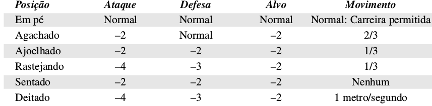
Esta manobra é usada para apontar uma arma de longo alcance (ou algum aparelho do tipo câmera fotográfica ou telescópio). O personagem tem de escolher um alvo específico. Ele não pode apontar para uma coisa que não consegue ver ou de alguma forma detectar. Especifique a arma com a qual o personagem está mirando seu alvo. Se na seqüência de uma manobra apontar o personagem realizar um Ataque ou um Ataque Total com a mesma arma contra o mesmo alvo, ele receberá um bônus na jogada para ver se consegue acertar o alvo. Some a Precisão (Prec) da arma ao nível de habilidade do personagem. Se apoiar uma arma de fogo ou uma besta, o personagem adicionará um bônus extra igual a +1 à Prec da arma. Uma arma de fogo ou besta estará apoiada se o personagem puder assentá-la sobre um saco de areia, um pequeno muro, um carro, etc. Uma arma de fogo de uma mão (ex, uma pistola) é considerada apoiada se o personagem usar duas mãos para manuseá-la. Uma arma de fogo de duas mãos (ex., um fuzil) é considerada apoiada se o personagem estiver deitado ou usando um bipé.
Se passar mais do que um segundo Apontando, o personagem receberá um bônus adicional igual a +1, se Apontar dois segundos, ou +2, para três ou mais segundos.
O personagem usa esta manobra para realizar um ataque armado ou sem armas durante um combate corpo a corpo, ou para usar uma arma de projétil ou de arremesso num combate à distância. Para usar uma arma para atacar, ela tem de estar preparada.
Se o personagem estiver usando uma arma de mão ou realizando um ataque sem armas, o alvo dele tem de estar dentro do seu alcance. Resolva este ataque como está explicado no parágrafo Ataques de Perto (pág. 27).
Se o personagem estiver usando uma arma de longo alcance, o alvo deverá estar dentro do alcance Max da arma. Resolva o ataque como explicado no parágrafo Ataques a Longa Distância (pág. 27). Se tiver realizado uma manobra Apontar (pág. 25) no ultimo turno, o personagem receberá um bônus em sua jogada de ataque.
Atacar qualquer oponente com uma arma preparada, sem fazer nenhum esforço para se defender de ataques inimigos. Se o personagem estiver fazendo um ataque de perto, será preciso especificar uma das três opções a seguir antes do ataque:
Determinado faz um único ataque com um bônus igual a +4 na jogada de ataque!
Duplo : faz dois ataques contra o mesmo oponente, se o personagem tiver duas armas preparadas ou uma arma que não precisa ser preparada depois de ter sido usada. Ataques com uma segunda arma na mão inábil continuam submetidos ao redutor habitual igual a –4 (v. Destro ou Canhoto , pág. 5) a não ser que o personagem tenha a vantagem Ambidestria (pág. 8).
Forte : faz um único ataque, com o NH habitual. Se atingir o alvo, o golpe causará 2 pontos de dano a mais — ou +1 de dano por dado, o que for mais alto. Isso se aplica apenas a ataques de perto com armas que causam dano GDP ou em Balanço com base na ST.
Se o personagem estiver realizando um ataque a longa distância, ele se traduzirá num único ataque com um bônus igual a +1 na jogada de ataque.
O personagem se desloca como descrito na manobra Deslocamento (pág. 25), mas durante ou depois de seu movimento faz um único ataque, mal apontado — sem armas ou com uma arma preparada.
O personagem ataca como descrito na manobra Ataque, mas submetido a um redutor igual a –4 em seu teste. Se estiver realizando um ataque a longa distância, perderá todos os bônus por ter Apontado. Se estiver realizando um ataque de perto, seu nível de habilidade ajustado não pode ser maior do que 9.
Essa é a manobra a ser escolhida quando se está cercado de oponentes — especialmente oponentes que gostam de usar Ataque Total! É preciso especificar uma destas duas opções:
Defesa Aumentada : adiciona +2 a uma Defesa Ativa de sua escolha: Esquiva, Aparar ou Bloqueio. Esse bônus dura até o próximo turno.
Dupla Defesa : escolha duas Defesas Ativas diferentes contra o mesmo ataque. Se falhar em sua jogada de defesa contra um dos ataques, o personagem pode tentar uma segunda defesa diferente contra aquele ataque. Exemplo: se falhar em um Bloqueio, o personagem pode tentar uma Esquiva ou Aparar. Se tentar Aparar (armado ou sem armas) com uma mão e falhar, uma tentativa de Aparar com a outra mão contará como uma “defesa diferente”
O personagem se concentra em uma atividade mental. Entre os exemplos incluem-se fazer um teste dos Sentidos para encontrar um guerreiro invisível; fazer um teste de Liderança para dar ordens, teste de Operação de Aparelhos Eletrônicos para operar um sensor e a maior parte dos outros testes relacionados a IQ. Algumas atividades exigem que o personagem se concentre durante vários segundos. Se for forçado a usar uma Defesa Ativa, for derrubado, ferido, ou de alguma outra forma distraído antes de terminar, o personagem terá de fazer um teste de Vontade –3. No caso de uma falha, ele perdeu a concentração e tem de começar novamente.
O personagem faz uma manobra Preparar para pegar ou sacar qualquer item e prepará-lo para o uso; ex. sacar uma espada da bainha ou uma arma do coldre, ou recarregar uma arma de fogo. Em alguns casos, o personagem pode também precisar de uma manobra Preparar para recuperar o controle de uma arma de difícil manejo depois de um golpe em balanço, ou para ajustar o alcance de uma arma longa.
O personagem pode usar uma manobra Preparar para realizar outras ações físicas além de lutar: abrir ou fechar uma porta, arrombar uma fechadura, escavar, erguer algo, etc.
Um “Ataque” é uma tentativa de atingir um oponente ou outro alvo. Se executar uma manobra Ataque, Ataque Total, ou Deslocamento e Ataque o personagem pode tentar atingir um oponente. Ele só pode atacar com uma arma que esteja preparada. O GM sempre terá a opção de decretar que por algum motivo que tem a ver com a situação alguns dos combatentes não podem atacar certos oponentes. Exemplo: oito atacantes não podem atingir um único oponente de tamanho humano ao mesmo tempo (três ou quatro atacantes ao mesmo tempo já seria improvável, a não ser que sua vítima não tivesse aliados!).
Existem dois tipos básicos de ataque, ataques de perto (v. pág. 27) e ataques a longa distância (v. pág. 27). O alvo tem de estar dentro do alcance do personagem, se ele estiver realizando um ataque de perto, ou dentro do alcance de sua arma, se ele estiver realizando um ataque a longa distância. A resolução de qualquer um desses tipos de ataque envolve jogadas com três dados:
Primeiro faça a jogada de ataque . No caso de um sucesso, o ataque foi bom.
Agora o oponente tem de fazer uma jogada de defesa para ver se consegue se defender do golpe. Se for bem sucedido nesse teste, ele escapa ou detém o ataque e não é atingido.
Se o alvo falhar na jogada de defesa, o golpe o atingiu e é necessário fazer uma avaliação de dano
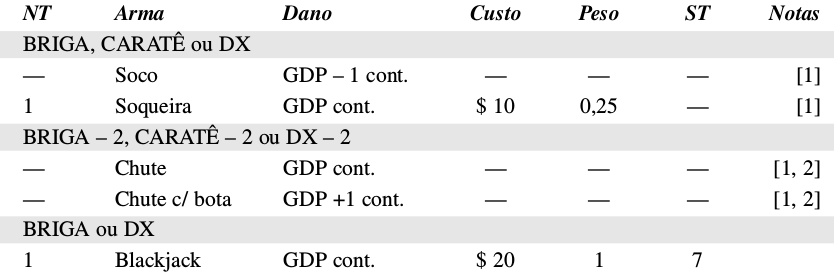 Algumas vezes o personagem terá de lutar sem armas ou com armas improvisadas. Este será um combate sem armas . Qualquer pessoa pode participar de um combate sem armas, mas certas habilidades transformam o personagem num lutador mais efetivo neste tipo de combate. Veja a tabela a seguir para saber o alcance, dano etc. de socos, chutes, mordidas e outros golpes sem armas.
[1] Caratê (pág. 5) aumenta o dano causado com socos e chutes.
[2] Se o personagem errar um chute, faça um teste de DX para ver se ele cai ou não.
A “jogada de ataque” é um teste de habilidade comum. Calcule o nível de habilidade efetivo (nível de habilidade básico, mais ou menos quaisquer modificadores apropriados) com a arma que o personagem está usando.
Se o resultado do teste for menor ou igual ao seu nível de habilidade “efetivo”, o ataque atingirá o alvo a não ser que seu oponente tenha sucesso em sua defesa (v. Defesa pág. 28). Se ele falhar nesta jogada de defesa — ou não puder realizá-la — o personagem o terá atingido.
Se o resultado do teste for maior que o nível de habilidade efetivo, o personagem errou o golpe!
Não importa qual seja o nível de habilidade do personagem, um resultado igual a 3 ou 4 sempre atinge o alvo, e é também um Golpe Fulminante . Um resultado igual a 5 ou 6 pode ser um golpe fulminante, dependendo do nível de habilidade do personagem. Se o nível de habilidade efetivo for 15, um resultado menor ou igual a 5 é um golpe fulminante. Se o nível de habilidade efetivo for maior ou igual a 16, então um resultado menor ou igual a 6 é um golpe fulminante.
No caso de um golpe fulminante, o ataque automaticamente atinge o alvo — o oponente não tem direito a uma jogada de defesa. Além disso, no caso de o resultado do ataque ter sido 3, não há necessidade de se fazer uma avaliação de dano — o golpe causa automaticamente o maior dano possível. Exemplo: o dano máximo para um golpe de 1d + 2 seria 6 + 2, 8 pontos. Os outros golpes fulminantes ignoram a jogada de defesa, mas continua existindo a necessidade de se fazer a avaliação de dano normalmente.
Independente de qual o nível de habilidade, um resultado igual a 17 ou 18 será sempre uma falha.
Quando o personagem escolhe uma manobra que permite que ele faça um ataque de perto, o jogador tem de especificar quem ele está atacando e com qual arma. O personagem pode fazer um ataque de perto usando qualquer arma de mão preparada (incluindo armas naturais como chutes, mordidas ou socos).
Algumas armas podem ser usadas pelo personagem de mais de uma maneira; ex., ele pode golpear com a lâmina ou com a ponta de uma espada curta. Este tipo de arma tem múltiplas linhas na tabela de armas (págs 20 – 22). Quando o personagem ataca com uma arma destas, é preciso indicar qual golpe vai ser usado antes de se fazer o teste.
Uma arma de uma mão estará preparada se o personagem a estiver segurando com a mão. Uma arma de duas mãos estará preparada se o personagem a estiver segurando com ambas as mãos. Algumas armas desajeitadas (ex., acha d ́armas) ficam despreparadas depois de cada ataque a não ser que o personagem seja extremamente forte (v. pág. 20).
Para sacar uma nova arma de uma bainha, estojo ou bandoleira ou para preparar uma arma desajeitada que ficou despreparada depois de um ataque, o personagem tem de realizar uma manobra Preparar (pág. 26).
Uma arma natural (soco, chute, etc) é sempre considerada preparada a não ser que a parte do corpo em questão esteja ocupada ou presa; ex., o personagem não pode dar um soco se tiver uma arma na mão.
Um “ataque a longa distância” é qualquer ataque com uma arma usada a longa distância, desde uma pedra arremessada até um fuzil laser.
O personagem só pode realizar um ataque a longa distância contra um alvo que se encontra dentro do alcance de sua arma. Para saber essa distância, consulte a tabela de arma relevante. A maior parte dos ataques indica os parâmetros Meio Dano (1/2D) e Alcance Máximo (Max), em metros. O alvo não pode estar a uma distância maior do que Alcance Max; 1/2D afeta apenas o dano.
Todas as armas de longo alcance têm um parâmetro chamada Precisão (Prec). Esse é o bônus que o personagem recebe se realizar uma ou mais manobras Apontar antes de atacar. Quando Aponta, o personagem pode receber outros bônus para cada segundo extra que passar Apontando, por deixar sua arma apoiada ou por estar usando uma mira.
“Armas de Arremesso” são armas que o personagem tem de arremessar fisicamente contra o alvo: pedras, granadas de mão, shurikens , etc. Ele também pode arremessar algumas armas de mão como machados, facas e lanças. Trate o arremesso de uma arma como qualquer outro ataque a longa distância.
Deslocamento e Ataque: –4.
Piso ruim: –2 ou mais (a critério do GM). Grande distração (ex., toda a roupa do personagem em chamas): –3 ou mais (a critério do GM). Pequena distração (ex., uma parte das roupas em chamas): –2. ST menor do que a necessária para usar a arma: –1 para cada ponto a menos.
Cegueira, alvo completamente invisível ou em escuridão completa: –10. Não consegue ver o oponente: –6 ou –4, se o personagem souber que a localização do oponente com um erro de 1 m. Escuridão parcial, neblina, fumaça, etc.: –1 a –9 (a critério do GM).
Ataque Total (Determinado): +4
Empunhando um escudo grande: –2
Ataque com a mão inábil: –4 (sem redutor se tiver Ambidestria).
Ataque Total (Determinado): +1
Apontar durante um turno: + Precisão da arma. Arma Apoiada: +1 se estiver estável e passar um turno Apontando. Apontar mais de um turno: +1 para 2 segundos, +2 para três segundos ou mais. Ataque com mão inábil: –4 (sem redutor se tiver Ambidestria).
Mira: +1 por segundo Apontando, até um máximo igual ao bônus da mira.
O principal uso desta tabela são os combates à distancia, mas o GM também pode utilizá-la para testes dos Sentidos e outros testes de habilidade nos quais o tamanho, a velocidade ou a distância podem ter algum efeito no resultado.
Essa tabela usa a mesma progressão para tamanho que é utilizada para a soma de velocidade e distância, mas os modificadores devidos ao tamanho têm o sinal oposto ao dos modificadores devidos à velocidade/distancia: tamanhos grandes dão bônus enquanto distâncias e velocidades grandes impõem redutores. Por isso, se um alvo for duas vezes maior mas também estiver duas vezes mais distante e se deslocando duas vezes mais rápido, a soma dos modificadores permanecerá a mesma.
Tamanho do Alvo : Quanto maior o alvo mais fácil será acertá-lo. O modificador a ser usado no teste para ver se o personagem acerta um objeto devido ao seu tamanho é chamado de “Modificador de Tamanho” (MT). Seres humanos têm MT 0. Objetos maiores do que um ser humano dão bônus nas tentativas de atingi-los, enquanto que os objetos menores impõem redutores.
Encontre o MT de uma criatura ou objeto usando a tabela. Descubra qual a maior dimensão do ser ou objeto (ex., a altura no caso de um humanóide) na coluna “Medida Linear,” depois encontre o MT olhando na coluna Tamanho. Se o tamanho cair entre dois valores, encontre o MT com base no maior tamanho. Se um objeto for muito menor em duas das três dimensões (ex., um cabo de aço com 100 metros de comprimento e 5 cm de diâmetro), use a menor dimensão ao invés da maior.
Distância e Velocidade do Alvo : a velocidade e a distância afetam apenas o combate à distância. Adicione a velocidade do alvo em metros/segundos à distância em metros que ele se encontra. Procure o total correspondente na coluna “Medida Linear”. Nessa mesma linha, veja o valor da coluna “Velocidade/Distância” que será o modificador de velocidade/distância. Se o total cair entre dois valores, use o maior; ex., trate 8 metros como se fossem 10 metros. Se os lutadores estiverem a pé, assuma que a velocidade deles é 0 e use como distância a distância entre eles; no caso de veículos, a velocidade em metros/segundo é 1/3 da sua velocidade em km/h.
Exemplos : um homem a 8 metros de distância impõe um redutor igual a –4 às tentativas de acertá-lo. O Parâmetro velocidade/ alcance de um motoqueiro a 40 metros de distância, viajando a 30 metros por segundo (90 km/h), é igual a 40 + 30 = 70 metros, que significa um redutor igual a –9.
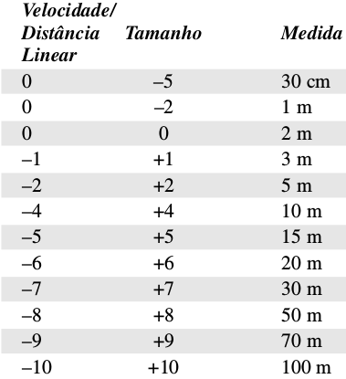
Se for bem sucedido em sua jogada de ataque, o personagem, na verdade, (ainda) não acertou seu oponente, a não ser que ele tenha conseguido um golpe fulminante. O ataque foi bom o suficiente para acertar o alvo, se este não conseguir se defender .
Existem três “defesas ativas” que um combatente pode usar para evitar um ataque: Esquiva (v. Esquiva ), Aparar (v. Aparar ), e Bloqueio (v. Bloqueio ). Os valores das defesas ativas deveriam ser calculados previamente, e mantidos registrados na planilha do personagem.
Uma defesa ativa é uma tentativa deliberada de evitar um determinado ataque. Ela só é possível se o defensor estiver consciente da possibilidade de um ataque de parte do atacante e livre para agir... seja pondo-se fora da trajetória do golpe (uma esquiva), desviando o ataque com uma arma ou as mãos vazias (um aparar) ou interpondo um escudo entre ele e o ataque (um bloqueio).
Se um oponente for bem sucedido em uma jogada de ataque contra o personagem, ele pode escolher uma defesa ativa e tentar uma “jogada de defesa” contra o ataque. Exceção : a manobra Defesa Total (Defesa Dupla) permite que o personagem tente uma segunda defesa contra um determinado ataque, se sua primeira defesa falhar.
A defesa ativa que o personagem escolhe depende da situação — principalmente da manobra que ele escolheu no turno anterior. Algumas manobras restringem as defesas ativas que se pode usar. Além disso, não será possível realizar uma defesa ativa se a pessoa não estiver ciente do ataque. O personagem também não tem possibilidade de defesa ativa, se estiver inconsciente, imobilizado ou de alguma outra forma impossibilitado de reagir.
O defensor joga 3d e compara o resultado com o valor de sua defesa ativa. Se o resultado for menor ou igual à defesa efetiva do defensor, ele se esquivou, aparou ou bloqueou o ataque. Caso contrário, a defesa ativa foi ineficaz e o ataque o atingiu. Se isto ocorrer, jogue os dados para a avaliação de dano.
Um resultado igual a 3 ou 4 em uma defesa ativa sempre significa que ela foi bem sucedida — mesmo se o valor efetivo da defesa for apenas 1 ou 2! Um resultado igual a 17 ou 18 sempre será uma falha.
Se o oponente do personagem não tiver direito a uma defesa ativa porque o personagem conseguiu um golpe fulminante, ele não poderá tentar uma jogada de defesa contra esse ataque.
Se o personagem estiver atordoado , todas as defesas ativas estarão sujeitas a um redutor igual a –4.
Se o personagem tiver um escudo preparado, some o Bônus de Defesa (BD) do escudo a qualquer teste de Esquiva, Aparar ou Bloqueio que vier a ser feito contra ataques vindos do mesmo lado do escudo ou da frente do personagem.
Uma “Esquiva” é uma tentativa ativa de sair da trajetória de um ataque. Esta é, com freqüência, a melhor defesa quando o personagem não é tão hábil com a arma e não tem escudo, ou quando ele estiver sendo atacado múltiplas vezes.
Normalmente, a Esquiva é a única defesa ativa que pode ser usada contra armas de fogo. Isso não significa que o personagem seja de fato capaz de se esquivar de balas! Uma esquiva contra esse tipo de ataque representa uma tentativa de não estar no lugar onde você acredita que o seu oponente irá atirar, se inclinando ou se jogando no momento certo.
A defesa ativa Esquiva do personagem é igual ao seu Deslocamento +3 (arredondado para baixo), menos um redutor igual ao seu nível de carga (v. Carga e Movimento pág. 22). Coloque o valor da Esquiva do personagem em sua planilha para referências rápidas.
O personagem pode se esquivar de qualquer ataque exceto daqueles que ele não sabe da existência! O personagem só pode fazer um teste de esquiva para um dado ataque.
O personagem só tem uma defesa ativa para cada ataque, a menos que ele esteja usando uma Defesa Total (Defesa Dupla), mas não existe nenhum limite para o número de vezes que ele pode se esquivar de ataques diferentes durante o seu turno.
Um “bloqueio” é uma tentativa de interpor um escudo, manto, ou um objeto grande similar entre o personagem e um ataque. Esta tentativa requer um escudo preparado . (Se for forte o suficiente para segurar e erguer alguém, o personagem poderá bloquear com o corpo dessa pessoa!).
A defesa ativa Bloqueio do personagem é igual a 3 + metade de seu NH em Escudo, desprezando todas as frações. Exemplo: NH 11 em Escudo daria ao personagem um Bloqueio igual a 3 + (11/2) = 8,5 que, arredondado para baixo, é igual a 8.
Em geral, o personagem pode bloquear qualquer ataque de perto, arma arremessada, liquido projetado ou arma de projétil impulsionada pela força muscular. Ele não é capaz de bloquear balas ou armas de feixe... os projéteis destas armas são rápidos demais para serem detidos desta forma.
O personagem pode tentar bloquear apenas um ataque por turno.
Uma manobra “Aparar” é uma tentativa de desviar um golpe utilizando uma arma ou as mãos nuas. O personagem não pode aparar a não ser que sua arma esteja preparada — ou, se ele estiver desarmado, que tenha uma das mãos vazia. Ele só pode tentar aparar um ataque por turno.
O personagem pode usar a maior parte das armas de mão para aparar. Algumas armas longas bem equilibradas (ex., Cajado) dão um bônus igual a +1 ou +2 nas tentativas de aparar devido a sua capacidade de manter o oponente a distância.
A defesa ativa Aparar com uma determinada arma é igual a 3 + metade do nível de habilidade do personagem com aquela arma, arredondado para baixo. Exemplo: NH 13 em Espada de Lâmina Larga daria um Aparar igual a 9.
Uma manobra Aparar não consegue deter nada que não sejam ataques de perto ou armas arremessadas. Exceção : se um oponente atacar o personagem com uma arma de projétil e estiver dentro do alcance da arma de mão do personagem, este poderá aparar o ataque. Afinal de contas, ele estará aparando a arma, não o projétil! Exemplo: se um atacante disparar um tiro de pistola contra o personagem a apenas um metro de distância, o personagem poderá tentar aparar o ataque com as mãos nuas. Um sucesso será entendido como se ele tivesse conseguido bater no braço do atacante ou colocar de lado a arma, fazendo com que o projétil passasse longe do seu corpo.
O personagem pode aparar armas de arremesso, mas sujeito a um redutor igual a –1 para a maioria das armas de arremesso, e igual a –2 para armas de arremesso pequenas como facas, shurikens , e outras armas que pesem 0,5 kg ou menos.
Se o personagem for bem sucedido numa tentativa de aparar um ataque sem armas (mordida, soco ou etc.) com uma arma, ele pode ferir seu atacante: Faça imediatamente um teste da arma que o personagem usou para aparar. Esse teste estará sujeito a um redutor igual a –4 se o atacante tiver utilizado Caratê. Se for bem sucedida, a manobra aparar do personagem atinge em cheio o membro do atacante. Ele não terá direito a uma jogada de defesa contra este ataque! Faça a avaliação de dano normalmente.
Se estiver lutando sem armas, ou pelo menos com uma das mãos livre, o personagem pode optar por aparar com as mãos nuas. Seres que não têm mãos (como a maioria dos animais) não podem aparar desarmados – eles podem apenas se esquivar.
O personagem pode usar as perícias Briga e Caratê – ou DX, o que for maior – para aparar com uma das mãos. A defesa ativa Aparar do personagem é igual a 3 + metade do seu nível de habilidade ou de sua DX, arredondado para baixo.
Não se impõe nenhuma penalidade para se aparar outro ataque sem armas. Entretanto, as tentativas de aparar armas do personagem estarão submetidas a um redutor igual a –3 a não ser que o ataque seja um golpe de ponta ou que o personagem esteja usando Caratê (em qualquer um desses casos, use o valor total do Aparar do personagem).
Aparar com adaga ou faca: –1 no Aparar.
Aparar com cajado: +2 no Aparar.
Aparar desarmado contra arma: –3 no Aparar (0 se o ataque for um GDP ou se o defensor tiver Caratê).
Ataque Total: defesa impossível!
Defesa Total: (Aumento na Defesa): +2 para uma defesa: Esquiva, Bloqueio ou Aparar.
Deslocamento e Ataque: somente Esquiva ou Bloqueio, defensor não pode Aparar.
Piso Ruim: –1 ou mais (a critério do GM).
Sem ver o atacante: –4, e um Bloqueio ou Aparar exigem um teste de Audição –2.
Distração (ex., roupas em chamas): –1 ou mais (a critério do GM).
Com Carga: redutor igual ao nível de carga na Esquiva ou no Aparar do Caratê.
Atordoado: –4
Ataque pelas costas: nenhuma defesa possível.
Mangual: –4 para Aparar/ –2 para Bloquear.
Arma de Arremesso: –1 para Aparar ou –2 para Aparar se a arma for pequena (0,5 kg ou menos).
Se o personagem for bem sucedido em sua jogada de ataque e o alvo falhar em sua jogada de defesa (se tiver direito a uma), ele foi atingido! Se o ataque for do tipo que pode causar dano, será necessário fazer uma “avaliação de dano”. Ela dirá quanto dano básico o ataque causou ao alvo.
A arma (e, no caso de armas impulsionadas pela força muscular, a ST) do personagem determinam o número de dados que serão jogados para determinar a quantidade de dano. Se o alvo tiver alguma Resistência a Dano (RD) — devida a armadura, mágicas protetoras, etc. — temos de subtrair esse valor do resultado da avaliação de dano.
Se o resultado da avaliação de dano for menor ou igual à RD efetiva do alvo, o ataque não conseguiu penetrá-la — ele resvalou ou foi absorvido. Se o resultado da avaliação de dano exceder a RD do alvo, o excesso depois de descontada esta defesa é o dano que penetrou .
Depois de descobrir a quantidade de dano de seu ataque que penetrou, aplique os modificadores de dano de acordo com o tipo de dano (isso só interessa no caso de corte, perfuração, e certos tipos de dano perfurante; v. a seguir). Isto diz a lesão que o alvo sofreu, que será subtraída do número de Pontos de Vida dele.
Normalmente, o próprio jogador faz a avaliação de dano e o GM faz as dos NPCs. As avaliações de dano são expressas como um número de dados, às vezes com um modificador; ex., “6d –1” ou “1d +2”. Um modificador negativo não pode reduzir o dano a um número menor do que zero se o ataque causa dano por contusão , ou menor do que 1 se o ataque causa qualquer outro tipo de dano.
O resultado da avaliação de dano ( depois de aplicados os modificadores, como explicado anteriormente) é o “dano básico”
Se uma arma de longo alcance tem dois parâmetros de alcance, o primeiro é o Meio Dano (1/2D), em metros. Se o alvo estiver a uma distância maior ou igual a 1/2D, divida o dano básico por 2 e arredonde para baixo.
A Resistência a Dano (RD) determina o grau de proteção que uma armadura natural ou artificial, um campo de força, pele rija etc. oferece contra dano. Objetos e veículos têm seus próprios valores de RD que protegem contra qualquer dano que eles venham a sofrer — e, se o personagem os usar como cobertura entrando ou ficando atrás deles, esta RD também o protegerá.
Subtraia a RD do dano básico sofrido. O resultado é o “dano que penetrou” depois de esmagar ou deformar a armadura o suficiente para causar algum ferimento significativo no alvo. Exemplo: se o personagem foi atingido por um ataque que causou 6 pontos de dano básico e ele estava vestido com uma cota de malha com RD 4, ele é de fato atingido por 2 pontos de dano que penetraram a proteção.
Em geral, as RDs de múltiplas fontes são cumulativas; ex, se o personagem tiver uma RD natural igual a 2 e colocar um colete tático militar com RD 12, sua RD total será 14. As exceções sempre estarão especificadas.
Todo dano que restar depois de subtraída a RD do dano base é “dano que penetrou”. Se houver algum dano que penetrou, multipliqueo pelo “modificador de dano” do ataque. Este é um modificador que varia de acordo com o tipo de dano:
Pouco Perfurante (pa-): x 0,5.
Corte (corte) e muito perfurante (pa+): x 1,5
Perfuração (perf): x 2.
Depois de aplicarmos este multiplicador ao dano, teremos a lesão: o número de PVs perdido pelo alvo. Arredonde as frações para baixo , mas a lesão mínima é 1 PV para qualquer ataque que penetre a RD. Diminua então do número atual de PVs da vítima a lesão que ela sofreu.
A gravidade e o tipo do ferimento indicam o que acontece em seguida. Veja na próxima seção as regras para lesões e sua recuperação.
Lesões, Doenças e Fadiga
A vida de um aventureiro não é composta apenas de canções e glórias. Ele se cansa. Suas roupas ficam sujas. Ele pode se ferir — ou ainda pior, pode morrer ! Felizmente todos esses problemas têm solução, até mesmo a morte. Continue lendo...
Ferimentos e doenças causam “lesões”: uma perda (normalmente) temporária de Pontos de Vida. Ou seja, a quantidade de PVs do personagem mede a capacidade dele suportar lesões; v. Pontos de Vida (pág. 6).
Se alguma lesão reduzir a quantidade de PVs do personagem a 0 ou menos, ele estará à beira da inconsciência. O personagem pode até mesmo ter um valor negativo de PVs... mas se ficar muito tempo nessa condição, corre o risco de morrer. Para um homem comum, a distância entre estar com todos os PVs e estar com um número de PVs igual a –ST pode ser percorrida com um ou dois tiros ou golpes de espada.
Ferimentos seguidos acabam fazendo com que qualquer um ou qualquer coisa enfraqueça e acabe desabando, mesmo que nenhuma das lesões seja particularmente grave. O diagrama que veremos a seguir descreve resumidamente os efeitos de o personagem estar com uma quantidade pequena ou negativa de PVs. Todos os efeitos são cumulativos.
Menos que 1/3 da ST — o personagem está cambaleando devido aos ferimentos. Reduza seu Deslocamento e sua Esquiva à metade (arredondado para cima ).
0 PVs ou menos o personagem corre risco de desabar. Além dos efeitos vistos no parágrafo anterior, faça um teste de HT no início do próximo turno, com um redutor igual a –1 para cada múltiplo inteiro da ST que houver de PVs negativos. Uma falha significa que ele perdeu a consciência (ou simplesmente parou de funcionar, se ele não estava verdadeiramente vivo ou consciente); v. Recobrando a Consciência , (pág. 30). Um sucesso significa que o personagem pode agir normalmente, mas terá de fazer o teste novamente a cada turno subseqüente para continuar funcionando. Exceção : se optar por Fazer Nada em seu turno e não tentar nenhuma jogada de defesa, o personagem pode continuar consciente sem fazer nenhum teste. Faça o teste somente naqueles turnos em que o personagem tentar fazer uma jogada de defesa ou optar por realizar alguma outra manobra além de Fazer Nada.
–1 x ST — Além dos efeitos vistos anteriormente O personagem tem de ser bem sucedido num teste de HT para não morrer (se falhar com uma margem igual a 1 ou 2, ele estará morrendo, mas ainda não estará morto — v. Ferimentos Mortais a seguir) se for bem sucedido, o personagem ainda conseguirá falar, lutar etc. como visto anteriormente (até falhar em seu teste de HT e cair). Faça novamente o teste toda vez que ele sofrer uma lesão que levar seu número de PVs negativo a ficar maior ou igual a um multiplicador ainda maior de sua ST, independente se isso é resultado de um ferimento ou de vários. Exemplo: se tem ST 11, o personagem tem de fazer um teste para evitar morrer quando seu número de PVs chegar a –11. Se sobreviver, ele terá de fazer o teste novamente quando seu número de PVs chegar a –22, –33 e assim por diante...
–5 x ST — o personagem morre imediatamente. Ele já perdeu 6 vezes a sua quantidade inicial de PVs ! Ninguém consegue sobreviver a tantas lesões.
–10 x ST — destruição total do corpo, se isso fizer algum sentido dada a fonte do dano – 200 pontos em ferimentos causados por flechas deixariam um cadáver em péssimo estado, mas ainda assim reconhecível; 200 pontos em lesões por fogo não deixariam nada além de um amontoado irreconhecível de carvão. A diferença pode ser muito importante em cenários nos quais ressurreição, reanimação etc. são possíveis!
Toda vez que o personagem sofrer uma lesão, subtraia o número de PVs que ele perdeu (até um máximo igual a –4) da DX e da IQ dele — este redutor se aplicará apenas em seu próximo turno . Este efeito, chamado de “choque”, é temporário; seus atributos voltam ao normal no turno seguinte.
O choque afeta perícias baseadas em DX e IQ, mas não afeta as defesas ativas nem outras reações defensivas.
Um “ferimento grave” é qualquer lesão que provoca uma perda de PVs maior do que 1⁄2 da quantidade inicial de PVs. Todo ferimento grave exige um sucesso num teste de HT para evitar que o alvo seja derrubado e fique atordoado (v. a seguir).
Toda vez que sofrer um ferimento grave , o personagem terá de ser bem sucedido num teste de HT para não cair nem ficar atordoado. Se for bem sucedido, ele não estará sujeito a nenhum redutor além daqueles devidos ao choque comum.
No caso de uma falha, o personagem ficará atordoado; v. mais adiante. Ele cairá de bruços (se já não tiver caído) e, se estiver segurando alguma coisa, ele a soltará. Esse efeito é chamado “queda/prostração”. No caso de uma falha por uma margem maior ou igual a 5, ou no caso de uma falha crítica, o personagem cai e perde a consciência! V. Recobrando a Consciência mais adiante. Se estiver atordoado, o personagem terá de Fazer Nada em seu próximo turno. Ele poderá realizar qualquer defesa ativa enquanto estiver atordoado, mas suas jogadas de defesa estarão submetidas a um redutor igual a –4.
No final de seu turno, o personagem tem de fazer um teste de HT. Se for bem sucedido, ele se recupera do atordoamento e pode agir normalmente nos turnos subseqüentes. No caso de uma falha, o personagem permanece atordoado e suas próximas manobras terão de ser Fazer Nada, mas ele poderá fazer o teste novamente no final do próximo turno... e assim por diante, até se recuperar do atordoamento.
Se falhar em um teste de HT para evitar a morte por uma margem igual a 1 ou 2, o personagem não cai morto imediatamente, em vez disso, ele sofre um “ferimento mortal”. Este é um ferimento tão grave que as lesões internas podem matá-lo mesmo depois que ele parar de sangrar.
Se for mortalmente ferido, o personagem ficará instantaneamente incapacitado. Ele pode ou não permanecer consciente (a critério do GM). Se sofrer mais lesão e tiver que fazer outro teste de HT para evitar a morte, qualquer falha o matará.
Enquanto estiver mortalmente ferido, o personagem terá de ser bem sucedido em um teste de HT a cada meia hora para evitar a morte. Se falhar, ele morre. Se for bem sucedido, ele sobrevive mais meia hora — e depois faz o teste novamente. No caso de um sucesso decisivo, ele se recupera milagrosamente: não estará mais mortalmente ferido (mas ainda estará incapacitado). Ele pode também se recuperar de um ferimento mortal com um sucesso em um teste de HT sempre que um tratamento médico ou cura mágica recuperar alguns de seus Pontos de Vida — mesmo que ele ainda tenha um número de PVs negativo.
Se o personagem se recuperar de um ferimento mortal, faça um teste de HT. No caso de uma falha, ele perde 1 ponto de HT permanentemente. No caso de uma falha crítica, o GM pode exigir que o personagem adquira uma desvantagem apropriada (pág. 10) ou sofra algum outro efeito (ex., uma diminuição na sua aparência devido às cicatrizes).
Se o personagem morrer, é possível que ainda se queira anotar as novas lesões que ele vier a sofrer. Em certos mundos futuristas, ou naqueles em que existe magia, os mortos podem ser trazidos de volta à vida com um tratamento rápido, desde que o corpo esteja em sua maior parte intacto (que o número de PVs não tenha chegado a –10 x ST).
Decapitações, degolações, etc podem matar qualquer um independente da HT e do número de PVs. Se uma pessoa estiver indefesa ou inconsciente e for atacada de uma forma obviamente letal, ela morrerá. Não perca seu tempo jogando os dados para avaliar o dano, calcular os PVs que restaram etc., assuma simplesmente que o número de PVs caiu para –5 x ST.
Isso não se aplica a uma vítima que se encontra meramente distraída . Se o personagem se esgueirar com uma faca por trás de uma sentinela, não conseguirá matá-la automaticamente. Aja de forma realista. Como se trata de um ataque surpresa, o oponente não retribuirá o ataque: portanto a melhor opção é um Ataque Total! É quase certeza que a jogada de ataque será bem sucedida. A vítima não terá direito a nenhuma defesa ativa. O personagem vai provavelmente causar lesões suficientes para incapacitar ou matar a vítima. Mas, isto não ocorrerá automaticamente .
Quando um PC ou um NPC importante morrer de alguma forma extremamente rápida e irreversível, o GM pode permitir uma “última ação”. Se for um golpe final contra um inimigo, ele não pode demorar mais do que um turno. Se for apenas um discurso em seu leito de morte, o GM deve permitir que ele se estenda um pouco mais para aumentar a dramaticidade! Isso não tem nada a ver com realismo, e sim com diversão.
As regras de lesões parecem brutais, mas não se desespere... o personagem pode se recuperar!
Uma falha por uma margem maior ou igual a 5 em um teste de queda/prostração, uma falha no teste de HT para ver se consegue se manter consciente, um número de PVs menor ou igual a 0, ou muitas outras coisas podem deixar o personagem inconsciente. Fica a cargo do GM decidir se ele está realmente inconsciente ou simplesmente incapacitado pela dor e lesão — mas qualquer que seja o motivo, o resultado é que ele não consegue fazer nada. Vejamos a seguir uma descrição de como ele se recuperará:
Se tiver um ou mais PVs, o personagem desperta automaticamente depois de 15 minutos.
Faça um teste de HT a cada hora, se o número de PVs do personagem for menor ou igual a 0 e maior do que –1 x ST, para ver se o personagem acorda. Quando for bem sucedido, ele poderá agir normalmente. Mas, como o número de PVs do personagem será menor do que 1/3 de sua ST, seu Deslocamento e sua Esquiva estarão reduzidos à metade.
Se o número de PVs do personagem for menor ou igual a –1 x ST, ele estará em maus lençóis. Terá direito a um único teste de HT para despertar depois de 12 horas. Se for bem sucedido, ele recobra a consciência e poderá agir de acordo com as regras vistas anteriormente. Mas, se falhar, ele não recuperará a consciência sem tratamento médico ou cura mágica — se for bem sucedido em um teste de HT quando recuperar seus Pontos de Vida por estes meios — ele poderá despertar e agir como descrito anteriormente. Até receber ajuda, entretanto, ele terá de fazer testes de HT a cada 12 horas; no caso de uma falha, o personagem morre .
O descanso permite que o personagem recupere PVs perdidos a não ser que o dano seja de um tipo específico que não pode ser curado naturalmente (v. um exemplo no parágrafo Doenças , pág 32). Faça um teste de HT ao final de cada dia de descanso com uma refeição decente. Se for bem sucedido, o personagem recupera 1 PV. O GM pode impor um redutor se as condições forem ruins, ou um bônus se as condições forem muito boas.
Os dois usos principais da perícia Primeiros Socorros (pág.14) são as ataduras e o tratamento do choque .
Demora apenas um minuto para aplicar pressão ou fazer um torniquete para estancar um sangramento. Isto provocará a recuperação de 1 PV.
Depois de aplicar ataduras no paciente, o socorrista tem de dedicar um pouco mais de tempo para preparar os curativos e tratar o choque. Ele tem de manter o paciente aquecido, confortável, tranqüilo e imóvel. Passado o tempo indicado na Tabela de Primeiros Socorros , ele pode fazer um teste de Primeiros Socorros.
No caso de um sucesso, o socorrista terá de jogar os dados como indicado na tabela para avaliar quantos Pontos de Vida o paciente recupera — no mínimo 1 PV. Um sucesso decisivo restaura o maior número possível de PVs! O resultado desta jogada de dados já inclui o PV recuperado por causa das ataduras; portanto, se o resultado do teste indicar a recuperação de 1 PV, o personagem não recupera nenhum ponto adicional.
Se ocorrer uma falha crítica, a vitima perde 2 PVs ao invés de recuperar!
Correr ou nadar longas distâncias, ser sufocado e muitas outras coisas provocam “fadiga”: uma perda temporária de Pontos de Fadiga. A quantidade inicial de Pontos de Fadiga (PF) do personagem é igual ao valor de sua HT. Da mesma forma que as lesões representam traumas físicos e são subtraídas do número de PVs, a fadiga representa a perda de energia e é descontada do número de PFs. Quando o personagem perde PFs, isso deve ser registrado em sua planilha de personagem.
A tabela a seguir descreve resumidamente os efeitos de se ter um número baixo ou negativo de PFs. Todos os efeitos são cumulativos.
PFs menor que 1/3 HT — o personagem se sente muito cansado. Divida à metade o Deslocamento, a Esquiva, e a ST do personagem (arredondado para cima , este redutor não afetará quantidades baseadas em ST, como o número de PVs ou o dano causado).
PFs menor ou igual a 0 — o personagem está prestes a desmaiar. Se perder ainda mais fadiga, cada PF perdido causará também a perda de 1 PV. Para fazer qualquer coisa além de falar ou descansar, o personagem terá de ser bem sucedido num teste de Vontade; se o personagem estiver em combate, faça o teste antes de qualquer manobra que não seja Fazer Nada. Em caso de sucesso, ele conseguirá agir normalmente. Se estiver se afogando, o personagem poderá continuar lutando, mas sofrerá normalmente a perda de 1 PV para cada PF perdido. No caso de uma falha, o personagem cai incapacitado e não consegue fazer nada até sua quantidade de PFs assumir um valor positivo.
–1 x HT — o personagem perde a consciência. Enquanto estiver inconsciente, ele recuperará os PFs perdidos à mesma velocidade que recuperaria se estivesse descansando. Ele despertará imediatamente quando o número de PFs se tornar positivo. O número de PFs nunca cairá abaixo desse nível. A partir deste ponto, qualquer PF perdido será subtraído do número de PVs!
As seguintes atividades resultam normalmente na perda de PFs.
Combate : qualquer batalha que dure mais do que 10 segundos causará a perda de PFs — gasta-se energia com muita rapidez quando se está lutando pela vida! Aqueles que não fizerem nenhuma jogada de ataque ou defesa durante a luta estarão isentos desta perda, mas outras ações (ex., fazer mágicas) continuarão tendo seu custo normal em PFs. No final da batalha, acrescente o custo de 1 PF mais um número extra de PFs igual ao modificador de carga do personagem.
Essa perda ocorre por batalha , não para cada 10 segundos de batalha. Uma batalha muito longa pode custar ainda mais (a critério do GM), mas ela teria que durar dois ou três minutos (de 120 a 180 turnos!) antes que os custos extras em PFs pudessem ser contabilizados de forma realista.
Caminhada : use os custos em PFs para lutar em uma batalha, mas desconte-os por hora de caminhada; ex., uma hora de marcha com carga leve provoca a perda de 2 PFs.
Estafa : carregar mais do que uma carga muito pesada, ou empurrar/puxar um peso muito grande, custa 1 PF por segundo (v. Levantamento e Movimentação de Objetos , pág. 23).
Corrida ou Natação : cada 15 segundos de carreira, ou minuto de corrida ritmada ou natação, exige um sucesso num teste de HT para que o personagem não perca 1 PF.
Fome : um ser humano precisa fazer três refeições ao dia. O personagem perde 1 PF para cada refeição que não fizer.
Desidratação : um ser humano (elfo, anão, etc) precisa de 2 litros de água por dia – 3 em climas quentes, 5 sob o calor do deserto! Se beber menos do que precisa, o personagem perderá 1 PF a cada 8 horas. Se beber menos de 1 litro por dia, ele perderá 1 PF extra e 1PV a cada dia. O personagem pode recuperar todos os PFs perdidos devido à desidratação depois de um dia de descanso com um suprimento abundante de água. Mas, ele recuperará os PVs perdidos no ritmo normal.
Sono : se ficar acordado mais tempo do que o seu normal por dia (normalmente, 16 horas) o personagem começa a se sentir cansado. Ele perde 1 PF se não conseguir dormir e 1 PF para cada quarto de dia (normalmente 4 horas) que ficar acordado além disso .
Se perder metade ou mais da metade de seus PFs por falta de sono, o personagem terá de fazer um teste de Vontade a cada duas horas que permanecer inativo (ex., ficando de guarda). Se falhar, ele adormecerá e ficará assim até ser acordado ou dormir uma noite inteira. Em caso de sucesso, ele estará submetido a um redutor igual a –2 em todos os testes de DX, IQ e autocontrole.
Se o número de PFs do personagem ficar menor do que 1/3 HT devido à falta de sono, faça o teste como descrito acima uma vez a cada 30 minutos de inatividade ou duas horas de atividade. Isso pode ser muito perigoso!
O personagem pode recuperar os PFs perdidos de forma “normal” simplesmente descansando. Ler, falar e pensar não atrapalham; dar uma caminhada, ou qualquer coisa mais cansativa, sim . Os PFs perdidos são recuperados à taxa de 1 PF para cada 10 minutos de descanso. O GM pode permitir que o personagem recupere um ponto extra de PF se ele comer uma refeição decente enquanto descansa . Certas drogas, poções mágicas etc, podem restaurar PFs perdidos da mesma maneira que o fazem algumas mágicas. O personagem só pode se recuperar de fadiga causada por falta de sono dormindo pelo menos 8 horas. Isso restaurará 1 PF. Cada hora de sono ininterrupto após estas 8 horas restaurará 1 PF.
O personagem precisará de alimento ou água para recuperar os PFs perdidos devido à fome ou à desidratação; neste caso, siga as regras vistas anteriormente.
Além dos riscos comuns de um combate com espadas, armas de fogo e mágicas, os aventureiros normalmente enfrentam ainda outros perigos.
O frio pode ser letal. As armaduras podem ser isoladas termicamente ou aquecidas para proteger contra uma exposição prolongada a um ambiente gélido.
Faça um teste de HT a cada 30 minutos em um clima frio “normal”. Para a maioria dos humanos isso significa temperaturas abaixo de 2o C. Faça o teste a cada 15 minutos se houver um vento leve (16+ km/h). Faça o teste a cada 10 minutos, se tiver um vento forte (50+ km/h). Além disso, o vento forte pode reduzir dramaticamente a temperatura efetiva (o “fator de resfriamento do vento”). Veja também os modificadores a seguir:
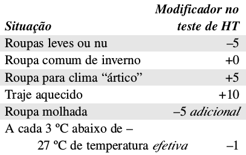
Uma
falha causa a perda de 1 PF. Como sempre, depois que a quantidade de
PFs chegar a 0, o personagem começará a perder 1 PV para cada PF.
Para recuperar os PFs ou PVs perdidos devido ao frio é preciso
abrigo adequado e uma fonte de calor (fogo, calor elétrico, calor
humano, etc.).
O número inicial de Pontos de Vida e a velocidade de uma pessoa ou objeto determinam o dano causado por uma colisão. A “Velocidade” é quão rápido um personagem ou objeto está se deslocando em metros por segundo (3 km/h = 1metro/s).
Um objeto numa colisão causa uma quantidade de dados de dano por contusão igual a (PV x velocidade)/100. Se isso for menos que 1d, trate como se fosse 1d – 2.
Se um objeto em movimento atingir um objeto parado muito grande para ser empurrado — como o chão, uma montanha ou um iceberg — isso causará o dano normal de colisão do objeto naquilo contra o que ele se chocou e em si mesmo . Se o obstáculo for quebrável, o objeto em movimento não poderá causar nem sofrer uma quantidade de dano maior que o número de PVs + RD do obstáculo. Queda Uma queda é uma colisão contra um objeto imóvel: o chão. Descubra a velocidade do personagem (em m/s) quando ele colidir utilizando a seguinte tabela:
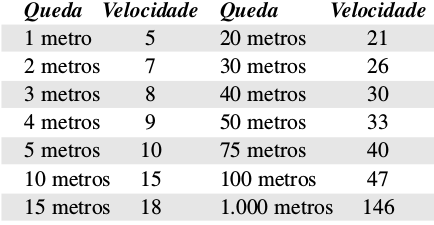
Se
um objeto cair sobre alguém, descubra a sua velocidade na tabela
acima e calcule o dano da mesma forma que o faria em uma colisão
normal.
Enfermidades e doenças estranhas podem afetar aventureiros em terras distantes... ou até mesmo em casa. A busca de uma cura — seja ela para a doença que faz a princesa definhar, uma praga alienígena ou a arma biológica de um terrorista — dá uma trama fantástica.
As coisas mais importantes a se saber sobre a doença em questão são:
Teste de Resistência : o teste de HT que deve ser feito para se evitar a doença. A maioria das doenças permite um teste que pode variar desde HT até HT – 6. No caso de um sucesso, a vítima não contrai a doença, no caso de uma falha, contrai, mas pode fazer testes posteriores — uma vez para cada “ciclo da doença” — para ver se consegue se livrar da enfermidade.
Incubação : este é o tempo de incubação entre a exposição inicial à doença e a aparição dos primeiros sintomas naqueles que falham em seu teste de resistência. No caso de uma doença “genérica” este tempo é 24 horas, mas pode variar consideravelmente nas doenças existentes no mundo real.
Dano : o efeito das doenças no mundo de jogo. Ele é tipicamente 1 ponto de dano tóxico, mas pode ser maior e chegar até 1d para doenças mais perigosas. A RD não protege contra doenças! Os sintomas (febre, coriza, tosse, pontos negros na visão, erupções, etc.) aparecem depois da pessoa começar a sofrer lesão. A lesão advinda de doença não poderá ser curada naturalmente até a vítima ser bem sucedida em seu teste de HT para se recuperar!
Ciclos da Doença : uma doença causa dano a suas vítimas em intervalos regulares até elas serem bem sucedidas no teste de HT ou que o número máximo de ciclos tenha se passado. O intervalo “padrão” entre os testes de HT é um dia. O número de ciclos varia de acordo com o grau de letalidade da doença; por exemplo, uma doença potencialmente letal poderia causar a perda de apenas 1 PV em cada ciclo mas durar de 20 a 30 ciclos.
Depois que os sintomas da doença se tornam aparentes, ela pode ser identificada com um teste de Diagnose. Este teste não consegue identificar doenças completamente novas, mas um bom resultado no teste pode dar informações suficientes para permitir um tratamento.
Remédios apropriados — ervas, drogas etc. — podem dar um bônus no teste de HT para curar certas doenças na mudança de ciclo. Em NT 6+, antibióticos (ex., penicilina) podem dar um bônus igual a +3 nas tentativas de recuperação da maioria das doenças bacteriológicas.
Se ficar uma parte de um turno em meio às chamas (ex., correndo através do fogo), o personagem sofrerá 1d – 3 pontos de dano por queimadura. Se ficar um turno inteiro em um fogo de intensidade mediana — ou se estiver inteiramente em chamas — o personagem sofrerá 1d – 1 pontos de dano por segundo. Um fogo muito intenso pode causar mais dano; exemplo: metal derretido ou uma fornalha causariam 3d pontos de dano por segundo!
A exposição contínua ao fogo pode resultar em um calor intenso que pode fatigar o personagem rapidamente mesmo que as chamas em si não consigam penetrar a sua RD. (v. Calor a seguir).
Um único golpe que cause ao menos 3 pontos de dano básico por queimadura inflama “parte” das roupas da vítima. Isto causa 1d – 4 pontos de dano por queimadura por segundo e distrai (redutor igual a –2 na DX a não ser que o dano simplesmente não possa ferir o alvo). Para apagar o fogo, a vítima tem de bater nele com as mãos. Isso requer um teste de DX, e cada tentativa exige uma manobra Preparar.
Um único golpe que inflija 10 ou mais pontos de dano básico por queimadura incendeia toda a roupa da vítima. Isto causa 1d – 1 pontos de dano por queimadura a cada segundo e distrai muito (redutor igual a –3 sobre a DX, exceto enquanto a vítima estiver rolando no chão para tentar apagar o fogo). Para apagar o fogo, a vítima tem de rolar no chão. Isso exige um teste de DX e cada tentativa requer três manobras Preparar. Saltar na água demora apenas um segundo, e extingue automaticamente as chamas.
Em todos os casos, lembre-se de aplicar sobre a DX os redutores devido ao choque, se o fogo chegar a causar lesão!
Em um clima quente comum, o personagem não sofrerá nenhum efeito nocivo se ficar na sombra e não andar muito. Mas, se permanecer ativo na faixa mais alta do que seria uma temperatura confortável para si — acima de 26o C para seres humanos — o personagem terá de fazer um teste de HT a cada 30 minutos.
Uma falha implica na perda de 1 PF. No caso de uma falha crítica, o personagem tem uma insolação e perde 1d PFs. Como acontece normalmente, se o número de PFs do personagem ficar menor ou igual a 0, ele começará a perder 1 PV para cada PF perdido. Ele não conseguirá recuperar os PFs nem os PVs perdidos devido ao calor enquanto não estiver em um ambiente mais fresco.
Da mesma maneira, em ambientes com temperatura até 15 oC acima do que seria confortável (33 oC – 48 oC para humanos), o personagem perde 1 PF extra sempre que perder PFs devido ao esforço ou à desidratação. Em ambientes com temperaturas até 30o C acima do que seria confortável (48 oC – 63 oC para humanos), isso se torna um custo extra de 2 PFs.
O veneno pode aparecer em armas; em dardos, agulhas, puas de armadilhas, alimentos ou bebidas oferecidos por um inimigo traiçoeiro; e em qualquer outro lugar onde o personagem não o espere. As coisas mais importantes a se saber sobre um veneno são:
Tempo para fazer efeito : a maioria dos venenos requer um certo tempo que varia desde alguns segundos a até várias horas para fazer efeito. Isto é quase sempre verdade para agentes digestivos.
Resistência : alguns venenos concedem à vítima um teste de HT para ela resistir aos seus efeitos. Faça esse teste depois que o tempo para fazer efeito, se ele existir, tiver se passado. Muitas vezes existe um modificador: um veneno leve deveria pedir um teste de HT +2, enquanto que um veneno quase impossível de ser resistido pode exigir um teste de HT – 8! O mais comum é uma variação de HT até HT – 4. A RD nunca afeta esse teste.
Se o personagem se encontra em um ambiente venenoso (uma nuvem de gás ou uma atmosfera tóxica) e é bem sucedido em seu teste inicial de HT, ele tem de fazer o teste novamente uma vez por segundo até o veneno afetá-lo ou até ele deixar a área. Se o veneno tiver um tempo para fazer efeito, faça o teste após cada período desses.
Efeitos : o efeito mais comum dos venenos é o dano tóxico ou por fadiga . Venenos leves podem causar apenas a perda de 1 PV ou PF; venenos mais potentes podem causar 1d pontos de dano ou mais. A RD não tem nenhum efeito sobre este dano. Estas perdas de PV e PF devem ser curadas normalmente.
Se ficar completamente sem ar, o personagem perde 1 PF por segundo. Se estiver se afogando depois de uma falha em um teste de Natação, o personagem pode inspirar um pouco de ar, mas ele também engole um pouco de água: faça um teste de Natação a cada 5 segundos; uma falha causará a perda de 1 PF (v. Natação pág. 23).
Quando o número de PFs chegar a 0, o personagem precisará ser bem sucedido em um teste de Vontade por segundo, para não desmaiar. O personagem morre depois de 4 minutos sem ar, Independente da quantidade de PFs e PVs que ele tem.
Se aspirar ar limpo antes de morrer, o personagem pára de perder PFs e começa a recuperá-los à taxa normal (v. Recuperação da Fadiga pág. 31). Se estiver inconsciente, ele despertará logo que a quantidade de PFs chegar a 1. Se estiver se afogando, quem o resgatar terá também de fazer um teste de Primeiros Socorros para tirar a água de seus pulmões e salvá-lo.
Se o personagem ficar sem ar mais do que 2 minutos, terá de ser bem sucedido em um teste de HT para evitar um dano neurológico permanente: redutor igual a –1 sobre a IQ.
Cenário
Quando estiver desenvolvendo um novo cenário para seu grupo, comece com a lista a seguir. Ela não é de forma alguma exaustiva, mas se você gastar algum tempo descrevendo estes itens, certamente estará alguns passos à frente para um bom começo.
Línguas
Leis e Costumes
Sociedade e Governo
Níveis Tecnológicos
Economia
Outros Planos de Existência (se houver)
Cenários para Aventura
Perícias, Empregos e Profissões
Armas e Combate